イントロダクション
ようこそ、プログラミングの世界へ。
ようこそ、C言語の世界へ。
この資料は、『プログラム作成の経験を持たない入門者が、C言語を学習してゆくためのガイド』として、作成されました。
C言語は、単なる数あるプログラミング言語の一つではありません。それは、現代のIT社会を根底から支えるインフラストラクチャを構築してきた、普遍的な技術の礎です。Windowsのようなオペレーティングシステムから、Pythonのような現代的なプログラミング言語の処理系、Gitのような開発ツールに至るまで、その影響は計り知れません。
C言語を学ぶことは、単に文法を覚える作業ではなく、コンピューターがどのようにメモリを扱い、どのように命令を実行するのか、その動作原理の核心に触れる旅の始まりです。この基礎を固めることで、あなたは他のいかなる技術にも応用可能な、問題解決の本質的な思考力を手に入れることができるでしょう。
資料は3つのパートで構成されています。
- 第1部: C言語のもっともベーシックな部分について、学習します。
- 第2部: ポインタとメモリ管理の世界へ、足を踏み入れます。
- 第3部: さらに高度で実践的なトピックに、理解を広げてゆきます。
本資料では、初心者の皆さんに一歩一歩、無理なく理解を深めていただくために、「同じものを何度も別の視点視点から見直す」というアプローチをとっています。例えば「配列」について、第1部で基本的な使い方を示し、第2部で配列と「ポインタ」との密接な関係を説明し、C言語の総合的なメモリ管理へと理解を広げてゆきます。後になるほど視点がC言語のコア部分に近づき、同時に、高い視点に昇って、より広い範囲が見渡せるようになってゆきます。
それでは、プログラミングというエキサイティングな世界へ、踏み出してゆきましょう。
第1部 基礎編
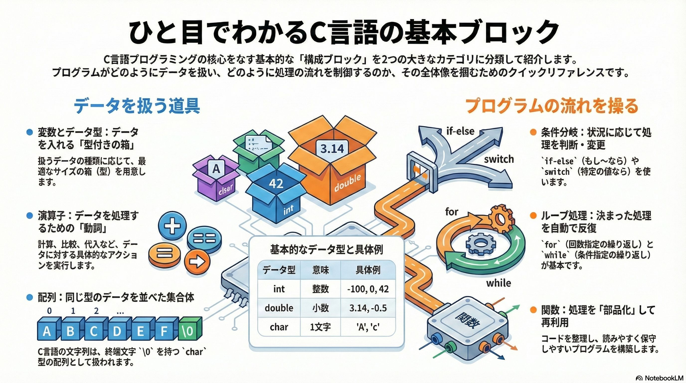
第1部では、C言語のもっともベーシックな部分について、学習します。これは皆さんがコンピューターに自分の言葉で命令を下す、その第一歩を力強く踏み出すために設計されました。
このガイドを終える頃には、あなたはC言語の基本的な概念と構文をマスターし、まるでレゴ・ブロックを組み立てるようにプログラムを組み立てていくことができるようになるでしょう。これは、あなたのキャリアにおける確かなスキルと自信を手に入れるための、重要なステップとなります。
そのための基本的な道具とその使い方を学びましょう。
以下のテーマを順を追って解説していきます。
- はじめの一歩: コンピューターとの対話方法の基本を学びます。
- 演算子: データを処理するための「動詞」を習得します。
- 配列の基礎: 複数のデータを効率的に管理する方法を学びます。
- 条件分岐: プログラムに「判断能力」を持たせます。
- ループ処理: 反復作業を自動化する技術を身につけます。
- 関数の基礎: コードを整理し、再利用可能な部品にまとめます。
- ファイル入出力とストリーム: データを永続的に保存する方法を学びます。
プログラミング学習は、今日がその記念すべき一日目です。このガイドが、あなたの輝かしいキャリアの第一歩となることを心から願っています。さあ、自信を持って、最初の力強い一歩を踏み出しましょう。
はじめの一歩
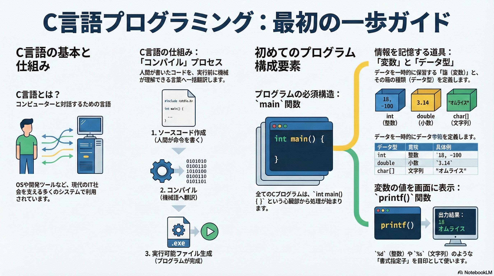
イントロダクション
プログラミングの世界へようこそ。この章が終わる頃、皆さんはコンピューターに自分の言葉で命令を下す、その第一歩を力強く踏み出しているはずです。本ガイドの目的は、皆さんがC言語の基本的な概念と構文をマスターし、自信を持って最初のプログラムを作成できるようになることです。
C言語は決して古い言語ではありません。現在でもWindowsのようなOSから、Pythonのような他のプログラミング言語の処理系、Gitのような開発ツールまで、私たちのIT社会を根底から支える多くのシステムで活躍しています。この章を終える頃には、皆さんは「コンピューターの基本的な動作原理を理解し、簡単なプログラムを自力で作成できる」という確かなスキルと自信を手にしているはずです。
本日のアジェンダは以下の通りです。この流れに沿って、一歩ずつ着実に学んでいきましょう。
- C言語とは？：コンピューターとの対話方法
- 最初のプログラム：基本構造の理解
- 情報の保管庫：変数とデータ型
- 情報を表示する技術：printf関数の活用
- 実践演習：自己紹介プログラムの作成
- まとめと次のステップ
1. C言語の世界へようこそ
このセクションでは、C言語がどのような言語で、なぜ今もなお重要視されているのか、その本質に迫ります。C言語は単にコードを書くための技術ではなく、コンピューターがどのように動作するのか、その仕組みを深く理解するための基礎となる、非常にパワフルなツールです。
C言語とは何か？
C言語とは、一言で言えば「コンピューターと対話するための『言語』」です。私たちが日本語や英語を使って互いに意思疎通するように、プログラマーはC言語のようなプログラミング言語を使って、コンピューターに「何をしてほしいのか」という指示を正確に伝えます。
C言語の重要性と実用例
C言語は、そのパワフルさと汎用性の高さから、現代社会を支える様々なシステムで採用されています。皆さんが日常的に利用しているものの多くが、C言語によって作られています。
- オペレーティングシステム (OS): Microsoft Windows
- 他のプログラミング言語: Pythonインタプリタ
- 開発ツール: Git (バージョン管理システム)
これらの例からもわかるように、C言語を学ぶことは、ITシステムの根幹を理解することに直結します。
C言語は「コンパイル言語」
C言語には、「コンパイル言語」であるという重要な特徴があります。これは、プログラムが実行されるまでのプロセスを指します。
- ソースコードの作成: 私たち人間が、C言語の文法に従ってテキストファイルに命令を書き出します。これが「ソースコード」です。
- コンパイル: 「コンパイラ」と呼ばれる専門の翻訳プログラムが、人間が書いたソースコードをすべて読み込み、コンピューターが直接理解できる機械語に一括で翻訳します。
- 実行可能ファイルの生成: コンパイルが成功すると、コンピューターが実行できる形式のファイル（Windowsなら.exeファイルなど）が作成されます。
この「事前に全て翻訳しておく」というプロセスにより、C言語のプログラムは非常に高速に動作するという強みを持っています。
C言語がどのような言語で、どうやってコンピューターが理解できる形になるのか、その全体像を掴みました。次はいよいよ、その「実行可能ファイル」の元となるソースコードの具体的な構造を解き明かしていきましょう。
2. 最初のプログラム：コンピューターに挨拶させよう
このセクションでは、C言語プログラムの最も基本的な「型」を学びます。一見すると複雑に見えるプログラムも、実はこれから学ぶ単純な要素の組み合わせで成り立っています。この骨格を理解することが、プログラミング学習の第一歩です。
プログラムの基本構造
C言語のプログラムには、必ず含めなければならないいくつかの構成要素があります。一つずつ見ていきましょう。
- #include <stdio.h>
- これは、画面に文字を表示するprintf()のような、「標準的なおしゃべり機能」を使うための準備です。最初は深く考えず、「おまじない」のようなものだと覚えてください。専門的には「インクルードディレクティブ」と呼び、便利な機能が詰まったライブラリをプログラムに組み込むための命令です。
- int main()
- C言語のプログラムは、必ずこのmainという名前の場所から実行が始まります。まさに「プログラムの心臓部」であり、処理のスタート地点です。
- 先頭のintは、この main関数 が処理を終えたときに「整数 (integer) 」の値を返すことを意味します。慣習として、プログラムが問題なく正常に終了したことを示すために 0 を返す return 0; という一文を最後に記述します。この 0 という値は、私たちのプログラムを呼び出したOS（オペレーティングシステム）に返され、「プログラムは問題なく正常に終了しました」という報告の役割を果たします。
- { } (波括弧)
- この記号は、処理の「かたまり」を示します。main関数の仕事がどこから始まり、どこで終わるのか、その範囲を明確にする役割があります。
- printf(“…”);
- これは、カッコ()の中に書かれた内容を画面に表示（出力）するための、最も基本的な命令です。
- ; (セミコロン)
- C言語では、一つ一つの命令（文）の終わりを明確にするために、必ずセミコロンを付けます。これは文章における句点「。」のようなもので、「これで一つの命令の終わりですよ」という区切りマークの役割を果たします。
完成コード
これらの要素を組み合わせると、コンピューターに「Hello, World!」と挨拶させるプログラムが完成します。
#include <stdio.h>
int main()
{
printf("Hello, World!");
return 0;
}
これでプログラムの基本的な骨格を理解できました。素晴らしい進歩です！ 次はこの骨格の中で、実際に様々な情報（データ）を扱うための重要な概念である「変数」について学んでいきましょう。
3. 情報を扱うための道具：変数とデータ型
プログラムが単なる決まった動作の繰り返しではなく、状況に応じて動的に動作するためには、情報を一時的に記憶しておく仕組みが不可欠です。この中核を担うのが「変数」と「データ型」です。
変数とは？
変数とは、プログラムが扱うデータ（例えば、年齢、名前、計算結果など）を一時的にしまっておくための「ラベル付きの箱」のようなものです。
この箱の最も重要な特徴は、ラベルの名前（例：age）は固定 ですが、中身の値（例：25）を後から自由に入れ替えられることです。この性質があるからこそ「変」数と呼ばれ、プログラムは柔軟な処理を行うことができます。
変数の使い方：宣言と代入
変数を利用するには、2つの基本的なステップが必要です。
- 宣言 (Declaration) 変数をいきなり使うことはできません。まず、「これからこういう箱を使いますよ」とコンピューターに知らせる必要があります。これを「宣言」と呼びます。
- 代入 (Assignment) 用意した箱に、実際のデータを入れる操作です。
- ここで使う記号=は、算数の「等しい」とは意味が異なります。プログラミングにおける=は、「右側の値を、左側の変数の箱に入れる」という命令だと覚えてください。
データ型とは？
なぜ宣言の際にintのような「型」を指定する必要があるのでしょうか？ それは、扱うデータの種類に応じて、コンピューターが最適なサイズの「箱」を効率的に準備するためです。例えば、5という小さな数を扱うのにintは十分ですが、地球の人口のような巨大な数をintに入れようとすると、箱が小さすぎて値が壊れてしまいます。データ型は、その変数（箱）に何を入れることができるのかを定義する、いわば「箱の種類」なのです。
以下に代表的なデータ型を示します。
| 型の種類 | 意味 | 具体例 |
|---|---|---|
| int | 整数 (Integer) | 10, -100, 0 など、小数点のない数 |
| float | 浮動小数点数 (単精度) | 3.14, -0.5 など、小数点のある数 |
| double | 浮動小数点数 (倍精度) | 3.1415926535 など、より桁数の多い小数 |
| char | 一文字 (Character) | ‘A’, ‘b’, ‘1’ など、単一の文字 |
| char[] | 文字列 | “Taro”, “Hello” など、複数の文字の連なり |
補足: intが最も基本的な整数の箱ですが、C言語にはより小さな値を扱うshortや、非常に大きな値を扱うlongなど、様々なサイズの箱が用意されています。また、C言語には“文字列“を直接扱うための専用のデータ型が存在しないため、一文字を扱うchar型を複数個並べた「文字の配列」という特殊な形式で文字列を表現します。
これで、プログラムの中で情報を記憶しておくための「箱」の作り方がわかりました。次のセクションでは、この箱の中身を画面に表示するための、より応用的なテクニックを学んでいきましょう。
4. 変数の内容を表示する：printf()の応用
これまでの知識で、決まった文字列を画面に表示できるようになりました。このセクションでは、プログラムの実行中に変化する「変数の中身」を動的に表示する手法を学びます。これをマスターすることで、プログラムの表現力は格段に向上します。
書式指定子 (Format Specifier)
printf()関数を使って変数の値を表示するには、「書式指定子（しょしきしていし）」という特殊な目印を使います。これは、表示したい文字列の中に「ここに、こういう種類の値が入りますよ」と、あらかじめ場所を確保しておくためのプレースホルダーです。
主な書式指定子の種類
データ型に応じて、使用する書式指定子は異なります。代表的なものを覚えましょう。
| 書式指定子 | 表示したい型 | イメージ（覚え方） |
|---|---|---|
| %d | int（整数） | Decimal（10進数）の d |
| %f | double / float（小数） | Float / Fraction（小数）の f |
| %c | char（文字） | Character の c |
| %s | 文字列 | String の s |
使用方法の具体例
printf()の中で書式指定子を使うには、以下のルールに従います。
printf(“フォーマット文字列”, 変数1, 変数2, …);
- 表示したい文字列の中に、値を入れたい場所へ書式指定子（%dなど）を記述します。
- 文字列の後ろにカンマ,を打ちます。
- カンマの後ろに、書式指定子に対応させたい変数を表示したい順番で並べます。
コード例:
int age = 30;
double height = 175.5;
printf("私の年齢は %d 歳で、身長は %f cmです。\n", age, height);
このコードでは、最初の%dに変数ageの中身が、次の%fに変数heightの中身がそれぞれ当てはめられて表示されます。
また、文字列の最後にある \n は、改行を意味する特殊な文字です。これがあることで、printf()の後の表示は新しい行から始まります。
これまでの知識を総動員すれば、基本的なプログラムを作成する準備は万全です。次の最終セクションでは、実際に手を動かして、学んだことの集大成として自己紹介プログラムを作成する演習に取り組みましょう。
5. 実践演習：自己紹介プログラムを作ろう
この演習の目的は、これまで学んだ知識（プログラムの基本構造、変数の宣言・代入、printfでの表示）を統合し、「自分で考えてプログラムを組み立てる」という一連の流れを体験することです。これは、学んだ知識を使えるスキルへと昇華させるための重要なステップです。
5.1 設計：プログラムの計画
コーディングを始める前に、どのようなプログラムを作るのかを計画する「設計」のフェーズが非常に重要です。今回は、年齢と好きな食べ物を表示する自己紹介プログラムを作成します。まず、扱う情報に対して、どのデータ型の変数を準備するかを考えましょう。
| 表示したい情報 | データの種類 | 使用する変数の型 | 変数の名前（例） |
|---|---|---|---|
| 年齢 | 整数（小数点なし） | int | age |
| 好きな食べ物 | 複数の文字 | char[] (文字列) | food |
5.2 実装：C言語コード
上記の設計に基づいて作成した、完全な自己紹介プログラムのコードです。
#include <stdio.h>
int main()
{
// 1. 変数を初期化
int age = 18;
char food[] = "オムライス";
// 2. printfを使って変数の内容を表示
printf("私は現在 %d 歳です。\n", age);
printf("好きな食べ物は %s です。\n", food);
return 0;
}
5.3 解説：コードの動作
このコードが何をしているのか、詳しく見ていきましょう。
-
int age = 18;
int型の変数 age を宣言すると同時に 18 という値を代入しています。このような宣言と代入の同時実行を、専門用語で「初期化 (initialization)」と呼びます。
-
char food[] = “オムライス”;
同様に、char[]型（文字列）の変数 food を“オムライス“という値で初期化しています。
-
printf(“私は現在 %d 歳です。\n”, age);
ここでは、セクション4で学んだ書式指定子 %d を使っています。これにより、文字列内の目印の場所に、変数ageの中身である18が正確に埋め込まれます。
-
printf(“好きな食べ物は %s です。\n”, food);
同様に、書式指定子 %s を使い、目印の場所に変数foodの中身である“オムライス“が埋め込まれて表示されます。
5.4 実行結果
このプログラムを実行すると、コンピューターの画面（コンソール）には以下のように表示されます。
私は現在 18 歳です。
好きな食べ物は オムライス です。
素晴らしい！ この演習を自力で理解できたなら、あなたはもう単なる学習者ではありません。プログラムを「作る側」の人間です。それでは最後に、本章のまとめと、今後の学習についてお話しします。
6. まとめと次のステップ
この章では、C言語プログラミングの基礎となる非常に重要な概念を学びました。最後に、学習内容を振り返りましょう。
本章の学習内容サマリー
- C言語の基本構造: 全てのプログラムの骨格となるmain関数と、機能を追加するための#includeについて学びました。
- 変数とデータ型: 情報を一時的に記憶するための「変数」という箱と、その箱の種類を定義するintやcharなどの「データ型」を理解しました。
- printf関数の活用: 画面に情報を表示するprintf関数の基本的な使い方と、変数の中身を動的に表示するための「書式指定子」について学びました。
- プログラム作成のプロセス: 設計、コーディング（初期化を含む）、実行という一連の流れを、自己紹介プログラムの作成を通して実践しました。
次のステップへ
ここで学んだ知識は、プログラミングの世界への第一歩です。ここからさらに学びを深めることで、プログラムでできることの幅は大きく広がります。
次のステップとして推奨するのは、「計算処理」です。+（足し算）や-（引き算）といった演算子を使い、コンピューターに計算をさせる方法を学ぶことで、より実用的なプログラムを作成できるようになります。
最後に
プログラミング学習は、ここで手に入れた「知識」を「知恵」に変えていく旅です。エラーと向き合い、解決策を考え抜く、そのプロセスこそが皆さんを優れた技術者へと成長させます。今日がその記念すべき一日目です。お疲れ様でした。
演算子
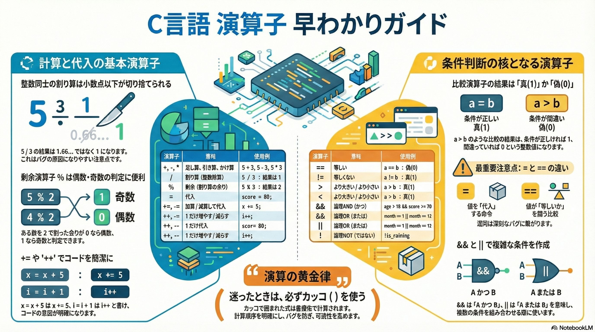
1. はじめに：演算子とは何か？ なぜ重要なのか？
本章の記述は、C言語プログラミングの核心をなす「演算子（えんざんし）」について、プログラムを学び始めた皆さんが、その役割と使い方を体系的に理解することを目的としています。
プログラムとは、突き詰めればデータを処理する命令の集まりです。そして演算子とは、その処理の最も基本的な「動詞」、つまり足し算や比較といった具体的なアクションを実行するための「道具」なのです。
これらの道具を一つひとつ正しく理解し、適切に使いこなすことが、意図通りに動作する信頼性の高いコードを書くための、揺るぎない第一歩となります。
本章の説明を通じて、C言語に用意されている様々な演算子の種類とその役割を順を追って学んでいきましょう。
2. 数値計算の基本：算術演算子
算術演算子は、プログラムにおけるあらゆる数値計算の土台を形成する、極めて重要な要素です。言い換えれば、これらがなければデータに基づいた意味のある処理はほとんど実現できません。ここでは、C言語における基本的な計算のルールを学びます。
算術演算子の一覧
C言語では、主に以下の5つの算術演算子が使用されます。
| 演算子 | 意味 | 使用例 | 結果 |
|---|---|---|---|
| + | 足し算 （加算） | 5 + 3 | 8 |
| - | 引き算 （減算） | 5 - 3 | 2 |
| * | かけ算 （乗算） | 5 * 3 | 15 |
| / | 割り算 （除算） | 5 / 3 | 1 |
| % | 剰余 （割り算の 余り） | 5 % 3 | 2 |
重要な注意点
- 乗算・除算記号 プログラミングの世界では、数学で使う記号とは異なり、かけ算には * (アスタリスク)、割り算には / (スラッシュ) を使用します。これはC言語に限らず、多くのプログラミング言語で共通のルールです。
- 整数除算の罠 上記の表で
5 / 3の結果が1.666...ではなく1になっている点に注意してください。C言語では、整数同士の割り算の結果は、小数点以下が切り捨てられ、整数になります。これはバグの原因となりやすいため、正確な計算が必要な場合は後述する「キャスト演算子」の知識が重要になります。
剰余演算子（%）の価値
剰余演算子 % は、単に「割り算の余り」を求めるだけではありません。特定の周期を持つ処理や条件判定において、非常に強力な道具となります。
代表的なユースケース：偶数・奇数の判定 ある整数 n が偶数かどうかを判定したい場合、n % 2 の計算結果を見ます。
- 結果が
0ならば、その数は2で割り切れるため 偶数 です。 - 結果が
1ならば、その数は2で割り切れないため 奇数 です。
このように、剰余演算子は特定の条件を満たすかどうかを簡潔に判定する際に役立ちます。
基本的な計算方法を理解したところで、次にそれらの計算結果を変数に保存する方法を見ていきましょう。
3. 値の格納と更新：代入およびインクリメント・デクリメント演算子
プログラムが単に計算するだけでなく、その結果を記憶し、状態を変化させていくためには「代入」という概念が不可欠です。ここでは、変数に値を設定したり、既存の値を効率的に更新したりするための演算子を学びます。
3.1. 代入演算子：変数に値を「しまう」
代入演算子は、計算結果や特定の値を指定した変数に格納（代入）する役割を持ちます。
| 演算子 | 意味 | 使用例 | 同等のコード |
|---|---|---|---|
| = | 代入 | score = 80; | N/A |
| += | 加算代入 | x += 5; | x = x + 5; |
| -= | 減算代入 | y -= 2; | y = y - 2; |
| *= | 乗算代入 | z *= 3; | z = z * 3; |
複合代入演算子の利点
x = x + 5; というコードは、「変数xの現在の値に5を足し、その結果を再び変数xに格納する」という意味です。このような「自分自身の値を更新する」処理は、プログラミングでは非常に頻繁に登場します。
x += 5; のような複合代入演算子は、この頻出パターンをより短く、そして直感的に記述するために用意されています。この形式は、単に文字数を減らすだけでなく、「この変数は自身の状態を更新している」という意図をコード上で明確に示します。これにより、大規模なプログラムでもデータの変更追跡が容易になります。
3.2. インクリメント・デクリメント演算子：「1」だけ増減させる
変数の値を「1だけ増やす」または「1だけ減らす」という操作は、特にループ処理などでカウンターを管理する際に極めて頻繁に行われます。そのための専用の便利な演算子が用意されています。
| 演算子 | 意味 | 使用例 | 同等のコード |
|---|---|---|---|
| ++ | インクリメント （1増やす） | i++; | i = i + 1; |
| – | デクリメント （1減らす） | j--; | j = j - 1; |
これらの演算子の戦略的重要性
例えば「1から10まで順番に処理を繰り返す」といったループを実装する場合、カウンタ変数を i とすると、ループの各ステップで i++ を実行することになります(ループについては、後の章で詳しく学びます)。このような定型的な処理を、i = i + 1; よりもはるかに簡潔に表現できるため、これらの演算子はC言語の構文に不可欠な要素となっています。実務では i++ のように、変数の後ろにつけることが多いです。
変数の値を操作する方法を学んだので、次はその値同士を比較してプログラムの動作を分岐させる方法を学びましょう。
4. 条件判断の核：比較演算子と論理演算子
優れたプログラムは、単に上から下へ一直線に処理を実行するだけではありません。特定の条件に応じて動作を変える「知能」を持っています。その判断ロジックを組み立てるための基本的な部品が、ここで紹介する比較演算子と論理演算子です。
4.1. 比較演算子：二つの値を「比べる」
比較演算子は、二つの値の関係性（等しいか、大きいかなど）を評価し、その結果を返します。
| 演算子 | 意味 | 使用例 (a=10, b=5 の場合) | 結果 |
|---|---|---|---|
| == | 等しい | a == b | 偽 (0) |
| != | 等しくない | a != b | 真 (1) |
| > | より大きい | a > b | 真 (1) |
| < | より小さい | a < b | 偽 (0) |
| >= | 以上 （より大きいか、等しい） | a >= b | 真 (1) |
| <= | 以下 （より小さいか、等しい） | a <= b | 偽 (0) |
結果の性質：真(1)か偽(0)か
比較演算が返す結果は、必ず「真（True）」または「偽（False）」のどちらかになります。C言語では、慣習的に真を 1、偽を 0 という整数で表現します。これらの演算子が返す 1 (真) か 0 (偽) という結果は、プログラムの流れを分岐させる if 文の『スイッチ』として機能します。この仕組みが、プログラムに知能を与える基本です。
最重要注意点：= と == の違い
警告： 初心者が最も陥りやすい間違いの一つが、代入演算子 = と等価比較演算子 == の混同です。
- a = 10; は、「aという変数に10を代入する」という命令です。
- a == 10; は、「aの値は10と等しいか？」という**問いかけ（比較）**です。
条件分岐の if 文などでこれらを間違えると、意図しない動作や深刻なバグの原因となります。常に意識して使い分けるようにしてください。
4.2. 論理演算子：複数の条件を「組み合わせる」
一つの比較だけでは表現できない、より複雑な条件を組み立てるために論理演算子を使用します。
| 演算子 | 意味 | 日本語の意味 | 使用例 |
|---|---|---|---|
| && | 論理AND | A かつ B | age > 18 && score >= 70 |
| || | 論理OR | A または B | mounth == 1 || month == 12 |
| ! | 論理NOT | A ではない | !is_raining |
各演算子の論理
- 論理AND (&&): 「A かつ B」を意味します。両方の条件が真のときのみ、全体の評価が真 (1) になります。
- 例: 「年齢が18歳より大きく、かつ、スコアが70点以上」という条件を満たす場合にのみ真となります。
- 論理OR (||): 「A または B」を意味します。どちらか一方、あるいは両方の条件が真であれば、全体の評価が真 (1) になります。
- 例: 「月が1月または12月」という条件のように、いずれかの条件を満たせば真となります。
- 論理NOT (!): 「A ではない」を意味します。条件の真偽を反転させます。真 (1) の条件に付けると偽 (0) になり、偽 (0) の条件に付けると真 (1) になります。
- 例: 「is_raining (雨が降っている) が偽の場合」を判定したいとき、!is_raining と書くことで「雨が降っていないならば」という条件を簡潔に表現できます。
複数の演算子を組み合わせる際の計算順序には明確なルールが存在します。次のセクションで、その優先順位について見ていきましょう。
5. 演算のルール：演算子の優先順位
5 + 3 * 2 という数式があった場合、私たちは自然と掛け算を先に行い、答えが 11 であると理解します。プログラムも同様に、式の中に複数の演算子が含まれる場合、どの計算を先に行うかを決定するための「優先順位」というルールを持っています。このルールを無視すると、予期せぬ計算結果やバグに繋がるため、正しく理解することが重要です。
優先順位の階層
C言語における主要な演算子の優先順位は、高いものから順に以下のようになります。
- 最も高い: カッコ () の中
- 次に高い: 単項演算子 (++, –, !)
- 次に高い: 乗算 (*), 除算 (/), 剰余 (%)
- 次に高い: 足し算 (+), 引き算 (-)
- 次に高い: 比較演算子 (>, <, ==, != など)
- 次に高い: 論理演算子 (&&, ||)
- 最も低い: 代入演算子 (=, += など)
最も重要な実践的アドバイス
これらの優先順位をすべて暗記するのは大変ですし、間違いのもとです。そこで、プロの現場でも遵守されている最も安全で確実なルールがあります。
黄金律： 迷ったときは、必ずカッコ () を使う
カッコ () で囲まれた式は、他のどの演算子よりも常に最優先で計算されます。これにより、開発者は計算順序をコンパイラに明確に指示でき、意図しない動作を防ぐことができます。コードの可読性も向上するため、優先順位が自明な場合でも、複雑な式では積極的にカッコを使用することが推奨されます。
計算のルールを学んだ上で、さらにC言語が内部でデータをどのように扱っているかを理解するための、少し特殊な演算子について解説します。
6. メモリと型を扱う特殊な演算子
これまでに学んだ演算子とは少し趣が異なり、データの「大きさ」や「種類（型）」といった、よりコンピュータの内部構造に近い情報を扱うための特殊な演算子が存在します。これらを理解することは、メモリ効率や計算精度を意識した、より高度で精密なプログラミングへの扉を開きます。
6.1. sizeof演算子：データの「大きさ」を調べる
sizeof演算子は、変数やデータ型がコンピュータのメモリ上でどれくらいのサイズ（バイト数）を占めているかを調べるための「測定道具」です。この結果を printf 関数で表示する際には、%zu という専用の書式指定子を使用します。
プログラムが動作するとき、すべてのデータはメモリ上の「箱」に格納されます。sizeofを使えば、その「箱」の大きさを正確に知ることができます。例えば、sizeof(int) は int 型の変数が何バイトのメモリを必要とするかを返します。
関連概念：ビットとバイト
sizeofが返す値の単位である「バイト」を理解するために、情報の基本単位を知っておきましょう。
| 単位 | 意味 | イメージ |
|---|---|---|
| ビット (bit) | 情報を表す最小単位。2進数の1桁 (0か1) を表します。 | スイッチ1つ |
| バイト (Byte) | 8ビット をひとまとめにしたもの。 | 最も基本的なデータの箱 |
この「8ビット = 1バイト」という関係は、コンピュータサイエンスの基本です。例えば、sizeof(int) の結果が 4 であった場合、それは int 型のデータが 4 * 8 = 32 ビットの大きさを持つことを意味します。
6.2. キャスト演算子：データの「型」を一時的に変換する
キャスト演算子 (変換したい型) は、計算の途中で一時的に変数のデータ型を変更するための「型指定の魔法のカッコ」と考えることができます。
キャストの具体的な価値
- 問題提起 前述の通り、int 型の変数 a = 5, b = 2 があるとき、a / b の計算結果は小数点以下が切り捨てられ 2 になってしまいます。
- 解決策 ここでキャスト演算子を使います。(double)a / b と記述すると、計算の瞬間だけ変数 a が int 型の 5 から double 型の 5.0 として扱われます。C言語では、異なる型同士の計算では精度の高い方に合わせて処理が行われるため、もう一方の b も double 型の 2.0 として扱われ、5.0 / 2.0 の計算が実行されます。その結果、2.5 という数学的に正しい答えを得ることができます。
型の変換パターン
C言語における型の変換は、主に以下の2つのパターンで行われます。
- 明示的な型変換 これは、開発者が (double)a のようにキャスト演算子を意図的に使って型を変換するケースです。計算の精度を保証したい場合などに使用します。
- 暗黙的な型変換 これは、C言語のコンパイラが文脈に応じて自動的に型を変換するケースです。
- 格上げ: int 型の値と double 型の値を計算する場合、精度の低い int が自動的に double に「格上げ」されてから計算されます。
- 代入時の変換: int 型の変数に double 型の値を代入しようとすると、小数点以下が自動的に切り捨てられて整数部分だけが格納されます。（例:
int score = 95.8;と書くと、score には 95 が入ります）
これまでに学んだ演算子を組み合わせることで、プログラムの処理の流れを自在に制御する準備が整いました。
7. まとめと次のステップ
この章では、C言語における様々な「道具」である演算子について学んできました。数値計算を行う算術演算子、変数に値を格納する代入演算子、そしてプログラムに判断能力を与える比較演算子と論理演算子。これらの基本的な役割と使い方を理解できたはずです。
特に、比較演算子と論理演算子は、これから皆さんが学ぶプログラミングの次のステップにおいて、極めて重要な役割を果たします。なぜなら、これらの演算子が返す「真(1)」か「偽(0)」という結果こそが、プログラムの流れを制御する「条件分岐（if文）」や、同じ処理を繰り返す「繰り返し（for文, while文）」の動作を決定するからです。
今回身につけた演算子の知識を土台に、次はいよいよプログラムのフロー制御を学んでいきましょう。
配列の基本

イントロダクション
C言語の学習も、ここから新たなステージに入ります。この章を終える頃には、あなたは複数のデータを効率的に扱うための「配列（Array）」を完全にマスターし、C言語で最も強力な機能の一つである「ポインタ」の学習に進むための揺るぎない土台を築くことができるようになります(ポインタについては、第2部で学びます)。一つずつ、着実に自分のスキルにしていきましょう。
1. 配列の基本概念：なぜ配列が必要なのか？
プログラムを作成する際、扱うデータが数個であれば個別の変数で管理することも可能です。しかし、クラス全員のテストの点数や、一年間の日々の気温など、大量のデータを扱う場面では、一つひとつ変数を宣言するのは現実的ではありません。このような課題を解決し、複数のデータを一つのまとまりとして効率的に管理するために不可欠な仕組みが「配列」です。
1.1. 配列とは何か？
配列とは、同じ型のデータを、連続したメモリ領域に並べて格納した集合体のことです。
この構造を身近なものに例えるなら、「同じ大きさの棚が並んだロッカー」を想像してみてください。それぞれの棚には同じ種類のモノ（データ）だけを格納でき、すべての棚は綺麗に一列に並んでいます。このロッカー全体が「配列」であり、一つひとつの棚がデータを格納する「要素」に相当します。
1.2. 配列の宣言と値の代入
C言語で配列を使用するには、まず「このようなロッカーを用意します」とコンピュータに伝える「宣言」が必要です。基本構文は以下の通りです。
データの型 配列の名前[要素の数];
例えば、10個の整数を格納できる配列を宣言する場合は、次のように記述します。
int numbers[10]; // int型のデータを10個格納できるロッカー「numbers」を用意
宣言した配列の各要素（棚）に値を代入するには、次のように記述します。
numbers[0] = 10; // 1番目の要素に10を代入
1.3. 配列要素へのアクセスとインデックス
配列内の特定の要素にアクセスするためには、「インデックス（添字）」と呼ばれる番号を使用します。これは、ロッカーの「棚番号」に相当します。
ここで、C言語における最も重要なルールの一つを覚えてください。それは、インデックスは 1 からではなく、必ず 0 から始まる「ゼロベース」であるということです。
したがって、int numbers[10]; のように10個の要素を持つ配列の場合、利用可能なインデックスは 0 から 9 までの10個となります。numbers[10] というインデックスは存在しないため、アクセスしようとするとエラーの原因となります。このゼロベースのルールは、特にループ処理で配列を扱う際に「オフバイワンエラー」と呼ばれるバグの原因となりやすいため、常に意識することが重要です。
例えば、配列の7番目の要素を取得したい場合、インデックスは 6 を指定します。
// 配列の7番目の要素（インデックスは6）を取得して表示する
printf("The 7th number in the array is %d", numbers[6]);
1.4. 配列の初期化
配列は、宣言と同時にその中身の値を設定する「初期化」を行うことができます。これにより、コードをより簡潔に記述できます。
// 宣言と同時に値を設定する
int example[] = {10, 20, 30, 40, 50};
このように初期化子 {} を使う場合、[] の中の要素数は省略可能です。コンパイラが値の数から自動的にサイズを判断します。
このインデックスの考え方は配列操作の基本中の基本ですので、ここでしっかり押さえておきましょう。配列の基本的な概念を理解したところで、次はこの配列を応用したC言語特有のデータ表現、すなわち「文字列」の扱いについて見ていきましょう。
2. C言語における文字列：文字の配列としての探求
多くのプログラミング言語には、テキストデータを扱うための専用の「文字列型」が用意されています。しかし、C言語にはこの「文字列型」というものが存在しません。その代わりに、C言語では文字の配列を用いて文字列を表現するという、言語としての重要な特徴を持っています。
2.1. 文字列の正体と終端文字
C言語における文字列の正体は、char 型（1バイトの文字を格納する型）のデータが並んだ配列です。
そして、ただ文字が並んでいるだけではなく、文字列の終わりを示すための特別な目印として「終端文字（ナル文字、\0）」が必ず末尾に格納されています。この \0 は、画面には表示されませんが、「ここで文字列は終わりです」と知らせる非常に重要な役割を担っています。printf のような関数は、この \0 を見つけるまでメモリ上の文字を一つずつ読み進めることで、文字列の終端を判断しています。
2.2. 文字列の簡単な初期化方法
文字列（文字配列）を初期化する最も簡単で一般的な方法は、ダブルクォーテーション “” を使うことです。
char greeting[] = "Hello";
この方法の最大の利点は、コンパイラが自動的に終端文字 \0 を末尾に追加してくれる点にあります。上記の例では、配列 greeting には H, e, l, l, o の5文字に加えて、最後に \0 が格納され、合計6個の要素を持つ配列が生成されます。この自動的な処理のおかげで、私たちは終端文字を意識することなく、直感的に文字列を扱うことができます。
文字列が文字の配列であることを理解できたでしょうか。次に、これらの文字列をコピーしたり、連結したりするための、C言語が提供する標準的なツールセットについて学んでいきましょう。
3. 文字列操作の標準テクニック：string.hライブラリ
文字列の長さを調べたり、内容をコピーしたりといった操作は、プログラミングにおいて頻繁に発生します。これらの基本的な処理を毎回自分で実装するのは非効率であり、バグの原因にもなりかねません。そこでC言語は、安全で効率的な文字列操作を可能にするための便利な関数群を、標準ライブラリ string.h として提供しています。
3.1. 主要な文字列操作関数
string.h に含まれる関数を使用するには、プログラムの冒頭で #include <string.h> と記述する必要があります。以下に、特によく使われる4つの主要な関数を紹介します。
| 関数名 | 機能 | 具体例（イメージ） |
|---|---|---|
| strlen() | 文字列の長さを調べる（\0は数えない） | “Apple” なら 5 を返す |
| strcpy() | 宛先の配列へ、元の文字列の内容を上書きコピーする。（注意：宛先配列のサイズが不足しているとメモリ破壊を引き起こす） | ある文字列を別の配列にそっくり移す。 |
| strcat() | 元の文字列の末尾に、二つ目の文字列を連結する。（注意：連結後の文字列を格納できる十分なサイズが宛先配列に必要） | 二つの文字列を繋げて一つにする。 |
| strcmp() | 文字列の比較を行う。同一なら 0 を返し、異なる場合は 0 以外の値を返すため、if文の条件分岐でよく使われる。 | 二つの文字列が同じかどうかを調べる。 |
これらの関数を使いこなすことで、文字列の操作を安全かつ簡潔に実装できます。
3.2. C言語における文字列コピーの注意点
Pythonのような他の言語に慣れている方が陥りやすい間違いとして、代入演算子 = を使った文字列のコピーが挙げられます。C言語では、string1 = string2 のような単純な代入演算子では、文字列の中身がコピーされません。
この挙動の理由は、C言語の変数が「値」そのものではなく「値が格納された場所」を指し示すポインタとして扱われる場合があるためです。詳細はポインタの章で明らかになりますが、現時点では「文字列コピーには strcpy() を使う」と覚えてください。
ここまでで、一次元の配列とその応用である文字列について学びました。次に、データをさらに立体的に扱うことができる、多次元配列の世界へと進んでいきましょう。
4. 多次元配列：行と列を持つデータの管理
これまで見てきた一次元配列が単なるデータの「リスト」であったのに対し、多次元配列、特に二次元配列は、スプレッドシートのような「表」や数学の「行列」といった、より複雑な構造を持つデータをプログラム内で直感的に表現することを可能にします。これにより、例えば座席表やゲームのマップといったデータを簡単に管理できるようになります。
4.1. 二次元配列の概念と宣言
二次元配列は、「一次元配列のリスト」あるいは「行と列を持つ表」として考えることができます。宣言するための基本構文は以下の通りです。
type arrayName[x][y];
ここで [x] は行数（タテの数）、[y] は 列数（ヨコの数） に対応します。例えば、3行4列の整数型二次元配列は次のように宣言します。
int matrix[3][4]; // 3行4列の整数型二次元配列
4.2. 二次元配列の初期化
二次元配列も、宣言と同時に初期化することができます。各行を波括弧 {} で囲むことで、表の構造を視覚的に分かりやすく表現できます。
int a[3][4] = {
{0, 1, 2, 3}, // 1行目 (インデックス 0)
{4, 5, 6, 7}, // 2行目 (インデックス 1)
{8, 9, 10, 11} // 3行目 (インデックス 2)
};
また、内側の波括弧は省略して、一次元配列のように記述することも可能です。
int a[3][4] = {0,1,2,3,4,5,6,7,8,9,10,11};
ここで一つ、非常に重要なルールがあります。初期化時に行数 [x] は省略できる場合がありますが（例: char vowels[][5]）、列数 [y] は絶対に省略できません。これにより、コンパイラは a[i][j] のような要素がメモリ上のどの位置にあるかを (i * 列数 + j) という計算式で特定できるのです。
4.3. 二次元配列の要素へのアクセス
二次元配列の特定の要素にアクセスするには、行と列の2つのインデックス a[i][j] を使用します。i が行インデックス、j が列インデックスです。
例えば、配列 a の「3行目の4番目の要素」（値は 11）にアクセスしたい場合、インデックスはゼロから始まるため、次のように記述します。
int val = a[2][3]; // 3行目 (インデックス2) の 4番目 (インデックス3) の要素を取得
配列の基本から応用までを学んできましたが、これらの知識はすべて、C言語の核心へと繋がっています。最後に、本章のまとめと、次のステップについてお話しします。
5. まとめと次のステップ：ポインタへの架け橋
この章では、C言語における配列の概念を多角的に学んできました。ここで、核心となるコンセプトを振り返りましょう。
- 基本機能: 配列は、同じ型のデータをメモリ上に連続して配置し、インデックスを使って効率的に管理するための基本的なデータ構造です。
- 文字列の表現: C言語には文字列型がなく、代わりに終端文字 \0 を持つ char 型の配列として文字列を扱います。
- 多次元配列: 二次元配列を使うことで、リスト構造を超えた「行」と「列」を持つ表形式のデータを直感的に扱うことができます。
これらの配列に関する深い理解は、C言語の学習における最大の山場であり、最も強力な概念である「ポインタ」を習得するための絶対的な土台となります。
ポインタとは、データの「値」そのものではなく、そのデータがメモリ上のどこに格納されているかという「場所（住所）」を直接扱うための仕組みです。そして、配列の名前自体が、実はポインタと密接な関係にあることを知ったとき、C言語の全体像がより鮮明に見えてくるはずです。
ポインタの詳細は第2部で学ぶことになります。そのとき、本章で得た配列の知識が、ポインタの世界へ挑戦する、とても重要な足掛かりになるでしょう。
条件分岐

イントロダクション
この章での学習の目的は、プログラムの動作を制御するための根幹技術である条件分岐の基礎を完全に理解することです。条件分岐は、特定の状況に応じてプログラムの振る舞いを変化させるための仕組みであり、あらゆるソフトウェア開発において不可欠なスキルです。この資料を通じて、その基本構文と応用テクニックを体系的に学んでいきましょう。
1. はじめに：プログラムにおける意思決定
このセクションでは、プログラミングにおける「意思決定」の概念を解説します。これは、私たちが日常生活で行う意思決定と非常によく似ています。状況に応じて最適な行動を選択するように、プログラムもまた、与えられた条件に応じて最適な処理を選択する必要があります。この能力こそが、単なる計算機だったプログラムに、状況に応じて判断し、動的に振る舞う「知性」を与えるのです。
私たちの人生において、常に何らかの意思決定が求められるように、プログラムもさまざまな選択肢の中から判断を下す必要があります。例えば、「もし特定の条件が満たされたならば、この処理を実行する」といった具合です。C言語では、このような意思決定の構造を非常にシンプルに記述できます。
int target = 10;
if (target == 10) {
printf("Target is equal to 10");
}
このコードは、変数targetの値が10と等しいかどうかを「判断」し、もし等しければメッセージを出力します。これが、プログラムにおける意思決定の核心です。
次のセクションでは、この判断の基礎となる最も基本的な構文、if文について詳しく学んでいきます。
2. 基本的な条件分岐：if文
プログラムに「プランB」を持たせたいとき、どうすればよいでしょうか？ if文は、まさにそのためのツールです。これはプログラムの流れを制御するための最も基本的かつ不可欠な構成要素であり、あらゆる条件分岐ロジックの出発点となります。
if文のコア機能は、指定された式が真（true）か偽（false）かを評価し、その結果が真であった場合にのみ、特定のコードブロックを実行するというものです。言い換えれば、「もし〜ならば、〜を実行する」というロジックをプログラム上で実現します。
先の例if (target == 10)で見たように、2つの変数が等しいかどうかを評価するためには、==（イコール2つ）という比較演算子を使用します。
注意： C言語で最もよくある間違いの一つが、比較の==と代入の=を混同することです。if (target = 10)と書いてしまうと、targetに10が代入され、その代入式の結果（この場合は10、C言語では非ゼロなので真と評価される）が条件となってしまいます。常に比較には==（イコール2つ）を使用することを徹底してください。
もちろん、等しいかどうかだけでなく、大小関係を評価することも可能です。不等号演算子（<や>）を用いることで、値の比較に基づいた条件分岐を実装できます。
int foo = 1;
int bar = 2;
if (foo < bar) {
printf("foo is smaller than bar.");
}
if (foo > bar) {
printf("foo is greater than bar.");
}
上記のコードでは、最初のif文でfoo < bar（1は2より小さい）が評価されます。この式は真であるため、「foo is smaller than bar.」というメッセージが出力されます。一方、2番目のif文のfoo > bar（1は2より大きい）は偽であるため、その中のprintf文は実行されません。
しかし、if文だけでは「条件が満たされなかった場合」に何をするかを明示的に定義できません。この課題を解決するのが、次にご紹介するif-else文です。
3. 条件が偽の場合の処理：if-else文
プランAがうまくいかなかった時のために、「プランB」が必要になることはありませんか？ if文はプランAを提供しますが、その条件が満たされなかった場合に何が起こるでしょうか。そこでelseが、より堅牢なプログラムを作成するための不可欠なツールとして登場します。
elseキーワードは、if文の式が偽（false）と評価されたときに実行されるコードブロックを定義するために使用されます。これにより、「もし条件Aが真ならば処理Xを、さもなければ処理Yを実行する」という明確な二者択一のロジックを構築できます。
int foo = 1;
int bar = 2;
if (foo < bar) {
printf("foo is smaller than bar.");
} else {
printf("foo is greater than bar.");
}
この例では、foo < barが真であるため、ifブロック内のprintf文が実行され、elseブロックは無視されます。もしfooの値が3であれば、foo < barは偽となり、elseブロック内のprintf文が実行されることになります。この構造により、プログラムは必ずどちらか一方の道を確実に選択するようになります。
しかし、現実世界の選択肢は常に二者択一とは限りません。3つ以上の選択肢から1つを選ぶ必要がある場合はどうすればよいでしょうか。その答えが、次のelse if文にあります。
4. 複数の選択肢を扱う：else if文
このセクションでは、3つ以上の選択肢から1つを選ぶような、より複雑な意思決定をプログラムで実現するためのelse if文を学びます。これにより、条件分岐の表現力が飛躍的に向上します。
複数のifとelseを「連鎖させる（chaining）」ことで、多岐にわたる条件分岐を体系的に構築できます。これがelse if文の役割です。この構造を使うことで、「もしAならばXを、そうでなくもしBならばYを、それ以外ならばZを」といった多段階のロジックを記述できます。
変数fooとbarの比較を例に、「より小さい」「等しい」「より大きい」という3つの状態を評価してみましょう。
int foo = 1;
int bar = 2;
if (foo < bar) {
printf("foo is smaller than bar.");
} else if (foo == bar) {
printf("foo is equal to bar.");
} else {
printf("foo is greater than bar.");
}
この構造の最も重要な特性は、効率性と排他性です。条件は上から順に評価され、一つでも真と評価されたブロックが実行されると、後続のelse ifやelseは完全に無視されます。これにより、不要な評価をスキップできるだけでなく、複数の条件が同時に真になりうる場合でも、必ず一つの処理だけが実行されることが保証されます。
さらに複雑なロジックを構築するためには、条件の入れ子（ネスト）や論理演算子といった応用テクニックがあります。次のセクションで、これらの強力な手法を見ていきましょう。
5. 特定の値に基づいた効率的な分岐：switch-case文
これまで学んだ else if 文は非常に強力ですが、もしチェックしたい条件が「1つの変数の値が何であるか」という点に集中している場合、コードが少し読みづらく（冗長に）なってしまうことがあります。
例えば、サイコロの目（1〜6）に応じて処理を変えたい場合、else if を5回も書くのは大変です。このような「特定の値による多方向への分岐」を、よりスッキリと、かつ効率的に記述するために用意されているのが switch-case文 です。
switch 文は、1つの変数の値を評価し、その値に一致する case ラベルへ「ジャンプ」する仕組みです。
基本的な構文
int dice = 2;
switch (dice) {
case 1:
printf("1が出ました。\n");
break;
case 2:
printf("2が出ました。\n");
break;
case 3:
printf("3が出ました。\n");
break;
default:
printf("4以上の目が出ました。\n");
break;
}
このコードの動きを分解してみましょう。
A. case ラベル
switch の後ろのカッコ内の値（この場合は dice）が、case の後ろに書かれた定数と一致するかをチェックします。一致すれば、そこからプログラムの実行が始まります。
B. break 文（重要！）
各 case ブロックの最後にある break は、「スイッチから抜け出す」ための命令です。
もし break を書き忘れると、次の case の中身まで連続して実行されてしまいます。 これを「フォールスルー（Fall-through）」と呼びます。意図的に使うこともありますが、初心者のうちは「case と break はセット」と覚えておくのが安全です。
C. default ラベル
どの case にも一致しなかった場合に実行される場所です。これは if-else 文における最後の else と同じ役割を果たします。いわば、プログラムの「セーフティネット」です。
switch 文が適している場面
switch 文は非常に便利ですが、どんな条件分岐にも使えるわけではありません。以下の特徴を理解しておきましょう。
- 整数または文字の比較に限定: C言語の
switch文は、基本的にint型（整数）やchar型（文字）の「一致（==）」しか判定できません。「10より大きいか」といった範囲の判定はif文の領分です。 - 可読性の向上: 選択肢が4つ、5つと増えていく場合、
else ifを並べるよりもswitchを使ったほうが、「何に基づいて分岐しているのか」がひと目で分かるようになります。
これで、C言語における条件分岐の主要な道具がすべて揃いました。状況に応じて if-else と switch-case を使い分けることが、美しくバグの少ないプログラムへの第一歩です。
6. 応用的な条件分岐のテクニック
ここまでのセクションで学んだif, if-else, else ifという基本構造を組み合わせることで、より現実的で精緻なプログラムロジックを構築できます。このセクションでは、そのための応用テクニックを2つ紹介します。
6.1. 条件の入れ子（ネスト）構造
if-else文の中に、さらにif-else文を配置することを「ネスト（入れ子）」と呼びます。これにより、ある条件が満たされた後、さらに詳細な条件で処理を分岐させることが可能になります。
以下のコードは、「ピーナッツの瓶」を例にしたネスト構造です。
int peanuts_eaten = 22;
int peanuts_in_jar = 100;
int max_peanut_limit = 50;
if (peanuts_in_jar > 80) {
if (peanuts_eaten < max_peanut_limit) {
printf("Take as many peanuts as you want!\n");
}
} else {
if (peanuts_eaten > peanuts_in_jar) {
printf("You can't have anymore peanuts!\n");
} else {
printf("Alright, just one more peanut.\n");
}
}
このロジックをステップバイステップで分析してみましょう。
- 外側のif: まずpeanuts_in_jar > 80（瓶の中のピーナッツは80個より多いか？）が評価されます。100 > 80なので、この条件は真です。
- 内側のif: 次に、外側のifブロックの中にあるpeanuts_eaten < max_peanut_limit（食べた数は上限より少ないか？）が評価されます。22 < 50なので、この条件も真です。
- 最終出力: 結果として、「Take as many peanuts as you want!」が出力されます。
もし最初の条件（peanuts_in_jar > 80）が偽であったなら、プログラムはelseブロックに進み、そこにある内側のif-else構造で次の判断を行っていたでしょう。
このように、ネスト構造は条件の依存関係を表現するために不可欠です。「瓶に十分なピーナッツがある」という親条件が満たされて初めて、「食べたピーナッツの上限数」という子条件を評価する意味が生まれます。この階層的な判断こそが、複雑で現実的なロジックを構築する鍵となります。
6.2. 論理演算子による複数条件の評価
2つ以上の式を組み合わせて、より複雑な単一の条件を評価したい場合があります。その際に役立つのが論理演算子です。
- AND演算子 (&&)
- 機能: A && Bのように使い、AとBの両方の式が真の場合にのみ、全体が真と評価されます。
- 典型的な利用シーン: ユーザー名とパスワードが両方とも正しいか検証する、年齢が18歳以上かつ65歳未満であるかを確認するなど、複数の条件が同時に満たされる必要がある厳格なシナリオで使用します。
- 例:
- OR演算子 (||)
- 機能: A || Bのように使い、AとBのいずれか一方、または両方の式が真の場合に、全体が真と評価されます。
- 典型的な利用シーン: ユーザーが「管理者」または「スーパーユーザー」の権限を持っているか確認する、入力された値が「y」または「Y」であるかを判定するなど、複数の条件のうち少なくとも一つが満たされれば良い、より柔軟なシナリオで使用します。
- 例:
- NOT演算子 (!)
- 機能: 式の結果を反転させます。真は偽に、偽は真になります。特によく使われるのが!=で、「等しくない」ことを評価します。
- 典型的な利用シーン: ファイルが存在しない場合にエラー処理を行う、ユーザーが特定のグループに所属していないことを確認するなど、条件の不成立をトリガーにしたい場合に使用します。
- 例:
これらの応用テクニックを駆使することで、プログラムの意思決定能力は格段に向上します。次のセクションでは、ここまでに学んだ知識を実践的な演習で確認してみましょう。
7. 実践演習：知識の応用
理論的な知識を確かなスキルに変えるためには、実際に自分の手でコードを書く実践が不可欠です。この演習を通じて、if, else if, elseの知識を応用し、具体的な問題を解決する力を養いましょう。
演習目標: guessNumber関数内に、与えられた数値guessが555と等しいか、それより大きいか、小さいかを判断するif-else if-else文を構築してください。
要件: 以下の3つの条件に基づいて、指定されたメッセージを出力するようにしてください。
- guessが555と等しい場合、「Correct. You guessed it!」と出力する。
- guessが555より小さい場合、「Your guess is too low.」と出力する。
- guessが555より大きい場合、「Your guess is too high.」と出力する。
重要事項: printf文の末尾に、必ず改行文字\nを追加することを忘れないでください。
以下のスターターコードには、main関数内に3つのguessNumber呼び出しが含まれています。あなたのロジックが、低い場合・高い場合・正しい場合の3つのシナリオすべてで正しく動作するかをテストするためのものです。
スターターコード:
#include <stdio.h>
void guessNumber(int guess) {
// TODO: ここにコードを記述してください
}
int main() {
guessNumber(500);
guessNumber(600);
guessNumber(555);
}
8. まとめ：条件分岐の未来
この研修資料を通じて、C言語における条件分岐の基礎を学びました。最後に、主要な概念を振り返りましょう。
- if文: 条件が真の場合にコードを実行する基本構造。
- if-else文: 条件が真の場合と偽の場合で処理を分ける二者択一の構造。
- else if文: 3つ以上の選択肢から1つを選ぶための多段階の構造。
- ネスト構造: 条件分岐の中にさらに条件分岐を配置する応用テクニック。
- 論理演算子 (&&, ||, !): 複数の条件を組み合わせて複雑な評価を行うためのツール。
条件分岐は、C言語プログラミングにおける単なる一機能ではありません。それはアルゴリズムの根幹をなし、ゲーム、OS、業務アプリケーションといった、あらゆる複雑なソフトウェアの動作を支える基盤技術です。
今回学んだ知識は、皆さんのプログラミングにおける「語彙」を飛躍的に増やしました。これからは、現実世界の問題を「もし〜ならば」という条件の連続として捉え、それをコードに翻訳する訓練を積んでください。その実践こそが、優れたソフトウェア開発者への最短の道です。
ループ処理
1. はじめに：なぜループ処理が重要なのか？
ソフトウェアを開発する上で、同じ、あるいは類似した処理を何度も繰り返す場面は避けて通れません。この「反復処理」を効率的に、そして読みやすく記述するための基本構造が「ループ」です。ループを、あなたのソフトウェアの「組立ライン」だと考えてみてください。もし組立ラインがなければ、一つひとつの製品を手作業で組み立てるしかなく、それは遅く、間違いの多いプロセスになるでしょう。ループ処理をマスターすることは、データのための強力で自動化された工場を建設するようなものです。プログラムを学び始めた皆さんがこのスキルを最初に習得することは、その後の成長を大きく左右する、極めて重要なステップなのです。
C言語におけるループとは、シンプルに「特定のコードブロックを複数回実行する機能」と定義されます。C言語にはいくつかのループ構文が用意されており、それぞれに得意な処理や設計思想が存在します。
本ガイドでは、C言語における最も代表的な2つのループ、forループとwhileループに焦点を当て、その仕組みから実践的な使い方、そして高度な制御方法までを解説します。このガイドを読み終える頃には、状況に応じて最適なループを選択し、意図通りにプログラムを制御する自信が身についているはずです。
2. forループ：回数が決まっている反復処理
forループは、C言語において最も一般的で、構造化された反復処理の形式です。その最大の特長は、ループのライフサイクルを管理する3つの重要な要素が1行に凝縮されている点にあります。forループの構文は、いわばプログラマとの「契約」です。あなたは「(1)どこから始めるか」「(2)どこまで進むか」「(3)どのように進むか」を一行で宣言します。この契約こそが、forループを非常に堅牢で読みやすいものにしているのです。この設計思想により、意図しない無限ループといった致命的なバグの発生を未然に防ぎ、安全な反復処理を保証します。
forループの「契約」は、以下の3つの主要な構成要素から成り立っています。
- カウンタ変数(※)の初期化： ループが開始される前に一度だけ実行されます。ループの出発点を設定する処理です。
- 継続条件のチェック： 各反復処理が実行される前に評価されます。この条件式が真（true）である限り、ループは続行されます。
- カウンタの増分： 各反復処理のブロックが実行された後に実行されます。カウンタを更新し、ループが確実にゴールにたどり着くようにします。
※ カウンタ変数とは、あと何回繰り返すかを数えるための変数です。
ちなみに、慣習として、このような単純なループのカウンタ変数にはi、j、kといった一文字の変数がよく使われます。これはC言語のプログラムで頻繁に目にする伝統なので、ぜひ慣れておきましょう。
この3要素がどのように連携して動作するのか、0から9までの数字を順番に出力する具体的なコード例で見てみましょう。
int i;
// 1. 初期化 2. 継続条件 3. 増分
for (i = 0; i < 10; i++) {
printf("%d\n", i);
}
このコードを分析すると、forループの3要素が明確に対応していることがわかります。
- 初期化 (i = 0)： ループ開始前に、カウンタ変数iを0に設定します。
- 継続条件 (i < 10)： 各反復の開始時にiが10未満かを確認します。この条件が満たされている間だけ、ループが継続します。
- 増分 (i++)： printf文が実行された後、iの値が1増加します。これにより、iは0, 1, 2…と変化し、最終的に10になった時点で継続条件が偽（false）となり、ループは終了します。
さらに、forループは配列のようなデータ構造を処理する際にその真価を発揮します。カウンタ変数を配列のインデックスとして利用することで、すべての要素に順番にアクセスできます。以下の例は、配列内のすべての数値を合計するコードです。
int array[10] = { 1, 2, 3, 4, 5, 6, 7, 8, 9, 10 };
int sum = 0;
int i;
for (i = 0; i < 10; i++) {
sum += array[i];
}
/* sum now contains array[0] + array[1] + ... + array[9] */
printf("Sum of the array is %d\n", sum);
この例では、カウンタ変数iが0から9まで変化するのに合わせてarray[0], array[1], … array[9]というように、配列の各要素へアクセスしています。このように、反復回数が事前に明確な処理、特に配列の全要素に対する操作において、forループは非常に強力かつ安全な選択肢となります。
さて、反復回数が事前に決まっていない場合はどうすればよいでしょうか。次に、より柔軟な条件でループを制御できるwhileループを見ていきましょう。
3. whileループ：条件に基づく柔軟な反復処理
whileループの核心的な価値は、その柔軟性にあります。forループが「回数」に焦点を当てているのに対し、whileループは「特定の条件が真（true）である限り処理を継続する」という、よりシンプルな概念に基づいています。whileループは、初期化と増分処理を構文に含んでいないため、forループより構造がシンプルです。しかし、このシンプルさこそが、反復回数が事前に予測できない状況、例えばユーザーからの特定の入力があるまで待機する場合や、ある計算結果が特定の閾値に達するまで処理を繰り返す場合など、forループでは記述しにくいシナリオで不可欠な力となります。
whileループの基本構文は非常に簡潔です。
while (継続条件) {
/* 条件が真である限り実行されるコードブロック */
}
ここで注目すべきは、forループが持っていた3つの構成要素（初期化、条件、増分）が、whileループでは分散して記述される点です。
- 初期化： ループの前に、条件判定に使われる変数を手動で初期化する必要があります。
- 条件： while文の括弧内に記述します。
- 増分（更新）： ループブロックの内部で、条件判定に使われる変数を手動で更新しなければなりません。
この構造上の違いは、特にループの終了条件を管理する上で重要な意味を持ちます。以下のforループと等価なwhileループの例を見てみましょう。このコードは10回処理を実行します。
int n = 0; // 1. 初期化
while (n < 10) { // 2. 継続条件
n++; // 3. 増分（更新）
}
この例から分かるように、ループを正しく終了させるためには、ループ内部でのn++のような条件変数の更新処理が不可欠です。もしこの更新を忘れると、条件式が永遠に真となり、プログラムが停止しない「無限ループ」に陥ってしまいます。これは初心者が陥りやすい典型的なミスの一つです。 また、whileループは、常に真と評価される条件（例：while (1)）を与えることで、意図的に無限ループを記述することも可能です。
while (1) {
/* 意図的に無限に実行したい処理 */
}
この柔軟性は強力な武器であると同時に、慎重な管理が求められることを意味します。
whileループは、条件に基づいて柔軟に反復を制御できる点が強みです。しかし、時にはループの実行フローをさらに細かく制御したい場合があります。次のセクションでは、そのための高度なテクニックであるbreakとcontinueについて解説します。
4. ループフローの高度な制御：breakとcontinue
forやwhileを使った基本的な反復処理だけでは、複雑な要件に効率的に対応できないことがあります。例えば、「配列を検索して、目的の要素が見つかったら、残りの要素を調べる必要はないのでループを抜けたい」あるいは「特定の条件を満たす要素だけ処理をスキップしたい」といったケースです。このような状況でプログラムのロジックをより精緻かつ効率的に実装するための戦略的ツールが、breakとcontinueという2つの命令です。
break命令
break命令は、ループをその場で即座に強制終了させるために使用します。breakが実行されると、プログラムの制御はループ構文の直後の文に移動します。これは、ループの継続条件がまだ真であっても関係ありません。
以下の例では、無限ループ（while (1)）を記述していますが、変数nが10に達した時点でif文の条件が真となり、breakが実行されます。その結果、ループは10回の反復で確実に停止します。
int n = 0;
while (1) {
n++;
if (n == 10) {
break; // nが10になった瞬間にループを抜ける
}
}
このように、breakは特定の条件が満たされた時点で反復処理全体を終了させたい場合に非常に有効です。
continue命令
continue命令は、breakとは異なりループ全体を終了させるのではなく、現在のイテレーション（反復処理）のみをスキップし、即座に次のイテレーションの開始地点（forループの場合は増分処理、whileループの場合は条件判定）に進むために使用します。
以下の例では、変数nが奇数（n % 2 == 1）の場合にcontinueが実行されます。結果として、偶数のみが出力されます。
int n = 0;
while (n < 10) {
n++;
/* nが奇数かどうかチェック */
if (n % 2 == 1) {
/* ループブロックの先頭に戻る */
continue;
}
/* このコードはnが偶数の場合にのみ到達する */
printf("The number %d is even.\n", n);
}
このコードの動作を追ってみましょう。例えばnが3になったとします。if文の条件 n % 2 == 1 が真となり、continue文が実行されます。すると、その直後にあるprintfの行は即座にスキップされ、制御はループの先頭、つまりwhile (n < 10)の条件判定へとジャンプします。これが、奇数の場合にprintfが決して実行されない理由です。
breakが「ループからの脱出」であるのに対し、continueは「現在の回の処理を中断して次へ進む」という機能的な違いがあります。この2つを使いこなすことで、より複雑なロジックをシンプルに記述できるようになります。
ここまでで、forとwhileという2つの主要なループ構造と、そのフローを制御するbreakとcontinueについて学びました。最後のセクションでは、これらの知識を統合し、状況に応じて最適なループを選択するための指針をまとめます。
5. まとめ：適切なループの選択とベストプラクティス
これまでの解説で、C言語における主要なループ構文の機能と使い方を学んできました。しかし、真に品質の高いコードを書くためには、単に文法を知っているだけでは不十分です。それぞれのループが持つ特性を深く理解し、解決したい問題の性質に応じて最適なループ構造を選択する判断力が不可欠となります。
forループとwhileループのどちらを選択すべきか、その判断基準を以下のテーブルにまとめました。
| シナリオ | 推奨ループ | 理由 |
|---|---|---|
| 配列の全要素を処理するなど、反復回数が事前に明確な場合 | forループ | 初期化、条件、増分が一体となっており、ループの全体像を把握しやすく、無限ループのリスクが低い。 |
| 特定の条件が満たされるまで処理を繰り返すなど、反復回数が不確定な場合 | whileループ | 実行条件のみでループを制御するため、より柔軟な反復ロジックを記述できる。 |
最後に、プログラムを学び始めた皆さんがC言語のループ処理を実践する上で、常に心に留めておくべき最も重要な3つのベストプラクティスを挙げます。
- 無限ループの罠を回避する forループでは継続条件式を、whileループではループ内部での条件変数の更新を必ず確認してください。意図しない無限ループは、プログラムを停止させる深刻なバグの元です。特に覚えておくべき危険なパターンは、whileループ内でのcontinueの使い方です。**continue文の前にカウンタ変数を更新する処理があるか必ず確認してください。**これを怠ると、カウンタが更新されないままループの先頭に戻り続け、修正困難な無限ループに陥ります。
- カウンタ変数のスコープを意識する forループの初期化式で宣言された変数（例：for (int i = 0; …)）は、そのループ内でのみ有効です。一方、ループの外で宣言された変数はループ後も存在し続けます。変数のライフサイクルを理解し、適切に管理することがバグの少ないコードに繋がります。
- 常に自分の選択に疑問を持つ 反復回数が決まっているなら、迷わずforループを使いましょう。その構造はコードの意図を明確にし、他の開発者が読んだときの可読性を高めます。もしwhileループを書いたなら、一度立ち止まって自問してください。「これはforループで書けないか？」と。もし答えが「Yes」なら、forループの方がほぼ間違いなく、より明確で安全な選択です。このシンプルな自己修正の習慣が、あなたのコード品質を劇的に向上させるでしょう。
ループ処理はプログラミングの基本であり、その応用範囲は無限大です。本ガイドで得た知識を基に、多くのコードを書き、様々な問題に挑戦することで、ぜひループ処理をマスターしてください。
関数の基本
イントロダクション - コードの部品化から変数スコープ
ここでは、C言語における「関数（Function）」について、その基本から応用までを網羅的に解説します。関数は、単なるコードを記述するための構文ではありません。それは、複雑な問題を整理し、再利用可能で、保守性の高いプログラムを構築するための根幹をなす設計思想そのものです。プログラムを学び始めた皆さんにとって、このガイドは単に文法を学ぶだけでなく、優れたソフトウェア設計者としての第一歩を踏み出すための羅針盤となるでしょう。
1. 関数とは何か？：プログラムを「部品化」する思考法
プログラミングにおける関数とは、「特定の処理をひとまとまりにした部品」 と定義できます。大規模で複雑なプログラムを開発する際、すべての処理を一つの場所に書き連ねていくのは現実的ではありません。そこで、機能ごとに処理を小さな「部品」として分割し、それぞれに名前を付けて管理します。この「部品化」こそが、関数がもたらす最も戦略的な役割であり、管理しやすいプログラムを構築するための基本的な思考法です。
関数の主なメリット
関数を活用することで、プログラム開発において以下の3つの強力な利点が得られます。
- 再利用性 (Reusability): 一度作成した関数（部品）は、プログラム内のどこからでも、何度でも呼び出して使用できます。同じ処理を何度も書く必要がなくなり、コードの重複を排除できます。これにより、開発効率が飛躍的に向上し、プログラム全体の一貫性も保たれます。
- 可読性 (Readability): 処理のまとまりに calculate_sum や print_report といった具体的な名前を付けることで、そのコードブロックが何をしているのか一目で理解できるようになります。これにより、プログラムの全体像が把握しやすくなり、他の開発者がコードを読む際の負担も大幅に軽減されます。
- 保守性 (Maintainability): プログラムの機能に修正や改善が必要になった場合、その機能に対応する関数だけを修正すれば済みます。関連のない他のコードに影響を与えるリスクが低減されるため、バグの発生を抑制し、安全かつ迅速に開発を進めることが可能になります。
関数の概念的な利点を理解したところで、次に、この強力な「部品」を実際にどのように作成し、使用するのかを見ていきましょう。
2. 関数の基本構造：定義と呼び出し
関数の概念を実際のコードに落とし込むには、「定義（作ること）」 と 「呼び出し（使うこと）」 という2つの基本操作を理解する必要があります。これらは、関数を扱う上での最も基本的なステップです。
2.1. 関数の定義 (Function Definition)
関数を定義する（作成する）際には、以下の3つの要素を指定する必要があります。これらは、コンパイラに関数がどのようなものかを伝えるための設計図の役割を果たします。
- 戻り値の型（返却値の型）: 関数が処理を終えた後、呼び出し元に返すデータの型を指定します。（例: int, float）。もし何も値を返さない場合は、voidという特別なキーワードを使用します。
- 関数名: その関数がどのような処理を行うのかが明確にわかる、適切な名前を付けます。命名規則は、コードの可読性を左右する重要な要素です。
- 引数（ひきすう）: 関数が処理を行うために、外部（呼び出し元）からデータを受け取るための入り口です。データとその型を指定します。引数が不要な場合は、voidと書くのが「引数がない」ことを明示する良い習慣ですが、括弧内を空()にすることも許されています。
これらの要素を組み合わせた、具体的な関数の定義例を見てみましょう。
// 関数の定義例
// 2つのint型整数を受け取り、その合計をint型で返す関数
int add(int a, int b) {
int sum = a + b;
return sum;
}
2.2. 関数の呼び出し (Function Call)
定義した関数をプログラム内で実際に使用するプロセスが「呼び出し」です。呼び出しは、「関数名」を指定し、必要であれば括弧内に「引数」として渡す値を記述する ことで行います。これにより、プログラムの制御がその関数に移り、定義された処理が実行されます。
先ほど定義したadd関数をmain関数から呼び出す例は以下の通りです。
// 関数の呼び出し例
int main() {
int result = add(5, 3); // add関数を呼び出し、戻り値を変数resultに格納
// この時点で、変数resultには8が格納される
return 0;
}
2.3. 値を返さない関数
すべての関数が値を返すわけではありません。画面にメッセージを表示する、ファイルにデータを書き込むなど、特定の操作を実行するだけで完結する処理もあります。このような場合、戻り値の型としてキーワード void を指定することで、値を返さない関数を作成できます。
// 値を返さない関数例
void hello(int num) {
printf("Num is %d\n", num);
}
さて、C言語ではコードが上から順にコンパイルされるという特性があります。この特性が、関数の配置にどのような影響を与えるのか、そしてその解決策である「プロトタイプ宣言」について次に見ていきましょう。
3. 関数のプロトタイプ宣言：コンパイラとの約束
C言語のコンパイラは、ソースコードを上から下へ順番に読み込んで解釈します。そのため、ある関数を呼び出す時点で、その関数がどのような形をしているかをコンパイラが知らなければエラーが発生します。特に、main関数の後に関数を定義する場合、この問題が顕著になります。
この問題を解決するための仕組みがプロトタイプ宣言です。これは、関数本体の定義より先に、「関数の形（戻り値の型、関数名、引数）だけをあらかじめコンパイラに知らせておくための宣言」 です。いわば、コンパイラに対して「これからこういう形の関数が登場しますよ」と事前に予告しておく「約束」のようなものです。これにより、コンパイラは関数の定義が後から出てきても、呼び出し時点でその存在を正しく認識できるようになります。
// 関数のプロトタイプ宣言
// 2つのint型整数を受け取り、int型を返す関数
int add(int a, int b)
関数の構造を理解したところで、次はその内外で使われる「変数」がどのように振る舞うのか、その有効範囲（スコープ）について掘り下げていきます。
4. 変数の有効範囲：ローカル変数 vs グローバル変数
変数がプログラム内のどこからアクセスできるか、その有効範囲を 「スコープ」 と呼びます。スコープの概念を理解することは、関数の独立性を保ち、プログラム全体の安全性を確保する上で極めて重要です。変数のスコープは、主に「ローカル変数」と「グローバル変数」の2種類に大別されます。
4.1. ローカル変数 (Local Variable)
ローカル変数は、特定の関数やブロック（{}で囲まれた範囲）の中でのみ有効な変数です。その特徴は以下の通りです。
- 宣言場所: 関数の中や、for文・if文などのブロック（{}）の中で宣言されます。
- 有効範囲: 宣言された関数内、またはブロック内でのみアクセス可能です。範囲外からアクセスしようとするとコンパイルエラーになります。
- 生存期間: その関数やブロックの実行が開始されると生成され、実行が終了すると同時に消滅します。
- 初期値: 明示的に初期化しない場合、その値は 不定（ごみデータ） となります。
4.2. グローバル変数 (Global Variable)
グローバル変数は、プログラム全体を通してどこからでもアクセスできる変数です。その特徴は以下の通りです。
- 宣言場所: すべての関数の外側（通常はファイルの先頭近く）で宣言されます。
- 有効範囲: プログラム内のどの関数からでもアクセス、読み取り、書き込みが可能です。
- 生存期間: プログラムの実行開始と同時に生成され、プログラムが終了するまでメモリ上に存続します。
- 初期値: 明示的に初期化しない場合、自動的に0に初期化されます。
4.3. 比較と実践的なアドバイス
ローカル変数とグローバル変数の主な違いを以下の表にまとめます。
| 特徴 | ローカル変数 | グローバル変数 |
|---|---|---|
| 有効範囲 | 宣言した 関数内 または ブロック内 のみ | プログラム全体（すべての関数） |
| 宣言場所 | 関数やブロックの 中 | すべての関数の 外 |
| 生存期間 | 関数やブロックの終了と共に 消滅 | プログラムの終了まで 存続 |
| 初期値 | 初期化しないと 不定（ごみ） | 初期化しないと自動的に0 |
💡 アドバイス
初心者のうちは、原則としてグローバル変数の利用は避け、ローカル変数を使用することを強く推奨します。グローバル変数はプログラムのどこからでも値を変更できてしまうため、「どこで値が変わったのか追跡するのが難しくなり、予期せぬバグの原因になりやすい」 という重大なリスクを伴います。データの受け渡しは、関数の引数と戻り値を使って明示的に行うのが安全なプログラミングの基本です。
これまでに学んだ知識は、効果的な関数を設計するための重要な要素です。最後に、これらの知識を総括し、実践的なスキルとして定着させるためのベストプラクティスを確認しましょう。
6. まとめ：優れた関数設計のためのベストプラクティス
本研修資料では、関数の基本概念である「部品化」から始まり、定義と呼び出し、プロトタイプ宣言、そして変数のスコープまで、C言語における関数の核心を解説してきました。これらはすべて、高品質なソフトウェアを構築するための基礎となります。
プログラムを学び始めた皆さんが、常に意識すべき、実践的な指針を以下にまとめます。
- 部品化の意識: 複雑な処理は、一つの巨大な塊として実装するのではなく、積極的に意味のある単位で関数に分割してください。これにより、コードの可読性と保守性が劇的に向上します。
- スコープの原則: 原則として変数はローカル変数として宣言してください。グローバル変数の使用は、意図せぬ副作用（バグ）の温床となるため、その必要性を慎重に検討し、使用を最小限に留めるべきです。
関数を自在に使いこなすことは、単にコードが書けるというレベルを超え、質の高いソフトウェアを論理的に設計するための第一歩です。ここで学んだ知識を土台とし、今後の更なる学習と実践に励んでください。
ファイル入出力とストリームの基礎
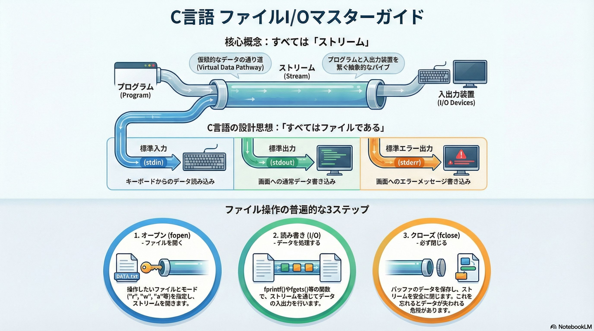
イントロダクション：なぜファイル操作を学ぶのか
プログラムが扱うデータは、通常メモリ上に存在するため、プログラムが終了すると失われてしまいます。しかし、多くの場合、計算結果やユーザーの設定、ログなどをプログラム終了後も保存し、次回起動時に再利用したいと考えるでしょう。この「データの永続化」を実現する最も基本的な手段が、ファイルへの入出力（I/O）です。C言語におけるファイル操作をマスターすることは、単なる一時的な計算機から、実用的なデータ処理アプリケーションを開発するための第一歩と言えます。
この資料では、C言語のファイル操作を理解する上で核心となる、以下の3つの概念を学びます。
- ストリームという統一的な概念: キーボード入力もファイル書き込みも、すべて「ストリーム」という同じ仕組みで扱われるC言語の設計思想を理解します。
- 基本的なファイル操作の3ステップ: ファイルを開き（Open）、読み書きし（I/O）、閉じる（Close）という、あらゆるファイル操作の基本となる不変のフローを学びます。
- 標準入出力との関係性: 普段何気なく使っている printf() や scanf() が、実はファイル操作の延長線上にあることを理解し、知識を結びつけます。
1. C言語の入出力における最重要概念：「ストリーム」
このセクションでは、C言語のI/Oを理解する上で根幹となる「ストリーム」という抽象的な概念を解説します。一見難しそうに聞こえるかもしれませんが、この概念を掴むことで、なぜキーボードからの入力とファイルへの書き込みが似たような関数で扱えるのか、その理由が明確に理解できるようになります。
ストリームの定義
ファイルストリームとは、プログラムとファイル（あるいはキーボードやディスプレイのような入出力装置）との間でデータが順序を保ったまま流れていく、仮想的な流れ道（パイプ）抽象化されたインターフェースとして機能します。
プログラムは、ハードディスクの物理的な構造といった複雑な詳細を意識する必要はありません。ただ、この「ストリーム」という流れ道に対して、データを「流し込む」（書き込み）か、「受け取る」（読み込み）だけで、入出力が完了します。ストリームは、こうしたハードウェアとの直接的なやり取りの複雑さを隠蔽してくれる、非常に便利な仕組みなのです。
C言語の設計思想：「すべてはファイルである」
C言語の入出力システムには、「すべてはファイルである」 という非常に重要な設計思想があります。これは、キーボード、画面（ディスプレイ）、そしてディスク上に存在する物理的なファイルといった、性質の異なるあらゆる入出力装置を、すべて「ストリーム」という統一的な方法で抽象化して扱うという考え方です。
この思想のおかげで、プログラマは以下のような恩恵を受けられます。
- コードの単純化: データの入力元や出力先がキーボードであろうとファイルであろうと、同じような関数（例：fprintf() と printf()）を使って処理を記述できます。
- 柔軟性の向上: プログラムの修正を最小限に抑えながら、データの入力元をファイルからキーボードに切り替えたり、その逆を行ったりすることが容易になります。
この強力な「ストリーム」という抽象化は、実は皆さんが既に使用している printf のような関数にも適用されています。次に、その最も身近な例である「標準ストリーム」を解き明かし、理論と実践を結びつけましょう。
2. 最も身近なストリーム：標準ストリーム
このセクションでは、皆さんがこれまでC言語の学習で何気なく使ってきた printf() が、実は「標準ストリーム」という仕組みの上で動作していることを解き明かします。これにより、ファイル操作は全く新しい未知の技術ではなく、既存の知識の延長線上にあるということを理解できるはずです。
標準ストリームとは？
プログラムが実行を開始すると、OSは自動的に3つの基本的なストリームを開き、プログラムがすぐに使えるように準備してくれます。これらを標準ストリームと呼びます。
| ストリーム名 | C言語での名前 | 対応する装置 | 役割 |
|---|---|---|---|
| 標準入力 | stdin | キーボード | プログラムへの入力データ源となる読み取り専用ファイル。 |
| 標準出力 | stdout | 画面（ディスプレイ） | プログラムからの通常の出力先となる書き込み専用ファイル。 |
| 標準エラー出力 | stderr | 画面（ディスプレイ） | エラーメッセージ専用の出力ファイル。 |
つまり、printf(“Hello”); というコードは、fprintf(stdout, “Hello”); の短縮形と考えることができます。内部的には「stdoutという名前の標準出力ストリームに “Hello” という文字列を書き込む」という処理を行っているのです。
主要な標準入出力関数
標準ストリームを介して、キーボードや画面とやり取りするための主要な関数を見ていきましょう。
画面への出力 (stdout)
- printf(): 書式指定子 (%d, %s など) を使って、様々な型のデータを整形して出力できる、最も柔軟で一般的な関数です。
- putchar(): 1文字だけを出力します。単純な文字出力に特化しています。
- puts(): 文字列を出力し、末尾に自動で改行文字 \n を追加します。手軽に一行出力したい場合に便利です。
以下にサンプル・プログラムを示します。
#include <stdio.h>
int main() {
char grade = 'A';
char name[] = "Gemini";
// 1. putchar() : 1文字だけを表示する
// 改行が必要な場合は、別に '\n' を表示させる必要がある
printf("1. putcharの結果: ");
putchar(grade);
putchar('\n');
// 2. puts() : 文字列を表示して、自動的に改行する
// 変数を混ぜて表示することはできない（文字列のみ）
puts("2. putsの結果:");
puts(name);
// 3. printf() : 自由に組み立てて表示する
// 変数、文字、数値を組み合わせて複雑な表示ができる（自動改行はしない）
printf("3. printfの結果:\n");
printf("名前は %s で、評価は %c です。\n", name, grade);
return 0;
}
キーボードからの入力 (stdin)
-
scanf(): 書式を指定してキーボードからデータを読み込みます。変数に値を格納するため、引数には必ずアドレス演算子 & が必須である点に注意してください。
-
getchar(): 1文字だけを読み取ります。
-
fgets(): 安全に文字列を一行読み込むための推奨される関数です。
- 重要: かつて使われていた gets() 関数は、用意したバッファサイズを超える入力があった場合にメモリを破壊する「バッファオーバーフロー」という深刻な脆弱性の原因となるため、絶対に使用してはいけません。fgets() は読み込む最大文字数を指定できるため、この危険を回避できます。
【注意】
scanf()やfgets()は、入力された改行文字\nも文字列の一部としてバッファに読み込む点に注意が必要です。ただし、scanf()が続く場合は、次のscanf()が残った\nを読み飛ばしてくれるので、通常はあまり気にしません。
以下にサンプル・プログラムを示します。
#include <stdio.h>
int main() {
char ch;
int num;
char str[100];
// 1. getchar() : 1文字だけ読み込む
printf("1. 文字を1つ入力してください: ");
ch = getchar();
printf("読み込んだ文字: %c\n\n", ch);
// バッファに残った改行文字をクリア（おまじない）
while (getchar() != '\n');
// 2. scanf() : 数値や単語を読み込む
printf("2. 整数を入力してください: ");
scanf("%d", &num);
printf("読み込んだ数値: %d\n\n", num);
// バッファに残った改行文字をクリア
while (getchar() != '\n');
// 3. fgets() : 1行まるごと（スペースを含めて）読み込む
printf("3. 文章を入力してください（スペース可）: ");
fgets(str, sizeof(str), stdin);
printf("読み込んだ文字列: %s", str);
return 0;
}
標準ストリームの仕組みを理解したことで、printf が stdout という名の「ファイル」へ書き込んでいるに過ぎないことが分かりました。この知識を応用し、いよいよディスク上に存在する物理的なファイルをプログラムから操作するための、具体的な手順へと進みましょう。
3. ファイル操作の基本ステップと実践
このセクションでは、ディスク上に存在するテキストファイルやバイナリファイルを、プログラムから実際に操作するための不変の3ステップ（オープン、読み書き、クローズ）を学びます。それぞれのステップで使われる具体的な関数とその使い方を習得していきましょう。
ファイル操作の普遍的な3ステップ
ファイル操作は、どのようなプログラムにおいても、必ず以下の3つのステップで構成されます。
| ステップ | 主要関数 | 目的 |
|---|---|---|
| 1. オープン (開く) | fopen() | 操作したいファイルと目的（読み込み/書き込み等）を指定し、ストリームを開通させる。 |
| 2. I/O (読み書き) | fprintf(), fscanf(), fwrite(), fread() など | 開いたストリームを通じて、データの読み込みや書き込みを実行する。 |
| 3. クローズ (閉じる) | fclose() | ファイルへのアクセスを終了し、ストリームを閉鎖する。データの保存を確定させる。 |
ステップ1 & 3: ファイルの開閉 (fopen, fclose)
FILEポインタの役割
ファイルを開くと、fopen() 関数は FILE 型の構造体へのポインタ、通称「ファイルポインタ」を返します。この FILE * は、特定のファイルストリームを識別し、操作するためのハンドルです。銀行の整理券をイメージしてください。その券を持っているからこそ、あなたは特定の窓口（ファイル）で読み書きという操作ができるのです。
fopen() 関数によるオープン
fopen() は、指定されたファイルへのストリームを開通させる関数です。
FILE *fp = fopen(“ファイル名”, “モード”);
第二引数の「モード」で、ファイルをどのように開くかを指定します。
| モード | 意味 | 補足 |
|---|---|---|
| “r” | 読み込み (Read) | ファイルが存在しない場合はエラー (NULLポインタを返す)。 |
| “w” | 書き込み (Write) | ファイルが存在すれば中身をすべて消去して上書き。存在しない場合は新規作成。 |
| “a” | 追記 (Append) | ファイルの末尾にデータを追記。存在しない場合は新規作成。 |
⚠️ 注意: “w” モードは非常に強力で、既存のファイルの中身を警告なしに消去します。使用する際は十分な注意が必要です。
fclose() 関数の重要性
fclose() は単にストリームを閉じるだけの関数ではありません。書き込みモードでファイルを開いていた場合、fclose() はバッファ（後述）に残っている未書き込みのデータをすべてファイルに書き出す「フラッシュ」処理を行います。この関数を呼び忘れると、データがファイルに正しく保存されない可能性があるため、ファイル操作の最後には必ず呼び出す必要があります。
ステップ2: ファイルの読み書き
ファイルは大きく分けて「テキストファイル」と「バイナリファイル」の2種類があります。
- テキストファイル: 人間がメモ帳などで読んで理解できる、文字コードで構成されたファイル。
- バイナリファイル: コンピュータが直接理解できるデータ形式のファイル。画像ファイルや実行ファイルのように、メモリ上のデータ構造がそのまま保存されています。
テキストファイルの読み書き
- 書き込み: fprintf() printf() と同様に、書式を指定してファイルに文字列や数値を書き込めます。第一引数にファイルポインタを取る点が異なります。 fprintf(fp, “Name: %s, Age: %d\n”, name, age);
- 読み込み: fscanf() / fgets()
- fscanf(): scanf() と同様に、ファイルから書式を指定してデータを読み込みます。
- fgets(): ファイルから一行ずつ文字列を読み込む際に非常に便利で安全です。
バイナリファイルの読み書き
バイナリファイルの読み書きには、メモリ上のデータをそのままのバイト列として扱う fwrite() と fread() を使用します。
- 書き込み: fwrite()
- ptr: 書き出すデータが格納されているメモリの先頭アドレス。
- size: 1つのデータ要素のサイズ (バイト単位)。通常は sizeof() を使います。
- count: 書き出す要素の数。
- fp: 書き込み先のファイルポインタ。
- 読み込み: fread() fread() も fwrite() とほぼ同じ引数を取ります。ファイルからデータを読み込み、第一引数 ptr が指すメモリ領域に格納します。
ファイル操作の具体的な手順を学びましたが、これらの関数の裏側では、性能を支える「バッファリング」や、ファイルの終わりを正確に検知するための「EOF」といった、さらに重要な仕組みが動いています。安全で効率的なコードを書くために、これらの内部動作を深く掘り下げていきましょう。
4. ファイルI/Oを支える重要概念
このセクションでは、ファイル操作をより深く、そして安全に実装するために不可欠な2つの概念、「バッファリング」と「EOF」について学びます。これらを理解することで、なぜファイルI/Oが効率的に動作するのか、そしてどうすればファイルの終端を正しく判定できるのかがわかります。
バッファリングによる高速化の仕組み
バッファリングとは？
ファイルストリームの重要な特徴の一つに「バッファリング」があります。これは、プログラムがデータを書き込む際、すぐに低速なハードディスクにアクセスするのではなく、一度 バッファ（メモリ上の一時的な記憶領域） にデータを溜め込み、ある程度の量がまとまった時点で一度に書き込む仕組みです。読み込み時も同様に、まとめて読み込んでバッファに保持します。
この仕組みにより、時間のかかるディスクI/Oの回数を劇的に減らすことができ、ファイル操作全体のパフォーマンスを大幅に向上させています。
フラッシュの役割
前述の通り、fclose() 関数が呼び出されると、バッファ内に残っているデータが強制的にファイルへ書き出されます。この処理を「フラッシュ」と呼びます。fclose() を忘れると、バッファに残ったままのデータが失われる危険性があるのはこのためです。
ファイルの終わりを示すEOF
EOFの定義と役割
EOF (End Of File) とは、その名の通り「ファイルの終わり」を意味する、<stdio.h> で定義された定数です。ファイルや標準入力からデータを読み込んでいる際に、これ以上読み取るべきデータが存在しないことをプログラムに知らせるための特別なシグナルとして機能します。
EOFの特性
- 値と型: EOFは通常、負の整数値（多くの場合 -1）として定義された int 型の定数です。
- 存在理由: char 型で表現される有効な文字コード（通常 0〜255 の非負の値）と、ファイルの終端という特別な状態を明確に区別するために、負の値が使われています。
- 用途: fgetc() や getchar() といった1文字単位で入力を受け取る関数は、ファイルの終端に達した際、あるいは入力エラーが発生した際にこのEOFを返します。
このEOFは、ファイルだけでなくキーボードからの入力（標準入力）の終端を示すためにも使われます。プログラムの実行中に、ユーザーが手動で入力の終わりを伝えることができるのです。
- Unix / Linux / macOS: Ctrl + D
- Windows: Ctrl + Z を押してから Enter
これは、例えば getchar() をループで読み続けるプログラムを、キーボードから終了させる際に非常に役立つ実践的な知識です。
EOFが示す2つの状態
EOFが返された場合、それは以下のいずれかの状態を示しています。
- データの物理的な終端: ファイルの末尾に到達し、読み取るデータがなくなった。
- 入力エラー: ディスクの故障など、何らかの理由で読み込み処理が失敗した。
そのため、厳密なエラーハンドリングを行う際は、EOFを受け取った後、ferror() や feof() といった関数を使ってどちらの状態であるかを確認する必要があります。
【深掘り解説】なぜ文字入力関数の戻り値が int 型なのか？
getchar() のような関数は1文字を読み取るのに、なぜ戻り値の型が char ではなく int なのでしょうか？
その答えは、EOFを正しく扱うためです。
char 型（通常1バイト）は、0から255までの256通りの値しか表現できません。もしEOFがこの範囲内の値（例えば255）として定義されていたら、プログラムは「読み取ったデータが有効な文字としての255なのか、それともファイルの終わりを示すEOFなのか」を区別できなくなってしまいます。
一方、int 型（通常4バイト）は、char 型が表現する0〜255のすべての値に加えて、EOFの値である -1 も問題なく格納できる、より広い範囲を持っています。そのため、文字入力関数は int 型を返すことで、有効な文字とファイルの終端（またはエラー）という特別な状態の両方を確実に区別できるように設計されているのです。
これでC言語のファイル操作に関する基本概念はすべて網羅しました。最後に、この研修で学んだ最も重要なポイントを振り返り、知識を確実なものにしましょう。
5. まとめ
今回の研修資料を通じて、C言語におけるファイル入出力の基本を体系的に学びました。最後に、最も重要なポイントを3つにまとめて振り返ります。
- ストリームによるI/Oの抽象化 C言語は、キーボード、画面、ディスク上のファイルといった多様な入出力装置を、すべて「ストリーム」という統一されたモデルで扱います。この設計思想により、シンプルで柔軟性の高いI/Oプログラミングが可能になります。
- ファイル操作の普遍的な3ステップ ファイル操作は、必ず fopen() で開き、各種I/O関数で読み書きし、最後に fclose() で閉じる、という一貫した流れで行われます。この3ステップは、あらゆるファイル処理の基本骨格です。
- 安全で効率的な実装のために fclose() を呼び出すことによるデータのフラッシュ（書き込み保証）、EOFによるファイルの終端検知、そしてバッファオーバーフローを防ぐ fgets() のような安全な関数の利用は、信頼性の高いプログラムを実装するために不可欠な知識です。
これらの基礎をしっかりと身につけ、さまざまなデータを扱える実践的なアプリケーション開発に役立ててください。
第2部 メモリ管理編

第2部では、C言語の非常に重要で、かつ難解ともいわれる、ポインタとメモリ管理の世界へ、足を踏み入れます。
C言語の学習において、ポインタとメモリ管理は最も難解でありながら、同時に最も重要な領域と言っても過言ではありません。本ガイドでは、その核心を一つずつ解き明かしていきます。まずポインタの基礎と、配列や構造体との関係を固め、次に応用技術である動的メモリ確保、そしてそれら全ての土台となるメモリのスタックとヒープの仕組みへと、体系的に解説を進めます。これらの概念をマスターすることは、単なるプログラマから、コンピュータの動作原理を深く理解した高度なエンジニアへと成長するために不可欠な一歩です。
第2部では、以下のテーマを順を追って解説していきます。
- ポインタの基本: C言語における最も強力かつ重要な機能の一つであるポインタの基礎を学びます。
- 構造体: データ管理の基本である構造体（Struct）の概念を体系的に習得します。
- 引数の参照渡し: 関数の引数の渡し方、値渡しと参照渡しの違いについて学びます。
- 動的メモリ確保: プログラムの実行時に必要なメモリを確保する手法について学びます。
- 配列とポインタ演算: 効率的なメモリ操作、配列の走査などに役立つポインタ演算について学びます。
- ポインタのポインタ: 配列とポインタの密接な関係と「ポインタのポインタ」の直感的なモデルについて学びます。
- スタックとヒープ: プログラムが利用するメモリ領域である「スタック」と「ヒープ」について学びます。
- auto と static: 変数の生存期間と有効範囲という、プログラムの安定性を左右する重要な概念について学びます。
それでは、プログラミングというエキサイティングな世界の奥へ、さらなる一歩を踏み出しましょう。
ポインタの基本

1. はじめに：なぜポインタが重要なのか？
このセッションでは、C言語における最も強力かつ重要な機能の一つである「ポインタ」の基礎を学びます。C言語を学び始めた人の多くが、ポインタでつまずきますが、それは概念が難しいからではなく、メモリの動作という一段低いレイヤーを意識する必要があるからです。このトレーニングでは、その「感覚」を掴むことを目指します。ポインタをマスターすることは、単なるプログラマから、コンピュータの動作原理を深く理解した高度なエンジニアへと成長するための重要な第一歩です。
ポインタは、Cプログラミングの様々な側面で中心的な役割を果たします。その戦略的な重要性を理解するために、まずは主な用途を見ていきましょう。
ポインタの主な用途
- 文字列 (Strings): C言語では、文字列は文字の配列として扱われ、その先頭アドレスを指すポインタを介して操作するのが基本です。ポインタを理解することで、文字列処理の仕組みを根本から把握できます。
- 動的メモリ確保: (Dynamic memory allocation) mallocのような関数は、メモリの塊を確保し、その場所をプログラムに伝える唯一の方法として、その開始アドレスを返します。このアドレスを格納するのがポインタの役割であり、ポインタなしには柔軟で効率的なメモリ管理は不可能です。
- 参照渡しによる関数引数 (Sending function arguments by reference): 変数の「アドレスの値」をポインタとして関数に渡すことで、その関数が呼び出し元の変数を直接変更できるようになります。これは複数の値を返したり、大きなデータのコピーを防ぐための必須テクニックです。
- 複雑なデータ構造の構築 (Building complicated data structures): ポインタは、異なるデータ要素を連結させる「接着剤」の役割を果たします。これにより、配列だけでは表現できないリストやキューといった、柔軟で複雑なデータ構造を自由に構築できます。
- 関数へのポインタ (Pointing to functions): 関数のアドレスをポインタに格納することで、関数を他の関数に引数として渡したり、実行時に呼び出す関数を切り替えたりといった、コールバックやプラグイン機構のような高度なプログラミングが可能になります。
- 特殊なデータ構造（木、連結リストなど）の構築: (Building special data structures) 木構造や連結リストなど、特定のアルゴリズムで用いられる高度なデータ構造は、ノード同士を親子関係や隣接関係としてポインタで結びつけることによって実現されます。
これらの応用例（詳しくは後の章で説明します）からも分かるように、ポインタはC言語のパワーの源泉です。まずはその概念的な理解を固めることが、これらの応用技術を学ぶ上での揺るぎない基礎となります。次のセクションでは、ポインタの最も基本的な概念である「ポインタとは何か」から解説を始めます。
2. ポインタの基本概念
このセクションでは、ポインタの核心的な概念を解説します。ポインタを難しく考える必要はありません。端的に言えば、ポインタとは「実際の値そのものではなく、値が格納されている『メモリ上の住所』を保持する特殊な変数」です。この「住所を指し示す」というシンプルな概念を理解することが、ポインタを自在に使いこなすための鍵となります。
2.1 ポインタとは何か？
ポインタは、本質的にはメモリのアドレスを保持するシンプルな整数型の変数です。通常の変数が 10 や ‘A’ といった「値」そのものを格納するのに対し、ポインタ変数は、それらの値がコンピュータのメモリ上のどこに存在するかという「アドレス情報」を格納します。
ただし、ここで重要な注意点があります。ポインタは単なる整数ではありません。それは型付けされた変数です。例えば int *（整数へのポインタ）と char *（文字へのポインタ）は異なります。この「型」は、そのアドレスから何バイト分のデータを読み込み、それをどのように解釈すべきかをコンパイラに教えるための重要な情報です。この型安全性は、C言語における重要な概念です。
2.2 コンピュータのメモリとポインタ
コンピュータのメモリを、家が立ち並ぶ長い通りだと考えてみてください。それぞれの家にはユニークな「住所（アドレス）」が割り振られています。ポインタとは、その特定の家の住所が書かれた一枚の紙切れのようなものです。

ポインタの役割は、その広大なメモリ空間の中の特定の一点を正確に指し示すことです。重要なのは、ポインタが指し示すのはあくまでメモリ上の「開始点」であるという点です。プログラムは、その開始点からどれだけのデータを読み取るか（例えば int なら4バイト、char なら1バイト）を型情報に基づいて決定し、情報を解釈します。
ポインタがメモリのアドレスを指し示すという基本概念を理解したところで、次は最初の具体的な応用例として、C言語における文字列がどのようにポインタとして扱われるかを見ていきましょう。
3. 実践例1：ポインタとしての文字列
このセクションでは、ポインタの最初の具体的な応用例として、C言語における文字列を扱います。多くの高水準プログラミング言語では文字列は抽象化されたデータ型として提供されますが、C言語では文字列がメモリと非常に密接に関わっています。この仕組みを理解することは、ポインタの有用性を具体的に実感する絶好の機会です。
以下のシンプルなコードを見てみましょう。
char * name = "John";
この一行のコードは、内部で以下の3つの処理を実行しています。
- ローカル変数として name が確保されます。この変数の型は
char *、つまり「文字（char）へのポインタ」です。 - 文字列リテラル “John” が、プログラムメモリのどこかに配置されます。
- 変数 name が、メモリ上に配置された文字列の先頭文字 ‘J’ を指すように、そのアドレスで初期化されます。
では、なぜポインタであるはずの name 変数を、name[0] のように配列としてアクセスできるのでしょうか。その答えは、メモリの連続性にあります。name ポインタは文字列の先頭 ‘J’ を指していますが、メモリ上ではその直後に ‘o’、‘h’、‘n’ とデータが連続して並んでいます。そのため、配列のインデックスを使って後続の文字にもアクセスできるのです。そして、C言語の文字列は、その終端がナル文字（\0）によって示されるというルールになっています。
このように、文字列はポインタの概念を理解するための身近で分かりやすい応用例です。しかし、ポインタの真価は、単にデータを指し示すだけでなく、それを能動的に操作することにあります。次のセクションでは、そのための核心的な技術である「間接参照（デリファレンス）」について学びます。
【補注: ポインタ変数宣言の書式】
ポインタ変数の宣言の書き方は以下の3通りあります。スペースを入れる位置が違いますが、どれも間違いではありません。
| 書き方 | よく使われる文脈・考え方 |
|---|---|
char *p; | 「変数の型」を重視。 C言語の伝統的なスタイル |
char* p; | 「データの型」を重視。 C++で好まれる傾向あり |
char * p; | 「可読性」を重視。実務で見かける頻度は低め |
4. ポインタの操作：参照と間接参照（デリファレンス）
このセクションでは、ポインタの能力を最大限に引き出すための核心的な操作である「参照（アドレス取得）」と「間接参照（デリファレンス）」を学びます。&演算子と*演算子は、それぞれメモリのアドレスを取得し、そのアドレスが指す先の値にアクセスするための基本的なツールです。これらの使い方をマスターすることで、ポインタを自由に操れるようになります。
4.1 間接参照（デリファレンス）とは？
間接参照（デリファレンス）とは、ポインタが保持するメモリアドレスそのものではなく、そのアドレスが指し示す先の値を参照する行為です。つまり、「ポインタが指している場所にある値を取りに行く」操作を指します。この操作は、アスタリスク * 演算子を使って行います。
実は、私たちはすでに配列で間接参照を使っていました。ただ、それに気づいていなかっただけです。array[0] のようにブラケット [] を使う操作は、配列の最初の要素にアクセスしますよね。そして、配列は実質的にポインタであるため、最初の要素へのアクセスは、ポインタを間接参照することと全く同じなのです。array[0] は、*array の「シンタックスシュガー（糖衣構文）」、つまり、より分かりやすく書くための記法に過ぎません。この繋がりを理解することは非常に重要です。
4.2 変数のアドレス取得とデリファレンスの実践
それでは、実際のコードで変数のアドレスを取得し、そのポインタをデリファレンスする流れを見てみましょう。
int a = 1;
int * pointer_to_a = &a;
printf("The value a is %d\n", a);
printf("The value of a is also %d\n", *pointer_to_a);
このコードを一行ずつ、特に2行目を分解して解説します。
int a = 1;- 整数型の変数 a を宣言し、値 1 で初期化します。
int * pointer_to_a = &a;- この宣言は3つの部分に分解できます。
int *: 「これから宣言する変数は、整数のアドレスを保持します」という型宣言です。pointer_to_a: このポインタ変数の名前です。&a:&（アドレス）演算子を使い、「変数 a のメモリアドレスを取得します」。- 結果として、a のアドレスがポインタ変数 pointer_to_a に格納され、pointer_to_a は a を「指している」状態になります。
printf("The value a is %d\n", a);- 変数 a の値を直接出力します。結果はもちろん 1 です。
printf("The value of a is also %d\n", *pointer_to_a);*（間接参照）演算子を使って pointer_to_a をデリファレンスします。これにより、pointer_to_a が保持するアドレスの指し示す先、つまり変数 a の値が取得されます。結果は同じく 1 となります。
【補注: 記号*】
*は、
- ポインタ変数の宣言
- 間接参照演算子としての使用
という二つの文脈で使われます。
int * pointer_to_aという宣言は、「デリファレンス（間接参照）したときには、int型の値を扱うことになるポインタ変数」という意味だと思えば、二つの文脈で同じ*が使われている理由がわかるでしょう。
だからと言って、pointer_to_aという変数は、常に*とセットで使われる、というわけではありません。その変数に入っているのは、あくまでメモリ・アドレスであることを忘れないでください。
4.3 ポインタを介した値の変更
ポインタが強力なのは、指し示した先の値を遠隔から変更できる点にあります。デリファレンスは、値の読み取りだけでなく、書き込みにも利用できます。
int a = 1;
int * pointer_to_a = &a;
/* 変数aを直接変更してみましょう */
a += 1;
/* なんと、ポインタ経由で再度変数を変更！ */
*pointer_to_a += 1;
/* 結果として3が出力されます */
printf("The value of a is now %d\n", a);
このコードの核心は *pointer_to_a += 1; の行です。これは a += 1; と完全に等価な操作です。*pointer_to_a によって a の値そのものにアクセスし、それに 1 を加えることで、pointer_to_a が指す先の変数 a の値が直接変更されます。
これは一見すると冗長に思えるかもしれません。しかし、もし pointer_to_a が何百行も離れた別の関数に渡されていたらどうでしょう？その関数は a という変数の名前を知らなくても、ポインタを通じてその値を変更できてしまいます。これこそがポインタの力であり、同時に注意深く扱わなければならない危険性でもあるのです。
理論の学習はここまでです。知識を定着させる最善の方法は、実際に手を動かしてみることです。次のセクションで、簡単な演習問題に挑戦してみましょう。
5. 演習：ポインタを使った変数の操作
ここまでの学習内容を実践的に確認するために、簡単な演習を行いましょう。知識を本物のスキルに変えるためには、実際に自分でコードを書き、その動作を確認する経験が不可欠です。
演習問題
ローカル変数 n を指すポインタ pointer_to_n を作成し、そのポインタを使って n の値を1増やしてください。
演習用コード
以下のテンプレートコードの /* ここにコードを記述してください */ の部分を埋めて、課題を完成させてください。
#include <stdio.h>
int main() {
int n = 10;
/* ここにコードを記述してください */
/* テスト用コード */
if (pointer_to_n != &n) return 1;
if (*pointer_to_n != 11) return 1;
printf("Done!\n");
return 0;
}
解答と解説
以下が解答コードです。
// ポインタ変数pointer_to_nを宣言し、変数nのアドレスで初期化
int * pointer_to_n = &n;
// ポインタをデリファレンスし、nの値をインクリメント
*pointer_to_n += 1;
このコードがどのように問題を解決しているか、ステップごとに見ていきましょう。
int * pointer_to_n = &n;- まず、
&演算子を使って変数nのメモリアドレスを取得します。 - 次に、取得したアドレスを
int *型のポインタ変数pointer_to_nに格納します。これで、pointer_to_nはnを正しく指し示すようになりました。
- まず、
*pointer_to_n += 1;- 次に、
*演算子を使ってpointer_to_nをデリファレンスし、nの値（10）にアクセスします。 - その値に 1 を加えることで、
n自体の値が 11 に更新されます。
- 次に、
この演習を通じて、ポインタの宣言、アドレスの取得、そしてデリファレンスによる値の操作という一連の流れを実践できたはずです。
6. まとめと次のステップ
本章では、C言語のポインタに関する核心的な概念を学びました。ポインタは、単に難解な機能なのではなく、メモリを直接的かつ効率的に操作するための、非常に論理的で強力なツールであることをご理解いただけたかと思います。
学習の要点
最後に、本トレーニングの最重要ポイントを振り返りましょう。
- ポインタの本質: ポインタは値そのものではなく、値が格納されている「メモリアドレス」を保持する、型付けされた変数である。
- 基本的な操作: &演算子で変数のアドレスを取得し、*演算子でそのアドレスが指す先の値にアクセス（デリファレンス）する。
- ポインタの力: ポインタを介することで、元の変数の値を遠隔から読み取ったり、書き換えたりすることが可能になる。
今回学んだ内容は、ポインタの世界の入り口に過ぎません。しかし、この基礎知識は、今後あなたがより高度なトピックを学ぶ上で不可欠な土台となります。冒頭で触れた動的メモリ確保、複雑なデータ構造の構築、関数ポインタといった応用技術は、すべてこの土台の上に成り立っています。今日学んだ & と * は、これから皆さんが書くCコードの至る所に現れる相棒のような存在です。自信を持って使いこなしてください。
【参考: シンタックスシュガーとは】
この章の内容と直接関係はないのですが、ネットでプログラム関連の記事を読んでいると、「シンタックスシュガー」という言葉がよく出てきます。ここで一言だけ解説を付け加えておきます。
薬を飲むとき、苦くて飲みにくい粉薬を甘い砂糖の膜で包んだ「糖衣錠（とういじょう）」がありますよね。中身（効果）は同じですが、人間にとっては飲みやすくなっています。プログラミングも同じです。
- 中身（コンピュータがやる動作） ：全く同じで、苦労する書き方
- 見た目（人間が書くコード） ：砂糖をまぶして、スッキリ読みやすくした書き方
それが シンタックスシュガー です。頭の隅に置いておきましょう。
構造体
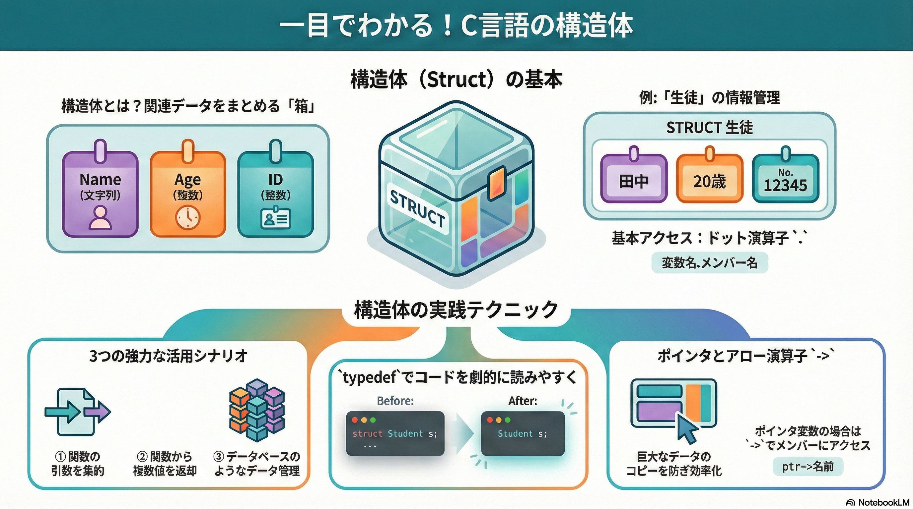
イントロダクション
ここでは、C言語におけるデータ管理の基本であり、より高度なプログラミングへの扉を開く「構造体（Struct）」の概念を、基礎から応用まで体系的に解説します。C言語プログラミングにおいて、整数や文字列といった単一のデータだけを扱うことは稀です。現実世界の複雑な情報を表現するためには、関連する複数のデータを一つのまとまりとして扱う能力が不可欠となります。構造体は、まさにそのための強力な仕組みです。このガイドを通して、皆さんが構造体を完全に理解し、自信を持って使いこなせるようになることを目的としています。
1. 構造体（Struct）とは何か？ 〜複雑なデータを一つにまとめる箱〜
プログラミングを進めていくと、intやcharといった基本的なデータ型だけでは、表現したい対象をうまく管理できない場面に直面します。例えば、「一人の生徒」の情報を扱う場合、「名前」「年齢」「学籍番号」など、複数の異なる種類のデータが関連しあっています。これらをバラバラの変数として管理するのは非効率的で、コードの可読性を損なう原因にもなります。ここで登場するのが「構造体」です。構造体は、これらの関連データを論理的な一つの単位としてまとめるための、極めて重要な機能です。
構造体（Struct） とは、異なるデータ型の変数をひとまとめにして、新しい一つの型として定義する機能です。これにより、プログラム内で独自のデータ型を自由に作成することができます。
この概念を直感的に理解するために、「生徒のカルテ」を想像してみてください。実際のカルテには、以下のような多様な情報が一つにまとめられています。
- 名前: 文字列 (char配列 or char*)
- 年齢: 整数 (int)
- 身長: 小数 (double)
このように、本来は型がバラバラのデータを「一人の生徒」という一つの枠組みで管理できるようにしたものが、C言語における構造体の役割です。構造体は、主に以下の3つの要素で構成されます。
- 定義 (struct): structキーワードを使い、どのようなデータを含む新しい型なのかを設計します。
- 変数宣言: 定義した構造体の型を使って、実際にデータを格納するための変数を宣言します。
- メンバー: 構造体の中に含まれる個々の変数（例：名前、年齢）のことを「メンバー」と呼びます。
このセクションでは構造体の概念的な側面を学びました。次のセクションでは、実際にコードを書きながら、構造体をどのように定義し、利用するのかを具体的に見ていきましょう。
2. 構造体の基本的な使い方 〜定義からメンバーへのアクセスまで〜
概念を理解したところで、次はいよいよ構造体をコード上で実際に利用する方法を学びます。ここでは、構造体の「定義」「変数の宣言」「メンバーへのアクセス」という3つの基本的なステップを、具体的なコード例と共に解説します。この基本構文をマスターすることが、構造体を使いこなすための第一歩です。
以下のコードは、Student構造体を定義し、main関数内で実際に変数として宣言、値を代入して出力するまでの一連の流れを示した、完全なプログラムです。コピーして、ご自身の環境でコンパイル・実行してみてください。
#include <stdio.h>
// 「Student」という名前の構造体を定義
struct Student {
char *name; // メンバー1: 生徒の名前を格納する (文字列へのポインタ)
int age; // メンバー2: 生徒の年齢を格納する (整数)
};
int main() {
// Student構造体型の変数「taro」を宣言
struct Student taro;
// ドット演算子(.)を使って各メンバーに値を代入
taro.name = "Taro Yamada";
taro.age = 16;
// 正しく値が格納されたかを確認
printf("生徒の名前: %s\n", taro.name);
printf("生徒の年齢: %d歳\n", taro.age);
return 0;
}
実行結果:
生徒の名前: Taro Yamada
生徒の年齢: 16歳
このように、struct Student taro;で変数を宣言した後、taro.nameやtaro.ageといった「変数名.メンバー名」の形式で、特定の構造体変数が持つ個々のメンバーに簡単にアクセスできます。このドット演算子 (.) が、構造体変数のメンバーにアクセスする際の基本となります。
基本はマスターしました。しかし、構造体の本当の力は、関数と組み合わせることでコードを劇的にクリーンにできる点にあります。次のセクションで、その驚くべき効果を見ていきましょう。
3. 構造体の実践的活用法 〜なぜ構造体はこれほど強力なのか〜
構造体は単にデータをまとめて格納するだけの機能ではありません。コードの整理、可読性の向上、そして処理の効率化に大きく貢献する、極めて実践的なツールです。ここでは、構造体がプログラム開発においてなぜこれほど強力なのか、その具体的な活用シナリオを3つ紹介します。
- データベースのようなデータ管理 構造体は、同じ形式のデータを複数管理するのに最適です。例えば、クラス全員の生徒情報や、オンラインストアの商品リストなど、多数のレコード情報を扱う際に、構造体を配列と組み合わせることで（詳細は後述）、あたかも簡易的なデータベースのようにデータを整理・管理することができます。
- 関数の引数をシンプルにする
問題: ある処理を行う関数に、多数の関連データを渡す必要があり、引数リストが長くなってしまう。
解決策: 関連データを構造体にまとめることで、引数を一つに束ねることができます。
例えば、画面上の特定の位置に点を描画するdraw関数を考えてみましょう。- Before: 構造体を使わない場合 x座標とy座標を個別の引数として渡す必要があります。
- After: 構造体を使う場合 座標情報をpoint構造体にまとめることで、引数が一つになり、コードが非常にシンプルになります。
- 関数から複数の値を返す
問題: C言語の関数は、通常一つの戻り値しか返せない。しかし、処理の結果として複数の値を返したい。
解決策: 返したい複数の値をメンバーとして持つ構造体を定義し、その構造体を戻り値とします。これにより、実質的に複数の値を一つのまとまりとして返すことが可能になります。
このように、構造体はプログラムの構造を劇的に改善する力を持っています。そして、この構造体をさらに便利に扱うための重要なテクニックがtypedefです。次のセクションで詳しく見ていきましょう。
4. typedefによる型の再定義 〜コードの可読性を劇的に向上させる〜
プログラムが大きくなるにつれて、struct Studentやstruct Pointといった型名を繰り返し記述する場面が増えてきます。これは単に面倒なだけでなく、コードを冗長にし、読みにくくする原因にもなります。typedefは、この煩雑さを解消し、自作の構造体をあたかも組み込み型のように扱うための、C言語の標準的な解決策です。
typedef とは、既存のデータ型に、新しい別名（エイリアス）を与える機能です。これにより、複雑な型定義を、よりシンプルで分かりやすい名前に置き換えることができます。
typedefを使うことで、コードがどれだけシンプルになるか比較してみましょう。
- typedefを使わない場合 変数を宣言するたびにstruct Studentと書く必要があります。
- typedefを使った場合 Studentと書くだけで変数を宣言できます。intやdoubleのような基本データ型と同じ感覚で利用でき、非常に直感的です。
以下に、typedefを用いて構造体を定義する際の一般的なコード例を示します。structの直後に名前を付けない「無名構造体」を定義し、即座にtypedefで別名を付けるのが一般的です。
#include <stdio.h>
// 無名構造体を定義し、同時にtypedefで「Student」という別名を付ける
typedef struct {
char *name;
int age;
} Student;
int main() {
// 簡潔な記述で変数を宣言できる
Student taro;
taro.name = "Taro Yamada";
taro.age = 16;
printf("名前: %s, 年齢: %d\n", taro.name, taro.age);
return 0;
}
【プロのヒント】C言語のプロジェクトでは、構造体はtypedefと組み合わせて定義するのが一般的です。これにより、structキーワードが不要になり、コードベース全体で型名の一貫性が保たれます。最初からこの書き方に慣れておきましょう。
さて、構造体の基本と便利なテクニックを学びました。次は、ポインタや配列といったC言語の強力な機能と組み合わせることで、構造体の能力をさらに引き出す応用的な使い方を見ていきましょう。
5. 構造体の応用 〜ポインタと配列を使いこなす〜
構造体は、ポインタや配列と組み合わせることで、その能力が飛躍的に向上します。これにより、大規模なデータを効率的に扱ったり、より複雑なデータ構造を構築したりすることが可能になります。ここでは、その代表的な応用例である「構造体とポインタ」「構造体と配列」について解説します。
構造体とポインタ
関数に引数として構造体を渡す際、通常はその構造体の全データがコピーされます。しかし、メンバーが多くてサイズが大きい構造体の場合、このコピー処理は無視できないオーバーヘッドになります。
ここでポインタが役立ちます。構造体そのものではなく、その構造体が存在するメモリアドレスを指すポインタを渡す（参照渡し） ことで、コピー処理を回避し、プログラムの効率を大幅に向上させることができます。これは、100ページの巨大な資料をメールで送る代わりに、その資料が置いてあるウェブサイトのリンク（URL）を一行送るようなものです。ポインタを渡すのはリンクを送るのと同じで、非常に高速かつ省リソースです。
構造体のポインタから各メンバーにアクセスする場合、ドット演算子 (.) ではなく、アロー演算子 (->) を使用します。
#include <stdio.h>
typedef struct {
int x;
int y;
} Point;
// 引数として構造体のポインタを受け取る関数
void printPoint(Point *p) {
// ポインタからメンバーにアクセスするにはアロー演算子(->)を使う
printf("座標: (%d, %d)\n", p->x, p->y);
// (*p).x と書くことも可能だが、-> の方が遥かに簡潔で標準的
}
int main() {
Point p1 = {10, 20};
// p1のアドレス(&p1)を関数に渡す
printPoint(&p1);
return 0;
}
構造体と配列
同じ型のデータをまとめて管理するのが配列の役割でした。これは構造体にも適用でき、「構造体型の配列」を作成することで、複数のレコード（例：クラス全員の生徒情報）を一度に管理できます。
各要素へのアクセスは、配列のインデックスとドット演算子を組み合わせて行います。
#include <stdio.h>
typedef struct {
char *name;
int age;
} Student;
int main() {
// Student型の配列を宣言し、3人分のデータで初期化
Student classA[3] = {
{"Taro Yamada", 16},
{"Hanako Suzuki", 17},
{"Jiro Sato", 16}
};
// ループを使って全員の情報を出力
for (int i = 0; i < 3; i++) {
// 配列インデックス[i]で要素を指定し、ドット演算子(.)でメンバーにアクセス
printf("出席番号%d: %s (%d歳)\n", i + 1, classA[i].name, classA[i].age);
}
return 0;
}
【プロのヒント】C99(1999年に策定されたC言語の標準規格)以降の規格では、上記のように順序通りに初期化する代わりに、「指定初期化子（Designated Initializers）」も使えます。例えば
Student taro = { .name = "Taro Yamada", .age = 16 };
のように書くことで、どのメンバーに値を設定しているかが一目瞭然になり、可読性が向上します。
これで、構造体に関する主要な知識は一通り網羅しました。ここまでの知識を総動員すれば、かなり複雑なデータも自在に扱えるはずです。次のセクションでは、実際に手を動かして、学んだ知識が身についているかを確認する演習に取り組みましょう。
6. 実践演習 〜学んだ知識を使ってみよう〜
理論的な学習は重要ですが、知識を本当に自分のものにするためには、実際に手を動かしてコードを書くことが不可欠です。この演習では、これまでに学んだtypedefと構造体の定義を使って、簡単なデータ構造を作成する課題に挑戦してみましょう。
課題
typedefを使い、「person」という名前の新しいデータ構造を定義してください。
要件:
- name という名前の文字列（charへのポインタ）をメンバーに持つこと。
- age という名前の整数（int）をメンバーに持つこと。
提供コード: 以下の雛形コードのコメント部分を、作成した構造体定義で埋めて完成させてください。
#include <stdio.h>
/* ここに "person" 構造体をtypedefを使って定義してください */
int main() {
person john;
/* johnのメンバーに値を設定し、結果を出力するコード */
john.name = "John";
john.age = 27;
printf("%s is %d years old.\n", john.name, john.age);
return 0;
}
期待される出力結果:
John is 27 years old.
この演習を自力で解くことができれば、構造体の基本的な定義と使い方をしっかり理解できている証拠です。
7. まとめと次のステップ
この章では、C言語における構造体の基本から応用までを体系的に学習しました。最後に、本章で学んだ最も重要なポイントを振り返りましょう。
- 構造体の核心: 構造体は、異なるデータ型を「一つの意味あるまとまり」として定義する強力な仕組みです。これにより、現実世界の複雑な情報をプログラムで効果的に表現できます。
- 変数か、ポインタか：ドット (.) とアロー (->) の使い分けは絶対です。 構造体変数にはドットを、構造体ポインタにはアローを使う。このルールに例外はありません。
- typedefによる可読性向上: typedefは、冗長な型宣言を簡潔にし、コードをクリーンに保つための必須テクニックです。プロの現場では標準的に使われます。
- 応用への扉: 構造体は、配列やポインタと組み合わせることで真価を発揮します。大量のデータを効率的に管理したり、関数とのデータ受け渡しを最適化したりすることが可能です。
構造体は、単独で完結する機能ではありません。これから皆さんが学ぶであろう、リンクリスト、木構造といった、より高度な「データ構造」を構築するための基礎となる、極めて重要な概念です。ぜひこのガイドを何度も見返し、構造体を完全に自分のものにしてください。これからの皆さんのプログラミング学習が、さらに実りあるものになることを願っています。
引数の参照渡し

イントロダクション
本章では、C言語における関数の引数の渡し方、特に「値渡し」と「参照渡し」の違いについて解説します。関数の基本的な動作を理解した新入社員を対象に、ポインタを活用して関数外の変数を直接操作する「参照渡し」の概念と実装方法を、具体的なコード例を通じて学習することを目的とします。
1. はじめに：なぜ「参照渡し」を学ぶのか？
関数が呼び出し元のデータを変更する 必要がある場面は、プログラミングにおいて非常に多く発生します。この「参照渡し」を理解することは、より強力で効率的なプログラムを組むための重要な第一歩です。C言語の関数は、呼び出し元からデータを受け取る方法として、大きく分けて2つの基本的な仕組みを持っています。
一つは 「値渡し（Pass by Value）」 です。これはC言語のデフォルトの動作で、関数に 引数の「コピー」 を渡します。そのため、関数内でその引数をいくら変更しても、呼び出し元にある元の変数には一切影響を与えません。もう一つが 「参照渡し（Pass by Reference）」 です。これは、変数の値そのものではなく、値が格納されている「メモリアドレス」 を渡す方法です。
本章では、C言語におけるポインタの概念を用いてこの「参照渡し」を実現し、関数が呼び出し元のデータを直接変更できるようにする 方法を学びます。このテクニックを習得することで、あなたの書くコードの可能性は大きく広がるでしょう。
2. 値渡し（Pass by Value）の基本と限界
参照渡しの必要性を理解するためには、まずC言語のデフォルトの動作である「値渡し」を正確に把握することが不可欠です。値渡しとは、関数に引数の「値のコピー」を渡す仕組みです。関数はオリジナルの変数ではなく、そのコピーを操作するため、関数内での変更が外部に影響を及ぼすことはありません。
この挙動を、数値を1つインクリメントするaddoneという関数を例に見てみましょう。
以下のコードとその実行結果を見てください。
コード例：
#include <stdio.h>
void addone(int n) {
// nは関数内でのみ有効なローカル変数
n++;
// ここでのインクリメントは外部に影響しない
}
int main() {
int n = 0; // 初期値を設定
printf("Before: %d\n", n);
addone(n);
printf("After: %d\n", n);
return 0;
}
実行結果の解説： このコードを実行すると、コンソールには以下のように表示されます。
Before: 0
After: 0
Before:とAfter:の出力が同じ0であることから、addone関数がmain関数内の変数nをインクリメントするという期待通りの機能を発揮しなかった ことが分かります。
どうしてそうなるのか、プログラムの動きをステップ・バイ・ステップで見てみましょう。
main関数内の変数nがaddone関数に渡される際、その値（この場合は0）だけがコピーされ、addone関数内のローカル変数nに代入されます。つまり、この段階では、0という値が入った変数が、メモリ上にふたつ（main関数の変数nとaddone関数の変数n）存在する わけです。
addone関数内でのn++という操作は、あくまでこのコピーされたローカル変数に対して行われます。
| 関数 | nに対する操作 |
|---|---|
| main関数 | 初期値0が代入される |
| addone関数 | n++でインクリメントされる |
しかしながら、この二つの変数は、それぞれ独立しています。別々のメモリ・アドレスを持った、別々の家なのです。そして、addone関数のnは関数スコープ、つまりその関数の中だけで有効なため、関数の処理が終了すると同時に破棄されます。結果として、main関数にある元の変数nには、初期値0が代入された状態のまま、何の変化ももたらされません。
このように、関数が呼び出し元のデータを変更できないという値渡しの限界は、多くの場面で問題となります。では、この問題をどのように解決すればよいのでしょうか？
その答えが、次のセクションで解説する「参照渡し」です。
3. 参照渡し（Pass by Reference）による解決策
値渡しの限界を克服するための鍵となる技術が 「ポインタ」 です。変数の値そのものを渡す代わりに、その変数が格納されているメモリアドレス（ポインタ）を関数に渡す ことで、関数は呼び出し元のスコープにある変数を直接「参照」し、変更することが可能になります。これが「参照渡し」の基本的な考え方です。
それでは、先ほどのaddone関数をポインタを使って修正し、参照渡しが機能する仕組みを3つのステップで見ていきましょう。
- 関数の定義 (
void addone(int *n))- 引数の型を
intからint *nに変更します。このアスタリスク*は、この引数が単なる整数ではなく「整数へのポインタ」を受け取ることを意味します。つまり、関数は値そのものではなく、値が格納されている「場所の情報（メモリアドレス）」 を受け取る準備をします。
- 引数の型を
- 関数本体での操作 (
(*n)++)- 関数内で、ポインタ変数
nが指し示すアドレスに格納されている実際の値にアクセスするために、再びアスタリスク*を使用します。これは 「デリファレンス（間接参照）」 と呼ばれる操作です。(*n)とすることでポインタが指す先の値そのものを取得し、その値をインクリメントします。これにより、呼び出し元の変数が直接変更されます。
- 関数内で、ポインタ変数
- 関数の呼び出し (
addone(&n))- 関数を呼び出す際には、変数
nの前にアンパサンド&（アドレス演算子） を付けます。これにより、変数nの値ではなく、そのメモリアドレスがaddone関数に渡されます。
- 関数を呼び出す際には、変数
上の説明で、addone関数の中で、新たに変数’n’が作られて いない ことに注目してください。addone関数は、main関数で作られた「家」であるnの住所（アドレス）を受け取って、その「家」（main関数で作られた、このプログラム全体を通じて、ひとつだけしかないnという「家」）の中にいる値を操作することになります。
以下のコードは、これらの変更を適用したものです。
コード例：
#include <stdio.h>
void addone(int *n) {
// nは外部変数のメモリアドレスを指すポインタ
(*n)++;
// ポインタを介して元の変数の値をインクリメントする
}
int main() {
int n = 0; // 初期値を設定
printf("Before: %d\n", n);
addone(&n); // nのメモリアドレスを渡す
printf("After: %d\n", n);
return 0;
}
実行結果の解説： このコードを実行すると、期待通りの結果が得られます。
Before: 0
After: 1
After:の出力で値が正しく1にインクリメントされていることが確認できます。これは、ポインタを介した参照渡しによって、addone関数がmain関数内の変数nを直接操作する ことに成功した証拠です。
この強力な原則は、整数のような単純な型だけでなく、次に示すように、より複雑なデータ構造である「構造体」にも応用することができます。
4. 応用：構造体とポインタ
参照渡しの考え方は、複数のデータを一つのまとまりとして扱う「構造体」を関数に渡す際に、特にその真価を発揮します。もし構造体を値渡しすると、構造体の全メンバがコピーされるため、データサイズが大きい場合には非効率です。しかし、ポインタを使えば、構造体のサイズに関わらず、メモリアドレスという小さなデータ一つを渡すだけで済むため、非常に効率的です。
ここでは、座標を表すpoint構造体のポインタを受け取り、そのxとyの値をそれぞれインクリメントするmove関数を例に、構造体へのポインタの利用方法を解説します。まず、point構造体を定義します。
typedef struct {
int x;
int y;
} point;
この構造体のポインタを引数として受け取るmove関数は、以下のように記述できます。
void move(point * p) {
(*p).x++;
(*p).y++;
}
ここで(*p).xという記法に注目してください。ポインタpをまずデリファレンス（*p）して構造体そのものを取り出し、その後ドット.演算子でメンバxにアクセスしています。
しかし、C言語ではこのような操作が頻繁に行われるため、より簡潔で直感的な短縮記法が用意されています。それが アロー演算子 (->) です。アロー演算子を使うと、先ほどのmove関数は次のように書き換えられます。
void move(point * p) {
p->x++;
p->y++;
}
ポインタ経由で構造体のメンバにアクセスする、これら2つの方法を比較してみましょう。
| 構文 | 記法 | 説明 |
|---|---|---|
| 標準記法 | (*p).x | ポインタpをまずデリファレンスして構造体そのものを取り出し、その後ドット.演算子でメンバxにアクセスする方法です。括弧が必須です。 |
| アロー演算子 | p->x | ポインタから直接構造体のメンバにアクセスするための、より簡潔で一般的な短縮記法です。Cプログラミングでは広くこの記法が使われます。 |
(*p).xとp->xは完全に等価な操作ですが、アロー演算子 (->) の方がはるかに直感的でコードの可読性が高いため、一般的に推奨される方法です。
ここまでの理論的な学習を、次のセクションでは実践的な演習を通して、あなた自身のスキルとして確実なものにしていきましょう。
5. 実践演習：birthday関数の実装
新しい知識を定着させる最善の方法は、実際に手を動かしてコードを書くことです。この演習を通じて、参照渡しの理解を深めましょう。
演習の目的: person構造体のポインタを受け取り、そのageメンバを1つ増やすbirthdayという名前の関数を作成してください。
以下の土台となるコードを参考に、指定された箇所に関数を実装してください。
#include <stdio.h>
typedef struct {
char * name;
int age;
} person;
/* function declaration */
void birthday(person * p);
/* ここに関数を記述してください */
int main() {
person john;
john.name = "John";
john.age = 27;
printf("%s is %d years old.\n", john.name, john.age);
birthday(&john);
printf("Happy birthday! %s is now %d years old.\n", john.name, john.age);
return 0;
}
この演習を終えたら、最後に本日の学習内容を総括するまとめのセクションに移ります。
6. まとめ：本章の学習ポイント
この章の締めくくりとして、本日学習した重要事項を再確認し、知識を整理しましょう。参照渡しは、C言語プログラミングにおける非常に強力なツールです。
本章で学んだ最も重要な概念は、以下の3点に要約されます。
- 値渡しの挙動
- C言語の関数はデフォルトで引数を「値渡し」で扱います。これは引数のコピーを作成するため、関数内で引数を変更しても、呼び出し元の元の変数は影響を受けません。
- 参照渡しの実現
- 関数が呼び出し元の変数を直接変更する必要がある場合、「参照渡し」を用います。これは、アドレス演算子 (
&) を使って変数のメモリアドレスを渡し、関数側ではポインタ変数 (*P) を使ってそのアドレスを受け取り、間接参照演算子 (*) を使ってデリファレンスすることで実現します。
- 関数が呼び出し元の変数を直接変更する必要がある場合、「参照渡し」を用います。これは、アドレス演算子 (
- 構造体への応用
- 構造体へのポインタを扱う際は、アロー演算子 (
->) を使用することで、コードを簡潔かつ直感的に記述できます。これは(*p).memberと等価ですが、一般的に推奨される記法です。
- 構造体へのポインタを扱う際は、アロー演算子 (
参照渡しの概念を正しく理解し、使いこなすことは、効率的で柔軟なプログラムを設計する上で不可欠です。本章で学んだ知識は、今後のC言語プログラミングにおける様々な場面で必ず役立つでしょう。
動的メモリ確保

イントロダクション
C言語におけるメモリ管理は、堅牢なソフトウェアを設計する上での核心的技術です。メモリ確保には大きく分けて二つの戦略が存在します。一つは、関数内のローカル変数などが利用するスタック領域での静的確保です。スタックは高速で自動的に管理されますが、確保できるサイズに限りがあり、変数の寿命はそのスコープに束縛されます。
これに対し、本稿で詳解する動的メモリ確保は、ヒープと呼ばれる広大で柔軟なメモリプールから、プログラムの実行時に必要なメモリを確保する手法です。この能力こそがC言語のパワーの源泉であり、実行時までサイズが不確定なデータを扱ったり、複雑なデータ構造を構築したりするための、不可欠な戦略的基盤となります。
ここでは、そうしたプロフェッショナルな世界への第一歩として、下に示す手順をしっかり頭に入れてください。
- 必要なサイズのメモリを実行時に確保する
- 確保したメモリを利用する
- 利用後、不要になったら解放する
1. 動的メモリ確保とは何か
動的メモリ確保とは、プログラムの実行中に、任意のサイズのメモリブロックを確保・解放する技術です。このアプローチの核心的な利点は、プログラムを作成した時点ではデータのサイズを事前に知らなくても、データを保存できる 点にあります。ユーザー入力、ファイルの内容、ネットワーク通信など、コンパイル時には予測不可能な情報量に対応する上で、この技術は絶対不可欠です。
次にその実現に不可欠なツール群について見ていきましょう。
2. 動的確保を支える3つのコア要素
動的メモリ確保のライフサイクルは、「確保」「利用」「解放」の3フェーズで構成されます。C言語は、このライフサイクルをプログラマの管理下に置くための3つの主要な構成要素、すなわち malloc、sizeof、free を提供します。これらのツールは互いに連携し、メモリを安全かつ効率的に管理する仕組みを支えています。
2.1 メモリの確保: malloc 関数
malloc（memory allocation）は、メモリを確保する、動的確保の心臓部となる関数です。
- 目的: 指定されたバイトサイズのメモリ空間を予約し、そのブロックへのアクセス手段を提供します。
- 戻り値: 確保したメモリブロックの先頭アドレスを指す void 型のポインタ（void *）を返します。void * は「型情報を持たない汎用ポインタ」であり、特定のデータ型に紐付いていません。これにより malloc はあらゆるデータ型のために汎用的にメモリを確保できますが、このポインタは型情報を持たないため、直接中身を参照（デリファレンス）することはできません。
- 型キャスト: malloc が返す汎用的な void * は、実際に使用する前に特定のポインタ型へ変換しなければなりません。この変換プロセスを型キャストと呼びます。
- 上記例の (person *) が型キャストであり、void * を person 型のポインタへ明示的に変換しています。これによりコンパイラは、そのアドレスの先にあるデータの構造を理解できるようになります。
2.2 正確なサイズの取得: sizeof 演算子
sizeof は malloc の重要な相棒ですが、これは関数ではなく演算子です。その最大の特徴は、値がコンパイル時に決定される点にあります。コンパイラは sizeof(型) という記述を、そのデータ型がメモリ上で占有する正確なバイト数（size_t 型の整数）に置き換えます。例えば sizeof(person) は、person 構造体を格納するために必要なバイト数を返します。実行時に動作する malloc と組み合わせることで、環境に依存せず、常に正確なサイズのメモリを確保できるのです。
2.3 メモリの解放: free 関数
free は、動的に確保したメモリをシステムに返却し、再利用可能な状態に戻すための関数です。この役割の正確な理解は、メモリリークという致命的なバグを防ぐ上で極めて重要です。free(myperson) を呼び出すと、myperson というポインタ変数が指し示している先のデータ領域が解放されます。
極めて重要なのは、free がポインタ変数自体（例: myperson）を削除するわけではない という事実です。解放後も myperson 変数は存在し続け、解放済みで無効となったアドレスを指したままになります。
これらのツール群が実際にどう連携するのか、次のセクションで具体的なコードを通じて段階的に見ていきましょう。
3. 実践：動的確保のステップ・バイ・ステップ
前セクションで学んだ理論（malloc, sizeof, free）を統合し、ここで具体的な person 構造体を例に、動的メモリ確保の完全なプロセスを追体験します。
まず、ここで使用する person 構造体を以下に定義します。
typedef struct {
char * name;
int age;
} person;
3.1 ステップ1: ポインタの準備とメモリ確保
動的確保は、確保したメモリのアドレスを格納するポインタ変数の準備と、malloc による実際の確保を一行で行うのが一般的です。
person * myperson = (person *) malloc(sizeof(person));
この一行は、以下の3つの処理を連続して実行しています。
- sizeof(person): person 構造体に必要なメモリサイズをコンパイル時に計算します。
- malloc(…): 1で計算されたサイズのメモリブロックを確保し、その先頭アドレスを void * 型で返します。
- person * myperson = (person *) …: ポインタ変数 myperson を宣言し、malloc が返したアドレスを person * 型にキャストして代入します。
この時点で myperson は、person 構造体を格納するための有効なメモリ領域を指しており、利用可能な状態になります。
3.2 ステップ2: メモリへのアクセスと利用
確保したメモリ領域は、ポインタを介してアクセスします。ポインタが指す先の構造体メンバにアクセスするには、アロー演算子 -> を使用します。
myperson->name = "John";
myperson->age = 27;
3.3 ステップ3: メモリの解放
動的に確保したメモリの利用が完了したら、必ず free 関数を呼び出してシステムに返却しなければなりません。この解放処理はプログラマの責務であり、これを怠ることはメモリリークを引き起こします。
free(myperson);
メモリリークは、プログラムが確保したメモリを解放しないまま保持し続けるバグです。長時間稼働するアプリケーションでは、リークが蓄積して利用可能なメモリを枯渇させ、最終的にシステム全体のパフォーマンス低下やクラッシュを招く、極めて深刻な問題です。
正しく実装するだけでなく、動的メモリ管理に潜む重大なリスクを理解することが、プロのソフトウェアアーキテクトには求められます。次のセクションでは、安全なコードを書くための鉄則を解説します。
4. 鉄則：安全なメモリ管理とダングリングポインタの回避
動的メモリ管理の技術的な側面をマスターするだけでは不十分です。深刻なバグを防ぐためには、安全なプログラミングのための規律が不可欠です。ここでは、メモリ解放後のポインタが引き起こす致命的な問題、ダングリングポインタに焦点を当てます。
4.1 ダングリングポインタの危険性と対策
free 関数の挙動について以下の重要な注意事項があります。
free は myperson 変数そのものを削除するのではなく、単にそれが指し示す先のデータを解放するだけである ということです。free() を呼び出した後も、ポインタ変数 myperson は解放済みのメモリ領域のアドレスを保持し続けます。このような、もはや有効ではないメモリ領域を指し示すポインタは 「ダングリングポインタ（dangling pointer）」 と呼ばれます。
この状態のポインタを介してメモリにアクセスしようとする行為は、プログラムの動作を未定義にします。解放された領域はOSによって即座に別の目的に再割り当てされる可能性があり、そこへのアクセスはデータの破壊やプログラムの即時クラッシュなど、予測不能で追跡困難なバグの温床となります。解放後のポインタへのアクセスは厳禁です。
解放後のポインタへのアクセスを防ぐための最も堅牢な防御策は、free() を呼び出した直後にポインタへ NULL を代入することです。
free(myperson);
myperson = NULL;
これにより、ポインタは明確に無効な場所を指すことになり、万が一誤ってアクセスしようとした場合に（多くの実行環境で）プログラムが即座にクラッシュするため、バグの早期発見に繋がります。これは全てのCプログラマが遵守すべき規律です。
これまでの知識を定着させるため、最後に実践的な演習に移りましょう。
5. 演習：知識の適用
ここまでの学習内容を確実に身につけるため、実際にコードを書いて動的メモリ確保を実践する演習を行います。理論を実践に移すことで、より深い理解が得られます。
5.1 課題
この演習の目的は、point 構造体のインスタンスを動的に確保することです。
5.2 演習コード
以下のコードのコメント /* … */ で示された部分に、point 構造体を動的に確保するためのコードを記述してください。
#include <stdio.h>
#include <stdlib.h>
typedef struct {
int x;
int y;
} point;
int main() {
point * mypoint = NULL;
/* Dynamically allocate a new point
struct which mypoint points to here */
mypoint->x = 10;
mypoint->y = 5;
printf("mypoint coordinates: %d, %d\n", mypoint->x, mypoint->y);
free(mypoint);
return 0;
}
5.3 期待される出力
プログラムが正しく完成した場合、コンソールには以下の出力が表示されます。これにより、あなたのコードが正しく動作しているか自己評価することができます。
mypoint coordinates: 10, 5
配列とポインタ演算

イントロダクション：なぜポインタ演算を学ぶのか？
この章では、ポインタ演算を使って配列を操作する 方法を、初心者の皆さんが習得するためのガイドです。
ポインタが「メモリアドレスを格納する変数」であるという基本的な理解から一歩進み、ポインタ演算を学ぶことは、C言語プログラミングの核心に迫る上で不可欠です。そして、 ポインタ演算が最大に威力を発揮するのは、それを使って配列を操作する場合です。
したがって、ポインタ演算を理解するためには、まず、配列とポインタの密接な関係、すべての基礎となる、両者の表裏一体の関係性を確認することが必要です。
では、そこから解説を始めましょう。
1. 配列とポインタの「秘密の契約」
C言語において、配列とポインタは表裏一体の関係にあります。一見すると異なる概念に見えますが、内部的には深く結びついており、この「秘密の契約」を理解することが、より複雑なポインタ操作をマスターするための戦略的基盤となります。
まず、C言語における文字列の基本ルールを再確認します。他の多くの言語と異なり、C言語には専用の「文字列型」が存在しません。代わりに、文字列は以下の2つのルールで表現されます。
- 文字の配列であること： 1文字 (char型) を複数、配列として並べます。
- 最後に必ずヌル文字(\0)を入れること： これが「文字列の終端」を示す目印となります。
例えば、“Hi” という2文字の文字列は、実際には ‘H’, ‘i’, ‘\0’ の3文字、つまり3バイトのメモリ領域を必要とします。
そして、この配列とポインタを結びつける、C言語の最も重要なルールがこちらです。
「配列名そのものは、配列の先頭要素のアドレスを指すポインタとして扱われる」
このルールにより、ポインタ変数 p に配列 arr の先頭アドレスを代入する際、p = &arr[0]; と書く代わりに、単に p = arr; と記述できます。これは、両者が本質的に等価であることをコンパイラが知っているからです。
この「密接な契約」があるからこそ、C言語では配列とポインタを柔軟に行き来できるのです。
2. 配列とポインタ演算
さて、ここが核心です。私たちが普段何気なく使っている arr[i] という配列の記法は、C言語のコンパイラによって内部的に *(arr + i) というポインタ演算に変換されています。
- arr (配列の先頭アドレス) に
- i (要素数) を加算し（ポインタ演算により i * sizeof(型) だけアドレスが移動）
- そのアドレスが指す場所の中身を * (間接参照演算子) で取り出す
これは単なるコンパイラの小手先の技ではありません。C言語がこれほど低レベルで効率的な操作を可能にする根幹の設計思想そのものであり、メモリアドレスを第一級の市民として扱えるようにするための基盤なのです。
皆さんはarr[i]について、すでによく知っていますね？ 第1部で扱いました。なので、ここではもう片方、ポインタ演算*(arr + 1)について、詳しく見ていきましょう。
ポインタ演算 とは、ポインタが指し示すデータそのものではなく、ポインタが保持しているメモリアドレスに対して算術演算を行うことです。この操作は、通常の整数に対する演算とは根本的に異なります。
ポインタ演算における最も重要な原則は、演算がポインタが指すデータ型のサイズに応じて自動的にスケーリングされる という点です。足し算・引き算で使われる単位が、そのデータ型のサイズに、自動的に調整されるのです。これを簡潔に表現すると、次のようになります。
「ポインタを1つ進める」ことは、「ポインタが指すデータ型のサイズ分だけメモリアドレスを進める」ことを意味する。
例えば、int型とdouble型のポインタを考えてみましょう。ここでは、int型の値は4バイトのメモリに収められ、double型の値は8バイトのメモリに収められる環境(ごく普通の環境)を想定して、話を進めます。
この環境で、int型ポインタに 1 を加算すると、ポインタが保持するメモリアドレスの値は 1 ではなく 4 増加します。double型ポインタに 1 を加算すると、メモリアドレスは 8 増加します。
int型(4byte)の場合の p + 1
int * p;
メモリ上のアドレス
+--------+
p | 0x1000 |
+--------+
p + 1 | 0x1004 | <-- アドレスは+4される
+--------+
double型(8byte)の場合の p + 1
double * p;
メモリ上のアドレス
+--------+
p | 0x1000 |
+--------+
p + 1 | 0x1008 | <-- アドレスは+8される
+--------+
上の図で、ベースのアドレス(配列の先頭アドレス)0x1000はわかりやすいように、こちらで勝手に決めたものです。もし実際のベースが0x2145であれば、int型のp + 1は0x2149に、double型のp + 1は0x2153になります。とにかく、同じp + 1でも、そのポインタがint型かdouble型かで、アドレスの移動量が異なる 点が、重要なのです。
このスケーリング機能があるからこそ、プログラマは char、int、double といった異なるデータ型の配列を、型サイズを意識することなく同じ pointer++ という記述で安全に走査できるのです。
これこそ、配列アクセスとポインタ操作が本質的に同じであることの論理的な証明です。以下のコードの出力結果を見ると、その等価性が明確になります。
#include <stdio.h>
int main() {
char vowels[] = {'A', 'E', 'I', 'O', 'U'};
char *pvowels = vowels;
int i;
// アドレスを表示
for (i = 0; i < 5; i++) {
printf("&vowels[%d]: %p, pvowels + %d: %p, vowels + %d: %p\n",
i, &vowels[i], i, pvowels + i, i, vowels + i);
}
printf("\n");
// 値を表示
for (i = 0; i < 5; i++) {
printf("vowels[%d]: %c, *(pvowels + %d): %c, *(vowels + %d): %c\n",
i, vowels[i], i, *(pvowels + i), i, *(vowels + i));
}
return 0;
}
実行結果（例）
&vowels[0]: 0x7ffee146da17, pvowels + 0: 0x7ffee146da17, vowels + 0: 0x7ffee146da17
&vowels[1]: 0x7ffee146da18, pvowels + 1: 0x7ffee146da18, vowels + 1: 0x7ffee146da18
&vowels[2]: 0x7ffee146da19, pvowels + 2: 0x7ffee146da19, vowels + 2: 0x7ffee146da19
&vowels[3]: 0x7ffee146da1a, pvowels + 3: 0x7ffee146da1a, vowels + 3: 0x7ffee146da1a
&vowels[4]: 0x7ffee146da1b, pvowels + 4: 0x7ffee146da1b, vowels + 4: 0x7ffee146da1b
vowels[0]: A, *(pvowels + 0): A, *(vowels + 0): A
vowels[1]: E, *(pvowels + 1): E, *(vowels + 1): E
vowels[2]: I, *(pvowels + 2): I, *(vowels + 2): I
vowels[3]: O, *(pvowels + 3): O, *(vowels + 3): O
vowels[4]: U, *(pvowels + 4): U, *(vowels + 4): U
出力が示す通り、&vowels[i]、pvowels + i、vowels + i はすべて同じメモリアドレスを指し、vowels[i]、*(pvowels + i)、*(vowels + i) はすべて同じ値を返します。
3. 主要なポインタ演算の実践
配列とポインタの関係について、一通りの理解が得られたところで、ポインタ演算について、詳細に確認しましょう。
この基本原則を念頭に置き、具体的な4つの主要な演算子を見ていきましょう。
3.1. インクリメント (++)
インクリメント演算子 (++) は、ポインタをメモリ上の次の要素へ移動させる最も一般的な方法です。特に配列を順次処理する際に頻繁に利用されます。
#include <stdio.h>
int main() {
int intarray[5] = {10,20,30,40,50};
int i;
for(i = 0; i < 5; i++)
printf("intarray[%d] has value %d - and address @ %x\n", i, intarray[i], &intarray[i]);
int *intpointer = &intarray[3]; // 配列の4番目の要素を指す
printf("address: %x - has value %d\n", intpointer, *intpointer); // 4番目の要素のアドレスと値を表示
intpointer++; // ポインタをインクリメントし、5番目の要素を指すようにする
printf("address: %x - has value %d\n", intpointer, *intpointer); // 5番目の要素のアドレスと値を表示
return 0;
}
このコードでは、intpointerは最初に配列の4番目の要素 (intarray[3]) を指しています。intpointer++ を実行すると、ポインタは5番目の要素 (intarray[4]) を指すように移動します。このとき、アドレスの値は 1 ではなく sizeof(int) (例えば4バイト) だけ増加している点に注意してください。これは 1 * sizeof(int)、つまり4バイトのアドレス移動に相当します。
要素を次に進めるのと同様に、前に戻すことも可能です。
3.2. デクリメント (–)
デクリメント演算子 (–) は、インクリメントとは逆に、ポインタをメモリ上の前の要素へ移動させます。
#include <stdio.h>
int main() {
int intarray[5] = {10,20,30,40,50};
int i;
for(i = 0; i < 5; i++)
printf("intarray[%d] has value %d - and address @ %x\n", i, intarray[i], &intarray[i]);
int *intpointer = &intarray[4]; // 配列の5番目の要素を指す
printf("address: %x - has value %d\n", intpointer, *intpointer); // 5番目の要素のアドレスと値を表示
intpointer--; // ポインタをデクリメントし、4番目の要素を指すようにする
printf("address: %x - has value %d\n", intpointer, *intpointer); // 4番目の要素のアドレスと値を表示
return 0;
}
intpointerが5番目の要素 (intarray[4]) を指している状態から intpointer– を実行すると、ポインタは4番目の要素 (intarray[3]) へと戻ります。この操作は、アドレスを 1 * sizeof(int) 分だけ減算することに相当します。
1つずつ移動するだけでなく、複数の要素を一度に飛び越えることもできます。
3.3. 加算 (+)
ポインタに整数を加算することで、複数の要素を一度に前方へジャンプさせることができます。
#include <stdio.h>
int main() {
int intarray[5] = {10,20,30,40,50};
int i;
for(i = 0; i < 5; i++)
printf("intarray[%d] has value: %d - and address @ %x\n", i, intarray[i], &intarray[i]);
int *intpointer = &intarray[1]; // 配列の2番目の要素を指す
printf("address: %x - has value %d\n", intpointer, *intpointer); // 2番目の要素のアドレスと値を表示
intpointer += 2; // ポインタのアドレスを2要素分進め、4番目の要素を指すようにする
printf("address: %x - has value %d\n", intpointer, *intpointer); // 4番目の要素のアドレスと値を表示
return 0;
}
この例で intpointer += 2 を実行すると、アドレスが8バイト移動することに気づくでしょう。これは、ポインタ演算の基本原則によるものです。ポインタに整数 n を加算する操作は、実際にはアドレスに n * sizeof(データ型) を加算します。このケースでは 2 * sizeof(int) となり、2 * 4バイト = 8バイト の移動となるわけです。
前方にジャンプするのと同様に、後方にもジャンプすることが可能です。
3.4. 減算 (-)
ポインタから整数を減算することで、複数の要素を一度に後方へジャンプさせることができます。
#include <stdio.h>
int main() {
int intarray[5] = {10,20,30,40,50};
int i;
for(i = 0; i < 5; i++)
printf("intarray[%d] has value: %d - and address @ %x\n", i, intarray[i], &intarray[i]);
int *intpointer = &intarray[4]; // 配列の5番目の要素を指す
printf("address: %x - has value %d\n", intpointer, *intpointer); // 5番目の要素のアドレスと値を表示
intpointer -= 2; // ポインタのアドレスを2要素分戻し、3番目の要素を指すようにする
printf("address: %x - has value %d\n", intpointer, *intpointer); // 3番目の要素のアドレスと値を表示
return 0;
}
intpointer が &intarray[4] を指している状態から intpointer -= 2 を実行すると、ポインタは2つ前の要素である &intarray[2] へと移動します。この場合、アドレスは 2 * sizeof(int) (8バイト) だけ減算されます。
これらの算術演算に加えて、ポインタ同士を比較することも重要な操作です。
4. その他のポインタ演算：比較
C言語では、ポインタに対して関係演算子 (>、<、== など) を使用して比較を行うことができます。ここで重要なのは、この比較がポインタの指す先の値ではなく、ポインタ自体が保持しているメモリアドレスを比較しているという点です。この機能は、例えばポインタが配列の有効な範囲内にあるかを確認したり、2つのポインタが同じメモリ位置を指しているかを判定したりする際に非常に役立ちます。
これらの概念を定着させるために、実際に手を動かして演習問題に取り組んでみましょう。
5. 実践演習
以下の演習は、ポインタ演算と配列の組み合わせについての理解を深めることを目的としています。
課題: intarrayの最後の3つの要素のアドレスを、intへのポインタの配列であるparrayにコピーしてください。
以下の開始コードの for ループ内に、ポインタ演算を用いて parray を正しく初期化するコードを記述してください。
#include <stdio.h>
int main() {
int intarray[5] = {10,20,30,40,50};
int *pointer = &intarray[2]; // ポインタを配列の3番目の要素（インデックス2）に初期設定する
// ポインタ3つを格納する配列
int *parray[3];
// intarrayの最後の3要素のアドレスをparrayにコピーする
// parrayとpointerを使用する
int i;
for (i = 0; i < 3; i++) {
// ここにコードを記述
}
// テストコード
for (i = 0; i < 3; i++) {
if (parray[i] == &pointer[i]) {
printf("Matched!\n");
} else {
printf("Fail\n");
}
}
return 0;
}
補足：テストコード内の &pointer[i] という表現は、pointer + i と等価です。これはポインタ pointer が指すアドレスから i 要素分だけ進んだアドレスを意味し、皆さんが for ループ内で parray に設定すべきアドレスと一致するかを検証します。
6. まとめ
本ガイドでは、C言語におけるポインタ演算の基本原則と主要な操作について解説しました。ポインタの基本的な概念から一歩踏み出し、アドレスを直接操作するテクニックは、C言語プログラマにとって必須のスキルです。
この研修で学んだ最も重要なポイントは以下の通りです。
- ポインタ演算は、ポインタが保持するメモリアドレスを操作するものである。
- ポインタに対する加算・減算は、ポインタが指すデータ型のサイズに応じて自動的にスケーリングされる。
- これらの特性により、ポインタはC言語における効率的な配列操作の要となる。
これらの概念は、C言語を深く理解し、より高度で効率的なコードを書くための基礎となります。ぜひ繰り返し練習し、ポインタ演算を自在に扱えるようになってください。
ポインタのポインタ

イントロダクション：なぜポインタはC言語の「最初の壁」であり「最強の武器」なのか
本章は、C言語学習における最大の難関の一つである「ポインタのポインタ(char **)」の概念を体系的に解き明かすことを目的としています。多くの初学者にとって、ポインタは抽象的で理解が難しい「最初の壁」として立ちはだかります。それが「ポインタのポインタ」となると、より難解に見えるでしょう。しかし、その壁を乗り越え、マスターすれば、メモリを直接操作できるというC言語の強力な機能を最大限に引き出す「最強の武器」を手に入れることができます。
このガイドを通じて、みなさんは以下の2つのステップで、ポインタの本質的な理解を深めていきます。
- ポインタのポインタの直感的なモデル： 最も難解な char ** を「縦横の移動」というシンプルなモデルで攻略します。
- 実践的なコードでの応用： 抽象的なモデルが、実際のプログラムでどのように機能するかを体験します。
ここで重要なのは、二次元配列、すなわち「配列の配列」がエクセルの1シートのような表のイメージで理解できるのと同様、ポインタのポインタも縦横に移動できる表のイメージで、直感的に理解できる 点です。
それでは解説を始めましょう。
1. 最重要概念：char **pp（ポインタのポインタ）の完全攻略
char **pp（ポインタのポインタ）は、C言語初学者が直面する最大の難関の一つです。これは、ポインタが指す先が「値」ではなく「別のポインタ」であるため、概念の階層が一つ増え、混乱を招きやすいためです。
前の章で、array + 1 が「要素のサイズ」分だけ移動することを確立しましたね。では、その「要素」自体がポインタだったらどうなるでしょうか？ これこそが char **pp の謎を解く鍵です。この難関を乗り越えるため、ここでは専門的なメモリの話を一旦脇に置き、直感的な思考モデルを導入します。
直感的な思考モデル：「単語帳」と「現在地を指す指」
char **pp を理解するために、以下のような「単語のリスト（単語帳）」を想像してください。
- cat
- dog
- bird
char **pp とは、このリストの 「現在地」を指しているあなたの「指」 だと考えます。最初は一番上の “cat” を指しています。
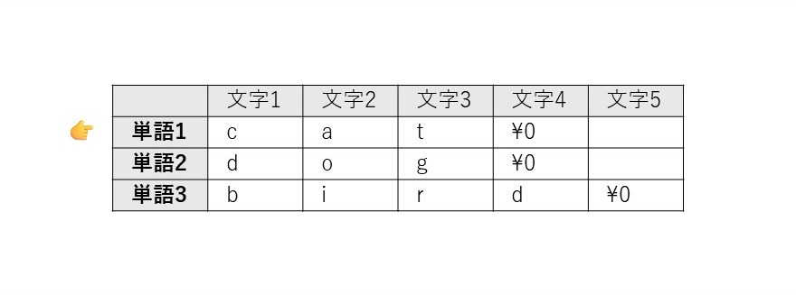
このモデルを使うと、複雑なポインタ演算は2つのシンプルな動きに集約できます。
ズバリ一言で言うと
(pp + 1)は、 「次の単語へ」進む（縦の移動）
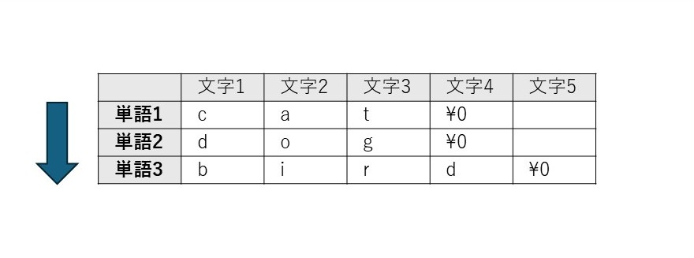
(*pp + 1)は、 「今の単語の次の文字へ」進む（横の移動）
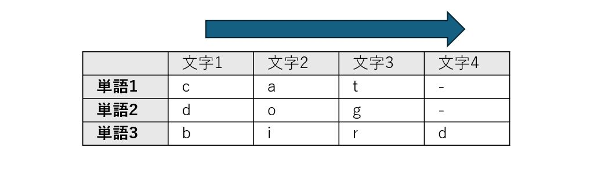
図解：縦移動と横移動
この「縦」と「横」の動きの違いを視覚的に整理しましょう。pp が指しているのは、「単語の先頭」です。
1. (pp + 1) の分析：縦の移動
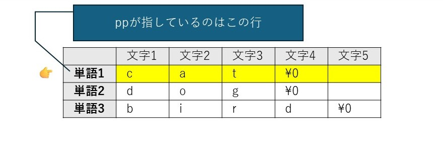
- 操作: pp + 1 は、「指」そのものを1つ進める操作です。
- 結果: “cat” という単語全体をスキップし、指は次の単語 “dog” の先頭を指すようになります。
- 結論: これは、単語帳を縦に1行下りる動きです。
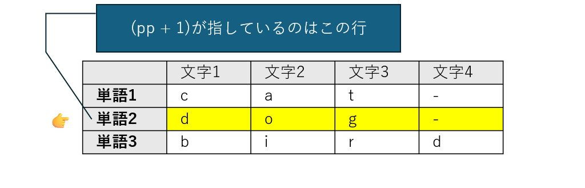
2. (*pp + 1) の分析：横の移動

- 操作: *pp でまず「指が指している先の中身」、つまり “cat” という単語そのものを取り出します。その結果に対して +1 をします。
- 結果: “cat” という単語の中で、先頭の ‘c’ から隣の ‘a’ に移動します。
- 結論: これは、今見ている単語の中で横に1文字ズレる動きです。
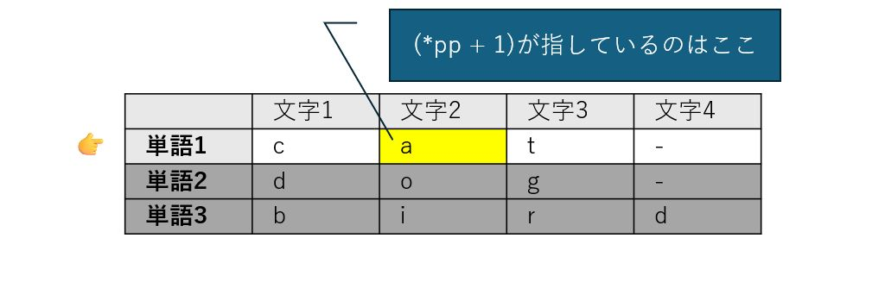
なぜそうなるのか？：データ型の観点から
この「縦横モデル」は、データ型に基づいた厳密なルールに裏付けられています。
- ppの正体： pp は char ** 型、つまり char * 型（文字列のアドレス）を指すポインタです。したがって、pp + 1 は sizeof(char *) 分だけアドレスを進め、次の「文字列のアドレス」を指します。これが「次の単語」への移動（縦移動）の正体です。
- *ppの正体： *pp は pp が指すアドレスの中身を取り出す操作です。その結果は char * 型、つまり “cat” という文字列の先頭アドレスそのものです。これに +1 すると、sizeof(char) (1バイト) 分だけアドレスが進むため、‘c’ の隣の ‘a’ を指します。これが「次の文字」への移動（横移動）の正体です。
2. 3つのアプローチ
上のような「縦横モデル」へのアクセスについて、ポインタのポインタ以外にも、2つのアプローチが考えられます。より深い理解のために、それらを比較してみましょう。
今度は、少しだけ、実装に寄せた書き方をしてみます。下のような単語帳を考えます。
| 0 | 1 | 2 | 3 | 4 | 5 | |
|---|---|---|---|---|---|---|
| 0 | T | e | a | |||
| 1 | C | o | f | f | e | e |
| 2 | C | o | c | o | a |
これをC言語で、以下のような文字列の配列として、定義します。
char *Drink[] = ["Tea", "Coffee", "Cocoa"];
Drink中の文字にアクセスする方法が3通り考えられます。
アプローチ1: シングル・ポインタ
char *p;
p = Drink[2];
printf("%c\n", (*p + 1))
アプローチ2: ブラケット記法
printf("%c\n", Drink[1][3]);
アプローチ3: ダブル・ポインタ(ポインタのポインタ)
char **pp;
pp = Drink;
printf("%c"\n", **(PP + 2));
3つのアプローチの違いと、それぞれの背後にある「考え方」を解説します。
0. 前提：メモリ構造のイメージ
まず、char *Drink[] がメモリ上でどうなっているかをイメージしましょう。
Drinkは「3つの部屋を持つ棚」です。- 各部屋には「文字列の先頭住所（ポインタ）」が入っています。
Drink[0]→ “Tea” の ‘T’ の場所Drink[1]→ “Coffee” の ‘C’ の場所Drink[2]→ “Cocoa” の ‘C’ の場所
イメージを表にしてみます。
| インデックス | 配列の中身 | 指している文字列 |
|---|---|---|
| 0 | “Tea” の ‘T’ のアドレス | Tea\0 |
| 1 | “Coffee” の ‘C’ のアドレス | Coffee\0 |
| 2 | “Cocoa” の ‘C’ のアドレス | Cocoa\0 |
1. シングル・ポインタ *(p + 1)
p = Drink[2];
printf("%c\n", *(p + 1));
- 動作:
"Cocoa"の ‘o’ を表示します。 - 考え方（1次元的な操作）:
- まず、特定の文字列（この場合は
Drink[2]すなわち"Cocoa"）を普通の1次元のポインタpに取り出します。
| インデックス | 配列の中身 | 0 | 1 | 2 | 3 | 4 | 5 | 6 | |
|---|---|---|---|---|---|---|---|---|---|
| 2 | “Cocoa” の ‘C’ のアドレス | C | o | c | o | a | \0 | この行だけを取り出す！ |
- 「特定の文字列（単語）の中」だけで、アドレスを
+1して横に移動します。
初期状態
| インデックス | 配列の中身 | 0 | 1 | 2 | 3 | 4 | 5 | 6 |
|---|---|---|---|---|---|---|---|---|
| ⬇ | ||||||||
| 2 | “Cocoa” の ‘C’ のアドレス | C | o | c | o | a | \0 |
アドレス +1 する
| インデックス | 配列の中身 | 0 | 1 | 2 | 3 | 4 | 5 | 6 |
|---|---|---|---|---|---|---|---|---|
| ⬇ | ||||||||
| 2 | “Cocoa” の ‘C’ のアドレス | C | o | c | o | a | \0 |
- アプローチ: 「今は一つの単語に集中したい」という時に使います。複雑な多次元構造を一度シンプルな1次元ポインタに落とし込むため、コードが読みやすくなります。
2. ブラケット記法 Drink[1][3]
printf("%c\n", Drink[1][3]);
- 動作:
"Coffee"の ‘f’ を表示します。 - 考え方（2次元配列的な操作）:
Drink[1]で「2番目の単語（Coffee）」を指定します。[3]でその単語内の「4文字目（‘f’）」を直接指定します。
| 0 | 1 | 2 | 3 | 4 | 5 | 6 | |
|---|---|---|---|---|---|---|---|
| 0 | T | e | a | \0 | |||
| 1 | C | o | f | f | e | e | \0 |
| 2 | C | o | c | o | a | \0 |
- アプローチ: C言語の「配列の配列」という性質を利用した、最も直感的でミスが少ない書き方です。インデックス（添字）がはっきりしているので、行列のような「表」としてデータを扱いたい時に適しています。
3. ダブルポインタ **(pp + 2)
pp = Drink;
printf("%c\n", **(pp + 2));
- 動作:
"Cocoa"の ‘C’ を表示します。 - 考え方（ポインタのポインタとしての操作）:
ppは「棚の先頭（Drink[0]）」を指しています。
| pp | インデックス | 配列の中身 | 0 | 1 | 2 | 3 | 4 | 5 | 6 |
|---|---|---|---|---|---|---|---|---|---|
| ➡ | 0 | “Tea” の ‘T’ のアドレス | T | e | a | \0 | |||
| 1 | “Coffee” の ‘C’ のアドレス | C | o | f | f | e | e | \0 | |
| 2 | “Cocoa” の ‘C’ のアドレス | C | o | c | o | a | \0 |
(pp + 2)で「棚の3つ目の部屋（Drink[2]）」まで縦に移動します。
| pp | インデックス | 配列の中身 | 0 | 1 | 2 | 3 | 4 | 5 | 6 |
|---|---|---|---|---|---|---|---|---|---|
| 0 | “Tea” の ‘T’ のアドレス | T | e | a | \0 | ||||
| 1 | “Coffee” の ‘C’ のアドレス | C | o | f | f | e | e | \0 | |
| ➡ | 2 | “Cocoa” の ‘C’ のアドレス | C | o | c | o | a | \0 |
- 最初の
*で「部屋の中にある住所（“Cocoa“の先頭アドレス）」を取り出します。
| pp | インデックス | 配列の中身 | 0 | 1 | 2 | 3 | 4 | 5 | 6 |
|---|---|---|---|---|---|---|---|---|---|
| ⬇ | |||||||||
| 0 | “Tea” の ‘T’ のアドレス | T | e | a | \0 | ||||
| 1 | “Coffee” の ‘C’ のアドレス | C | o | f | f | e | e | \0 | |
| ➡ | 2 | “Cocoa” の ‘C’ のアドレス | C | o | c | o | a | \0 |
- 2つ目の
*で、その住所にある「文字（‘C’）」を読み取ります。
- アプローチ: 最も「低層（ハードウェア寄り）」な考え方です。ポインタ演算だけで移動するため、関数の引数で受け取ったデータを高速に走査したり、可変長のデータを扱ったりする際に強力な武器となります。
まとめ：アプローチの比較
| アクセス方法 | イメージ | 適したシーン |
|---|---|---|
| 1. 一旦ポインタへ | 単語を抜き出す | 1つの文字列に対してループ処理等をする時 |
2. [i][j] 形式 | 表のマス目 | 読みやすさ重視、特定の場所を狙い撃つ時 |
3. **(pp + i) | アドレスの計算 | 高度なメモリ操作、ポインタの仕組み自体を扱う時 |
このように、「どの階層の住所を操作しているか」（棚の段数か、単語内の文字位置か）を意識するのがポインタ攻略のコツです。
さて、この「縦横モデル」が、コマンドライン引数の処理など、実際のプログラムでどのように機能するかを次のセクションで見ていきましょう。
3. 実践：コードで理解する「縦移動」と「横移動」
前セクションで学んだ抽象的な「縦横モデル」が、単なる比喩ではなく、C言語の動作そのものであることを具体的なコードを通じて体験しましょう。理論を実践に結びつけることで、理解はより確かなものになります。
実践例1：コマンドライン引数の表示 (args_test.c)
このプログラムは、実行時に渡されたコマンドライン引数を一つずつ順番に表示します。C言語の main 関数が受け取る char **argv（または char *argv[]）は、まさにこの「単語帳」モデルの典型例です。
args_test.c
#include <stdio.h>
int main(int argc, char **argv) {
printf("引数の数 (argc): %d\n", argc);
// ポインタのポインタ argv を使って、各引数を表示
// argv[i] は *(argv + i) と等価
for (int i = 0; i < argc; i++) {
printf("%d番目の引数: %s\n", i, *(argv + i));
}
return 0;
}
実行結果と解説
引数の数 (argc): 3 0番目の引数: ./args_test.exe 1番目の引数: apple 2番目の引数: banana
この結果は、*(argv + i) というポインタ演算が、まさに 「縦の移動」 であることを示しています。
- *(argv + 0) は、0番目の引数を指します。ここで面白いのは、実はプログラム名そのものが「0番目の単語」としてリストに入っているという点です。これは初学者がよく見落とすポイントです。
- *(argv + 1) は、リストを縦に1つ進み、1番目の引数 “apple” を指します。
- *(argv + 2) は、さらに縦に進み、2番目の引数 “banana” を指します。
おまけ： 横移動の確認 もし、printf 文を
printf("%d番目の引数: %s\n", i, *(argv + i) + 1);
と書き換えて実行すると、1番目の引数の出力は “pple” となります。これは、*(argv + 1) で単語 “apple” を特定した後に +1 することで、先頭文字 ‘a’ から1つ**「横の移動」**が起こり、2文字目の ‘p’ から表示が始まったことを実証しています。
実践例2：特定の文字をスキップ (remove_hyphen.c)
このプログラムは、外側のループで「縦移動（次の引数へ）」を行い、内側のループで「横移動（文字の走査）」を行って、ハイフン - を含まない文字だけを表示します。
remove_hyphen.c
#include <stdio.h>
int main(int argc, char **argv) {
// 縦移動: 1番目から最後の引数までループ (0番目はプログラム名なのでスキップ)
for (int i = 1; i < argc; i++) {
char *current_char_ptr = argv[i]; // 現在の引数（単語）の先頭アドレスを取得
// 横移動: 文字列の終端 '\0' まで1文字ずつ走査
while (*current_char_ptr != '\0') {
if (*current_char_ptr != '-') {
putchar(*current_char_ptr);
}
current_char_ptr++; // 次の文字へポインタを進める
}
putchar(' '); // 単語の区切りにスペースを挿入
}
putchar('\n');
return 0;
}
横移動の核となる current_char_ptr++ このプログラムの「横移動」は、current_char_ptr++ という一行が担っています。
- char *current_char_ptr = argv[i]; で、現在の単語の先頭アドレスを取得します。
- while ループの中で current_char_ptr++ が実行されるたびに、ポインタは sizeof(char) (1バイト) 分だけアドレスを進めます。
- これにより、ポインタは文字列の中を1文字ずつ正確に移動し、終端のヌル文字 \0 に到達するまで走査を続けます。これは、(*pp + 1) の概念と完全に一致する具体的な動作です。
これらの実践的なコード例を通して、char ** を用いたポインタ演算が、単なる理論ではなく、実用的なプログラムを構築するための強力なツールであることがお分かりいただけたでしょう。
4. よくある混乱：char a[] (配列) と char *a (ポインタ) の決定的違い
文字列を扱う際、char a[] = "Hello"; という配列宣言と char *a = "Hello"; というポインタ宣言は、一見よく似ていますが、メモリ上での振る舞いは全く異なります。この違いを正確に理解することは、予期せぬバグやセグメンテーション違反といった深刻なエラーを防ぐ上で極めて重要です。
char a[]; の正体：書き換え可能な「箱」の確保
char a[4]; のように配列を宣言すると、その瞬間に文字を入れるための「箱」が物理的にメモリ上に確保されます。この領域はプログラムの実行中に自由に変更が可能です。
char a[] = "cat"; // {'c', 'a', 't', '\0'} の4バイトの箱が確保される
a[0] = 'b'; // OK! 中身は "bat" になる
ただし、重要な制約があります。配列名 a は、確保された箱の先頭アドレスを指す**「定数」**として扱われます。そのため、a が別の場所を指すように変更することはできません。
char *a; の正体：住所を記録するための「メモ」
一方、char *a; のようにポインタを宣言した場合、確保されるのはアドレスを記録するための「メモ」用の変数 a のみです。文字そのものを格納する「箱」は、この時点ではまだ用意されていません。したがって、有効なアドレスを代入せずに使用しようとすると、未定義の動作を引き起こします。
最も注意が必要なパターン：読み取り専用領域の罠
ポインタで最もよく使われ、同時に最も注意が必要なのが、文字列リテラルによる初期化です。
char *a = "Hello"; // "Hello"は読み取り専用領域に配置される
この場合、“Hello” という文字列は、プログラムが始まる前に用意された読み取り専用領域に配置されます。ポインタ変数 a は、その場所のアドレスを指すだけです。これを「博物館のガラスケース」に例えることができます。中身を見ることはできますが、変更しようとすると警報が鳴ります。
a[0] = 'B'; // NG! ガラスケースを割ろうとする行為。セグメンテーション違反でクラッシュする可能性が高い。
これはC言語初心者が最も陥りやすいクラッシュの原因の一つです。この違いを脳に焼き付けることが、何時間ものデバッグ作業を節約することに繋がります。
では、なぜこのような仕組みになっているのでしょうか？ この読み取り専用の保護は、実は極めて重要なセキュリティ機能です。これにより、プログラムが誤って、あるいは悪意を持って自分自身の命令コードや定数データを書き換えてしまうのを防ぎ、より安定した安全なシステムを実現しているのです。
まとめ：配列とポインタの使い分け
両者の違いを明確に理解し、適切に使い分けることが重要です。
| 項目 | char a[]; （配列） | char *a; （ポインタ） |
|---|---|---|
| メモリの確保 | 文字を入れる箱が確保される | 住所をメモする場所だけ確保される |
| 箱の中身の変更 | 安全に書き換え可能 | 原則NG （特にリテラル代入時） |
| 住所の変更 | NG （常に同じ場所を指す定数） | OK （別の文字列の住所に切り替え可能） |
明確な指針は以下の通りです。
- 後から内容を書き換えたい場合： 配列 char a[] を使用する。
- 別の文字列を指すように切り替えたい、または書き換え不要な固定文字列を使いたい場合： ポインタ char *a を使用する。
5. 応用：動的メモリ確保とポインタ
コンパイル時にサイズが決定される配列には、「実行時まで必要なサイズがわからない」という状況に対応できない限界があります。この問題を解決するのが、プログラム実行中に必要な分だけメモリを確保する動的メモリ確保であり、ポインタはこの技術の根幹をなす要素です。
malloc による1次元配列の確保
malloc 関数を使うと、指定したサイズのメモリブロックをヒープ領域から確保し、その先頭アドレスを返すことができます。このアドレスをポインタ変数に格納することで、確保した領域を配列のように利用できます。
#include <stdlib.h> // malloc, free を使うために必要
#include <stdio.h>
int main() {
int n = 5;
// char型5個分のメモリを動的に確保
char *pvowels = (char *)malloc(n * sizeof(char));
if (pvowels == NULL) { return 1; } // メモリ確保失敗時のエラー処理
pvowels[0] = 'A';
*(pvowels + 1) = 'E'; // ポインタ演算でもアクセス可能
pvowels[2] = 'I';
pvowels[3] = 'O';
pvowels[4] = 'U';
for (int i = 0; i < n; i++) {
printf("%c ", pvowels[i]);
}
printf("\n");
// 使い終わったメモリは必ず解放する
free(pvowels);
return 0;
}
動的メモリ確保の最大の利点は、必要な分だけメモリを確保できる柔軟性にありますが、同時にfree() を呼び出してメモリを解放する責任がプログラマに生じます。これを怠ると、プログラムが確保したメモリを返却しない「メモリリーク」が発生し、システム全体のパフォーマンスを低下させる原因となります。
char ** を用いた2次元配列の動的確保
ポインタのポインタは、2次元配列を動的に確保する際に真価を発揮します。ここで、セクション2で学んだ「縦横モデル」が具体的にどう使われるか見てみましょう。これは2段階のプロセスで行われます。
- 縦のリストを確保： まず、「行」の数だけ char * (ポインタ) を格納するための領域を確保します。これが「単語帳」の構造そのもの、つまり縦のリストを作る作業です。
- 横の領域を確保： 次に、各行のポインタに対してループ処理を行い、それぞれに「列」の数だけ char を格納するための領域を確保します。これが各単語の文字を格納する横のスペースを作る作業です。
この2段階プロセスが、抽象的なモデルと具体的なメモリ確保を結びつける「アハ体験」の瞬間です。
#include <stdio.h>
#include <stdlib.h>
int main() {
int nrows = 2;
int ncols = 5;
int i, j;
// 1. 行ポインタの領域を確保 (char* を nrows 個分) -> 「縦」の確保
char **pvowels = (char **)malloc(nrows * sizeof(char *));
// 2. 各行の領域を確保 (char を ncols 個分) -> 「横」の確保
for (i = 0; i < nrows; i++) {
pvowels[i] = (char *)malloc(ncols * sizeof(char));
}
// データ代入
pvowels[0][0] = 'A';
pvowels[0][1] = 'E';
pvowels[0][2] = 'I';
pvowels[0][3] = 'O';
pvowels[0][4] = 'U';
pvowels[1][0] = 'a';
pvowels[1][1] = 'e';
pvowels[1][2] = 'i';
pvowels[1][3] = 'o';
pvowels[1][4] = 'u';
// データ表示
for (i = 0; i < nrows; i++) {
for(j = 0; j < ncols; j++) {
printf("%c ", pvowels[i][j]);
}
printf("\n");
}
// 解放も2段階で行う
// 最初に各行を解放
for (i = 0; i < nrows; i++) {
free(pvowels[i]);
}
// 最後にトップレベルのポインタを解放
free(pvowels);
return 0;
}
メモリ解放も確保とは逆の順序で、各行（横）を解放してから、トップレベルのポインタ（縦）を解放する必要があります。
5. まとめ：ポインタを使いこなすための重要ポイント
本研修資料を通じて、C言語のポインタ、特にその核心である char ** について学んできました。最後に、ポインタを安全かつ効果的に使いこなすための最重要ポイントを3つに絞って振り返ります。
- 配列とポインタの等価性 配列記法 a[i] は、ポインタ演算 *(a + i) の可読性を高めた表現です。この表裏一体の関係性を理解することが、C言語がメモリをどのように扱っているかを解き明かす鍵となります。
- ポインタのポインタの「縦横モデル」 char **pp のような複雑な構造は、pp+1 が「次の単語（行）」への縦移動、*pp+1 が「現在の単語内の次の文字（列）」への横移動という直感的なモデルで捉えることで、格段に理解しやすくなります。
- 宣言による役割の違い char a[] は書き換え可能なデータ格納用の**「箱」を確保し、char *a はアドレスを指すための「メモ」**を確保します。特に文字列リテラルをポインタに代入する際は、読み取り専用領域へのポインタとなるため、内容の変更は厳禁です。この違いを常に意識することが、安全なプログラミングに不可欠です。
ポインタの学習は一度で完結するものではありません。本当の習熟は、実際にコードを書き、コンパイルし、そしてデバッガを使ってメモリ上のアドレスや値がどのように変化するかを自分の目で追いながら試行錯誤を繰り返すことで達成されます。本資料が、皆様のその一歩を踏み出すための確かな土台となることを願っています。
スタックとヒープ

イントロダクション：なぜメモリ管理が重要なのか？
これから皆さんが安定性と効率性に優れたアプリケーションを開発していく上で、避けては通れない非常に重要な概念が「メモリ管理」です。次章で説明するように、C言語におけるプログラムが利用するメモリ領域は4種類ありますが、その中で、特に スタック と ヒープ の動作原理を深く理解することは、信頼性の高いコードを書くための絶対的な基礎となります。この二つの領域は、それぞれ異なる役割とルールを持っており、その違いを把握することは「ポインタ使い」としてのレベルを上げ、メモリ関連の厄介なバグを未然に防ぐ鍵となるのです。
この章を通じて、皆さんは以下の主要なトピックを学びます。
- スタックとヒープの基本的な役割と目的
- 両者の決定的な違い（管理方法、寿命、速度など）
- 関数呼び出しがスタックに与える影響
- スタックとヒープが連携して動的メモリを確保する仕組み
- メモリリークなどの重大なリスクとその防止策
メモリの動作原理を理解することは、単なる知識の習得ではありません。それは高品質なコードを自信を持って書き上げるための第一歩です。さあ、プログラムの舞台裏で何が起きているのか、その核心に迫っていきましょう。
1. メモリの二大領域：スタックとヒープの概要
C言語のプログラムが実行される際、OS（オペレーティングシステム）はプログラムが作業するためのメモリ空間を割り当てます。このメモリ空間はいくつかの領域に分かれていますが、その中でも特に重要なのが「スタック領域」と「ヒープ領域」です。これら二つの領域は、それぞれ全く異なる目的とルールに基づいてデータを管理します。この違いを正確に理解することが、本章のゴールです。
1.1. スタック領域 (Stack Area) - 自動的・一時的な仕事場
スタック領域とは、プログラムの実行中に、コンパイラによって自動的かつ一時的に管理されるメモリ領域です。プログラマが直接操作することはほとんどなく、プログラムの構造に従って機械的に利用されます。
- 自動管理 メモリの確保と解放は、すべてコンパイラが自動で行います。そのため、プログラマが「このメモリを確保してください」「このメモリを解放してください」といった指示を明示的に出す必要はありません。この自動化された管理が、スタックの大きな利便性です。
- 主な用途 主に「ローカル変数」と「関数の呼び出し情報」という二つの重要なデータが格納されます。関数内で宣言されたint x;のような変数は、その関数が実行されている間だけスタック上に存在します。
- データの流れ (LIFO) スタックは「LIFO (Last-In, First-Out)」、つまり「後から入れたものが先に出る」という原則で動作します。これは、洗ったお皿を積み重ねていく様子に似ています。関数が呼び出されるたびに、その関数の情報（スタックフレーム）が一番上に積まれ（プッシュ）、関数の処理が終わると、一番上のお皿を取り除くように自動的に解放（ポップ）されます。この比喩が重要なのは、一番上のお皿にしかアクセスできないという点です。これが、後述する「スコープ」の概念、つまりなぜfuncAがfuncBのローカル変数に触れないのか、というルールの物理的なイメージとなります。
- サイズ制限とリスク スタック領域のサイズには上限が定められています。もし関数が無限に再帰的に呼び出されるなどして、データが積まれすぎると、スタックの許容量を超えてしまいます。この状態が「スタックオーバーフロー」と呼ばれる致命的なエラーであり、プログラムは強制終了します。
1.2. ヒープ領域 (Heap Area) - 手動で管理する広大な土地
ヒープ領域とは、プログラマが任意のタイミングで、手動でメモリを確保・解放するために使用される、広大で柔軟なメモリ領域です。つまり以前の章で説明した「動的メモリ確保」の対象です。
- 手動管理（動的メモリ確保） ヒープ領域の利用は、完全にプログラマの責任において行われます。malloc()関数でメモリの確保を要求し、使い終わったら必ずfree()関数で解放しなければなりません。この手動管理が、ヒープの最大の特徴であり、同時に難しさでもあります。
- 主な用途 「実行時にサイズが決まる大きなデータ」（例えば、ユーザーの入力に応じてサイズが変わる配列）や、「関数をまたいで長期間保持したいデータ」など、スタックの自動的・一時的な性質では対応できないケースで利用されます。
- データ構造 スタックのような厳格なLIFOの規則はありません。OSはヒープ内の空いている場所を見つけてメモリを割り当てるため、確保されたメモリブロックが物理的に連続しているとは限りません。
- 危険性（メモリリーク） ヒープ管理における最大の敵が「メモリリーク」です。これは、malloc()で確保したメモリをfree()で解放し忘れることで発生します。解放されなかったメモリは、プログラムが終了するまで誰にも使われないまま占有され続け、最終的には利用可能なメモリをすべて使い果たし、プログラムの動作を不安定にしたり、クラッシュさせたりする原因となります。
スタックの自動性と安全性、そしてヒープの柔軟性と広大さは、いわばトレードオフの関係にあります。どちらの領域をどのような状況で使うべきかを的確に判断する能力は、Cプログラマにとって不可欠です。次のセクションでは、両者の違いをより明確にするため、比較表を用いて分析します。
2. スタックとヒープの比較分析
スタックとヒープの特性を直接比較することは、両者の長所と短所を浮き彫りにし、特定の状況でどちらのメモリ領域を利用すべきかという設計判断を的確に行う上で非常に重要です。以下の表で、その違いを整理してみましょう。
| 特徴 | スタック領域 (Stack) | ヒープ領域 (Heap) |
|---|---|---|
| 管理方法 | 自動 （コンパイラが行う） | 手動 （malloc / free を使う） |
| データの寿命 | 関数が終了するまで | free()されるか、プログラムが終了するまで |
| 主な用途 | ローカル変数、関数の呼び出し | 実行時にサイズが決まる大きなデータ |
| 速度 | 非常に高速 | スタックよりは遅い |
| リスク | スタックオーバーフロー | メモリリーク、二重解放 |
この比較表から、いくつかの実践的な洞察が得られます。
- なぜスタックは高速なのか？ スタックへのメモリ確保・解放は、CPUの特定レジスタ（スタックポインタ）が持つアドレス値を加減算するだけの、極めて高速な単一命令です。OSの複雑なメモリ管理アルゴリズムを呼び出す必要がないため、ヒープに比べて桁違いに高速なのです。
- 手動管理がもたらすプログラマの責任 ヒープの「手動管理」は、大きな自由度をもたらす一方で、「借りたものは必ず返す」という厳格な責任をプログラマに課します。free()の呼び出し忘れ（メモリリーク）や、同じメモリを二度解放する（二重解放）といったミスは、すべてプログラマの責任となり、深刻なバグに直結します。
- データの寿命とスコープ データの「寿命」は、プログラムの設計において極めて重要です。関数内で一時的に使うだけのデータはスタックに、関数が終わった後も使い続けたいデータはヒープに置く、という使い分けが基本となります。
これらの違いが、実際のプログラムの動作、特にプログラムの基本単位である「関数の呼び出し」において、どのように具体的に現れるのでしょうか。次の章では、スタックの動作原理をさらに詳しく見ていきます。
3. スタックの動作原理：関数の呼び出しと「スタックフレーム」
スタックは、プログラムの実行フローを裏で支える「縁の下の力持ち」です。関数が呼び出され、処理を終えて戻ってくる。この一連の当たり前の動作は、すべてスタックのLIFO（後入れ先出し）の仕組みによって実現されています。関数が呼び出されるたびにスタック上で何が起きているのかを具体的に理解することは、変数のスコープや再帰といった重要な概念の理解に直結します。
スタックフレームとは？
関数が呼び出されると、その関数の実行に必要な情報一式がまとめられ、スタックに積まれます。この情報のかたまりを「スタックフレーム」と呼びます。スタックフレームとは、関数が使う、引数、ローカル変数、戻りアドレスなどをひとまとめにした領域のことです。
- 引数: 関数に渡された値。
- ローカル変数: 関数内で宣言された変数。
- 戻りアドレス: 関数の処理が終わった後、どこに戻ればよいかを示す情報。
関数呼び出しのシーケンス
main関数からfuncAが呼び出され、さらにfuncAからfuncBが呼び出されるというシナリオで、スタックの状態がどのように変化するかを見ていきましょう。
ステップ1: main関数の開始
プログラムが実行されると、まずmain関数のためのスタックフレームがスタックの底に積まれます。
| 制御 | スタックの内容 |
|---|---|
| → | main関数のスタックフレーム |
ステップ2: 関数funcAの呼び出し
main関数がfuncAを呼び出すと、mainのスタックフレームの上に、funcAのための新しいスタックフレームが積まれます（プッシュ）。
| 制御 | スタックの内容 |
|---|---|
| → | funcA のスタックフレーム |
| main関数のスタックフレーム |
ステップ3: 関数funcBの呼び出し
次に、funcAがfuncBを呼び出すと、さらにその上にfuncBのスタックフレームが積まれます。この時点で、プログラムが直接アクセスできるのは一番上にあるfuncBのスタックフレーム内のローカル変数だけです。
| 制御 | スタックの内容 |
|---|---|
| → | funcB のスタックフレーム |
| funcA のスタックフレーム | |
| main関数のスタックフレーム |
ステップ4: 関数funcBの終了と解放
funcBの処理が完了すると、funcBのスタックフレームはスタックから自動的に取り除かれ（ポップ）、制御が呼び出し元のfuncAに戻ります。この瞬間、funcB内で使われていたローカル変数は完全に消滅し、アクセス不能になります。
| 制御 | スタックの内容 |
|---|---|
| → | funcA のスタックフレーム |
| main関数のスタックフレーム |
この一連のプロセスから導き出される重要な結論は、「なぜ関数内のローカル変数が、その関数の外から使えないのか」というスコープの概念です。答えは、変数が属するスタックフレームが、関数の終了と共に物理的にメモリから消去されてしまうからです。
ステップ5: 関数funcAの終了と解放
funcAの処理が完了すると、funcBのときと同様に、funcAのスタックフレームはスタックから自動的に取り除かれ(ローカル変数は完全に消滅し)、制御が呼び出し元のmainに戻ります。
| 制御 | スタックの内容 |
|---|---|
| → | main関数のスタックフレーム |
しかし、プログラムは一時的なデータだけで完結しません。関数の寿命を超えてデータを保持したい場合、スタックだけでは力不足です。そこで登場するのがヒープ領域であり、次の章では、スタックとヒープがどのように連携して動的なデータ管理を実現するのかを解説します。
4. スタックとヒープの連携：動的メモリ確保の舞台裏
ヒープ領域の利用は、単独で行われるわけではありません。実際には、スタック領域との巧妙な連携プレーによって成り立っています。mallocを使ってヒープメモリを確保する際、データがどのメモリ領域にどのように配置され、プログラムはそれにどうアクセスするのか。その一連の流れを解き明かすことが、動的メモリ確保を真に理解する鍵となります。
ここでは、以下のコードを例に、そのプロセスをステップバイステップで見ていきましょう。
int *p;
p = (int *)malloc(sizeof(int));
ステップ1: ポインタ変数の生成
まず、int *p; という行が実行されます。この時点で何が起こるかというと、ポインタ変数p自体がスタック領域に作成されます。
- スタック領域: pという名前のポインタ変数が確保される。
- ヒープ領域: 何も変化しない。
重要なのは、このpはmain関数（あるいはそれが宣言された関数）のローカル変数であるため、その置き場所はスタックであるという点です。この時点では、pの中身は不定（いわゆるゴミの値）であり、どこも指していません。このような初期化されていないポインタを誤って使用すると、プログラムは即座にクラッシュする可能性があります。
| 領域 | 変数名 | 型 | 中身（値） |
|---|---|---|---|
| スタック | p | int * (ポインタ) | （ゴミの値 / NULL） |
ステップ2: mallocによるヒープ確保
次に、p = (int *)malloc(sizeof(int));の右辺、malloc関数が実行されます。mallocはOSに対して「int型一つ分のメモリをください」と要求します。
- スタック領域: 何も変化しない。
- ヒープ領域: OSがヒープ内の空き領域からint型（通常4バイト）のメモリブロックを確保し、その先頭アドレスを返す。
例えば、OSが0x8004というアドレスのメモリを確保したとします。mallocはこの0x8004という値を返り値として返します。
ステップ3: アドレスの代入と連携の完成
最後に、代入演算子=によって、mallocが返したヒープのアドレスが、スタック上のポインタ変数pに格納されます。
- スタック領域: ポインタ変数pの値が、ヒープのアドレス（例: 0x8004）になる。
- ヒープ領域: 確保されたメモリはそのまま。
これで、「スタック上のポインタが、ヒープ上のメモリを指し示す」という連携関係が完成しました。ポインタpは、スタックとヒープをつなぐ「橋渡し役」として機能しているのです。
| 領域 | 変数名 | 型 | 中身（値） |
|---|---|---|---|
| スタック | p | int * (ポインタ) | 0x8004 (ヒープのアドレス) |
| ヒープ | （変数名なし） | int | （ゴミの値） |
この連携が確立されて初めて、*p = 100; というコードが意味を持ちます。このコードは、「ポインタpが指し示す先（つまりヒープ上のアドレス0x8004）に、値100を書き込む」という操作を実行します。
このようにメモリを「借りる」プロセスを理解した今、次はそのメモリを「返す」ことの重要性、すなわちfree()関数の役割について学ぶ必要があります。
5. プログラマの責務：free()によるメモリ解放とリークの防止
ヒープ領域のメモリ管理におけるプログラマの最も重要な責務は、「借りたメモリを確実に返す」ことです。この責務を果たすための重要なツールがfree()関数です。これを正しく使うことがプロフェッショナルなコードの証であり、怠った場合の深刻な結果が「メモリリーク」です。本章では、このプログラマの責務について深く掘り下げます。
free()関数の仕組み
free()関数は、mallocで確保したメモリブロックの先頭アドレスを引数に取ります。この関数を呼び出すと、OSに対して「このアドレスから始まるメモリブロックはもう使いません」と通知します。OSはその領域を「未使用」としてマークし、将来別のmalloc呼び出しで再利用できるようになります。
ここで注意すべき点は、free(p)を実行しても、スタック上にあるポインタ変数p自体は消えないということです。pは解放されたメモリのアドレスを持ち続けます。この、もはや無効となったメモリ領域を指し続けるポインタは「ダングリングポインタ（dangling pointer）」と呼ばれます。この「ダングリングポインタ」を誤って使用すると、プログラムがクラッシュするだけでなく、解放されたメモリが別の機密データ（例えばパスワードや個人情報）に再割り当てされていた場合、意図せずその情報を読み取ったり書き換えたりする深刻なセキュリティ脆弱性の原因となります。
メモリリークの危険性
free()を呼び出す最大の理由は、**メモリリーク（Memory Leak）**を防ぐためです。メモリリークは以下のメカニズムで発生します。
- メモリ確保: mallocでヒープにメモリを借りる。
- ポインタの消失: 借りたメモリを指していたポインタ変数（スタック上に存在）が、関数の終了などでスコープを外れ、自動的に消滅する。
- アクセス不能: ヒープ上に借りたメモリは残ったままですが、その場所を知る唯一の手がかりだったポインタが失われたため、誰もそのメモリにアクセスも解放もできなくなります。
この「迷子」になったメモリは、プログラムが終了するまで無駄に占有され続けます。これが頻繁に発生すると、以下のような深刻な問題を引き起こします。
- メモリの枯渇: 利用可能なヒープメモリが徐々に減少し、最終的には新たなmallocが失敗するようになり、プログラムがクラッシュします。
- システム全体への悪影響: 特に長期間稼働するサーバーアプリケーションの開発者にとって、見過ごされた小さなメモリリークは些細なバグではありません。それはサービス停止や緊急再起動を要する致命的な障害となり得ます。だからこそ、free()のマスターは交渉の余地がない必須スキルなのです。
free()の使用上の注意点
free()は必須のツールですが、使い方を誤ると別の問題を引き起こします。
| 問題点 | 説明 | 対策 |
|---|---|---|
| 二重解放 (Double Free) | 同じアドレスに対してfree()を二度以上呼び出すことです。これはメモリ管理情報を破壊し、プログラムのクラッシュや予測不能な動作の原因となります。 | プロのCプログラマとしての規律です。解放後のポインタへのNULL代入は、チームのコーディング規約として徹底すべき防御的なプログラミングの基本です。 |
| 解放後の使用 (Use After Free) | free()で解放済みのメモリに、再びアクセスしてデータを読み書きすることです。そのメモリは既にOSによって別の目的に再割り当てされている可能性があり、データの破壊やセキュリティ上の深刻な脆弱性を生み出します。 | 上記同様、解放後にポインタへNULLを代入することが最も確実な防御策です。これもプログラマの規律として徹底すべきです。 |
結論として、ヒープメモリ管理は「借りたら返す」というプログラマの規律の上に成り立っています。free()を正しく、適切なタイミングで使うことは、プロフェッショナルなCプログラマにとって必須のスキルなのです。
6. まとめ：メモリ管理をマスターし、次のステップへ
このトレーニング資料を通じて、C言語プログラミングの心臓部とも言えるメモリ管理、特にスタックとヒープの役割と動作原理について学びました。ここで得た知識は、今後の開発において皆さんを力強く支える土台となるでしょう。
最後に、最も重要な概念を振り返ります。
- スタックは、ローカル変数と関数の呼び出しに使われる、コンパイラが自動管理する高速な領域です。
- ヒープは、動的な大きなデータや長寿命のデータに使われる、プログラマが手動管理する広大な領域です。
- ヒープの利用には、malloc()で借り、使い終わったら必ずfree()で返すというプログラマの厳格な責任が伴います。
- free()を怠るとメモリリークを、誤って使うと二重解放などの深刻なバグを引き起こし、プログラムの安定性を著しく損ないます。
初心者の皆さんへ。スタックとヒープの概念を理解することは、単なる暗記項目ではありません。それは、メモリの動きを頭の中でシミュレーションしながら、なぜこのコードが安全で、なぜあのコードが危険なのかを論理的に判断するための、実践的なスキルです。
これからも、常にメモリを意識したコーディングを心がけてください。それが、信頼性の高いソフトウェアを構築するプロフェッショナルへの確実な道筋です。
auto と static

イントロダクション:記憶クラス指定子
ここでは、C言語における変数の 生存期間 と 有効範囲 という、プログラムの安定性を左右する重要な概念について学びます。特に、初心者がつまずきやすいautoとstaticという2つの記憶クラス指定子に焦点を当てます。これらの違いを正確に理解し、適切に使い分けることは、意図しないバグを防ぎ、信頼性と保守性の高いコードを書くための不可欠なスキルです。この資料を通じて、変数の振る舞いを深く理解し、より高度なプログラミングへの第一歩を踏み出しましょう。
1. 基本となる auto 変数
このセクションでは、C言語における最も基本的で一般的な変数であるauto変数について解説します。私たちが普段、関数内で何気なく宣言しているローカル変数の正体は、実はこのauto変数です。そのデフォルトの挙動を正確に理解することは、C言語プログラミングの基礎を固める上で極めて重要です。
auto変数（自動変数）とは
auto変数は、関数やブロック内で宣言されるローカル変数のデフォルトの型です。その名の通り、特定のスコープ内で「自動的」に生成・破棄される性質を持っています。
以下に、auto変数の主要な特徴をまとめます。
- キーワード autoキーワードを使って明示的に宣言することも可能ですが、関数内で宣言された変数はデフォルトでautoとして扱われるため、通常はこのキーワードは省略されます。
- 有効範囲（スコープ） 変数が宣言された関数内、またはブロック（{}で囲まれた範囲）内に限定されます。スコープ外からはアクセスすることはできません。
- 生存期間 auto変数の寿命は非常に短く、一時的です。
- 関数が呼び出されるたびに、メモリ（スタック領域）上に新しく生成されます。
- 関数の処理が終了すると、その変数はメモリから完全に消滅し、確保されていた領域は解放されます。
- このため、関数を再度呼び出しても、以前の値が保持されていることはありません。
- 初期値 宣言時に明示的に値を代入して初期化しない場合、その変数には**不定な値（通称：ごみデータ）**が入っています。これは予期せぬバグの温床となるため、必ず初期化する習慣をつけましょう。
auto変数の「関数呼び出しごとにリセットされる」という性質は、一時的な計算には非常に便利ですが、状態を記憶する必要がある場合には不向きです。この点が、次にご紹介するstatic変数との決定的な違いとなります。
2. 状態を記憶する static 変数
前のセクションでは、関数が終わるとその役割も記憶もすべて失うauto変数を学びました。もしauto変数が「一度きりの仕事人」だとすれば、static変数は「プログラムの歴史を記憶する書記官」です。static変数は、プログラムの実行が開始されてから終了するまで、その値を保持し続ける特殊な変数です。この「状態を記憶する」という強力な特性は、特定のプログラミング課題をエレガントに解決するための鍵となります。
static変数（静的変数）とは
static変数は、その名の通りメモリ上の位置が「静的」に固定され、プログラムのライフサイクル全体を通じて生存する変数です。関数が終了してもその値は破棄されず、次回の呼び出し時に同じ値を参照・更新できます。
以下に、static変数の主要な特徴をauto変数と比較しながら見ていきましょう。
- キーワード 変数をstaticとして機能させるためには、データ型の前に
staticキーワードを付けて明示的に宣言する 必要があります。 - 有効範囲（スコープ） static変数のスコープは、宣言された場所によって異なります。
- 関数内で宣言した場合: スコープはauto変数と同様に、その関数内に限定されます。外部から直接アクセスすることはできません。
- 関数外で宣言した場合: スコープはそのファイル全体に限定されます。これは単なる制限ではなく、意図的な設計手法です。staticを付けることで、他のファイルからの意図しない変更を防ぐ「プライベートなグローバル変数」を作成できます。このテクニックは、特に大規模なプロジェクトでコードの安全性を保つために不可欠です。
- 生存期間 auto変数とは全く異なり、非常に長い寿命を持ちます。
- プログラムが開始される前にメモリが確保され、一度だけ生成されます。
- 関数が終了しても消滅せず、プログラムが終了するまでメモリ上に存在し続けます。
- このため、関数の呼び出しをまたいで値を保持することができます。
- 初期値 auto変数との重要な違いとして、明示的に初期化しない場合でも、コンパイラによって自動的に0で初期化されるという特性があります。この違いを意識することが、バグを未然に防ぐ鍵となります。
3. C言語における4つのメモリ領域
今度はメモリ管理の点から、auto変数とstatic変数をみてみましょう。
前章で、メモリ空間にはスタック領域とヒープ領域があることを学びました。auto変数はディフォルトのローカル変数ですから、スタック領域に作成されます。
では、static変数や、関数の外で宣言されるグローバル変数は、どうでしょう？ どちらの領域に入るのでしょうか？
どちらでもない、というのが正解です。
実は、プログラムが利用する主なメモリ領域は、スタック、ヒープを含め、ぜんぶで4つあります。
- プログラム領域(テキスト領域)
- データ領域
- スタック領域
- ヒープ領域
各領域の役割を簡潔に見ていきましょう。
| 領域名 | 格納されるもの | 確保・解放のタイミング | 特徴 |
|---|---|---|---|
| テキスト領域 | プログラムのコード（機械語） | プログラム起動時～終了時 | プログラム実行中に変更されることはない。プログラマが直接意識する必要はほとんどない。 |
| データ領域 | グローバル変数、静的（static）変数 | プログラム起動時～終了時 | プログラムが終了するまで値が保持される。 |
| スタック領域 | ローカル変数、関数の引数、関数の戻りアドレス | 関数の呼び出し時～関数終了時 | 自動的に確保・解放が行われる。 |
| ヒープ領域 | プログラム実行中に動的に確保されるデータ | プログラマが手動で確保・解放する | 任意のタイミングで必要なサイズのメモリを確保できる。 |
この全体像を把握することが、メモリ管理を理解する上での重要なポイントとなります。
ところで、static変数には、上で説明した「関数をまたいで値を保持する」使い方のほかに、「グローバル変数のスコープをファイル内に限定する」という重要な役割もあります。次のセクションでは、これらの特性が実際のコードでどのように活かされるのかを具体的に見ていきます。
3. 実践的な比較と用例
ここまではautoとstaticの理論的な違いを学んできました。このセクションでは、両者の特性を比較表で整理し、実際のコード例を通して、どのような場面でどちらを選択するべきかを具体的に解説します。
auto と static の特性比較
これまでの内容を以下の表にまとめました。この違いを常に意識することが、適切な使い分けの第一歩です。
| 特性 | auto 変数 | static 変数 |
|---|---|---|
| 生存期間 | 関数呼び出しの間 | プログラム実行中全体 |
| 有効範囲 | ブロック内 | 宣言場所による（関数内 or ファイル内） |
| 初期値 | 不定値（ごみデータ） | 0 |
| 宣言方法 | キーワードは通常省略 | staticキーワードを明示 |
用例1：関数呼び出し回数のカウント
問題: あるレースに参加したランナーの数をカウントしたいとします。ランナーが1人参加するたびにrunner()という関数が呼ばれると仮定して、合計人数をカウントするプログラムを考えてみましょう。
auto変数を使った失敗例
まず、auto変数でカウンターを実装してみます。
#include <stdio.h>
int runner() {
int count = 0; // auto変数
count++;
return count;
}
int main() {
printf("%d ", runner()); // 1人目
printf("%d ", runner()); // 2人目
return 0;
}
// 期待する出力: 1 2
// 実際の出力: 1 1
このコードは期待通りに動作しません。runner()が呼び出されるたびに、全く新しいcount変数がメモリ上に生まれ、0で初期化されます。関数が終わるとその変数は破棄されるため、前回の呼び出しの記憶は完全に失われます。
static変数を使った成功例
次に、カウンター変数をstaticに変更してみましょう。
#include <stdio.h>
int runner() {
static int count = 0; // static変数
count++;
return count;
}
int main() {
printf("%d ", runner()); // 1人目
printf("%d ", runner()); // 2人目
return 0;
}
// 実際の出力: 1 2
今度は期待通りに動作しました。ここで重要なのは、static int count = 0; という初期化処理は、プログラムの開始前に一度だけ行われるということです。これはrunner()関数が繰り返し実行されるフローの一部ではありません。そのため、countの値は関数が終了してもメモリに保持され続け、呼び出すたびに正しくインクリメント（+1）されていきます。
用例2：グローバル変数のスコープ限定
staticのもう一つの強力な用途は、グローバル変数を「カプセル化」することです。
プログラム・ファイル(.cファイル)の行数が多くなりすぎて、どこにどの関数があるかわかりにくくなったり、一つの大きなプログラムを複数のプログラマが分業して書いていく場合など、ファイルを分割して2つ以上にする場合があります。その方法については、第3部の「プログラムのビルド工程」で詳しく説明します。
ここでは、その方法については深く考えず、ただ一つのプログラムが、以下の2つのファイルで構成されている、という点だけに、皆さんの思考をフォーカスしてください。
module.c
// module.c
#include <stdio.h>
// 他のファイルからもアクセス可能なグローバル変数
int public_counter = 0;
// このファイル内からのみアクセス可能な静的グローバル変数
static int private_counter = 0;
void count_up() {
public_counter++;
private_counter++;
printf("private_counter is now %d\n", private_counter);
}
main.c
// main.c
#include <stdio.h>
// module.cで定義された変数を参照することを宣言
extern int public_counter;
// extern static int private_counter; // この行はコンパイルエラーになる！
// module.cで定義された関数プロトタイプ宣言
void count_up();
int main() {
public_counter = 100; // OK: 他のファイルからアクセス可能
printf("public_counter is now %d\n", public_counter);
// private_counter = 50; // NG: アクセス不可のためコンパイルエラー
count_up(); // module.cの関数を呼び出す
return 0;
}
main.cからpublic_counterはexternキーワードで参照し、値を変更できます。しかし、private_counterにアクセスしようとすると、コンパイラはそれを見つけられず、リンカエラーを引き起こします。なぜなら、staticキーワードによってprivate_counterのスコープがmodule.cファイル内に完全に閉じられているからです。
このように、staticは ファイル間で共有する必要のないグローバル変数を、他のファイルから隠蔽し、意図しない外部からの変更を防ぐ という効果があります。これによって、コードの安全性を劇的に高めるのです。
理論と具体例を通じて、両者の違いが明確になったことでしょう。では最後に、知識を定着させるための演習問題に取り組んでみましょう。
4. 理解度チェック：演習問題
これまでに学んだ知識を実践的な問題に応用することで、特にstatic変数の強力な特性についての理解を深めていきましょう。
問題
sum()という関数があります。この関数は呼び出されるたびに引数numを受け取ります。これまでのnumの合計値を計算して返すようにsum()関数を完成させてください。
条件：
- 関数の外で合計値を保持する変数（グローバル変数）を使用してはなりません。
- sum()関数の引数はint numの一つのみとします。
スターターコード
#include <stdio.h>
int sum (int num) {
// ここにコードを記述
}
int main() {
printf("%d \n",sum(55)); // 期待される出力: 55
printf("%d \n",sum(45)); // 期待される出力: 100
printf("%d \n",sum(50)); // 期待される出力: 150
return 0;
}
解答と解説
この問題は、static変数の「関数呼び出しをまたいで値を保持する」特性を利用することで解決できます。
解答コード
#include <stdio.h>
int sum (int num) {
// 合計値を保持するためのstatic変数を宣言
static int total = 0;
// 現在の合計値に引数を加算
total += num;
// 合計値を返す
return total;
}
int main() {
printf("%d \n",sum(55));
printf("%d \n",sum(45));
printf("%d \n",sum(50));
return 0;
}
解説
この解決策が機能する理由は、変数totalがstaticで宣言されているためです。
- static int total = 0; はプログラムの実行開始時に一度だけ実行され、totalは0で初期化されます。
- 最初のsum(55)の呼び出しで、totalは55になります。関数が終了しても、この55という値はメモリに保持されます。
- 次のsum(45)の呼び出しでは、保持されていた55に45が加算され、totalは100になります。
- 同様に、sum(50)では100に50が加算され、150が返されます。
このように、static変数はグローバル変数を汚さずに、関数内に閉じた形で状態を管理するための強力なツールとなります。この演習を通じて、その実践的な価値を体感できたことでしょう。
5. まとめ
この研修資料では、C言語における2つの基本的な記憶クラス指定子、autoとstaticについて、その特性と実践的な使い方を学びました。変数の「生存期間」と「有効範囲」をコントロールするこれらのキーワードは、プログラムの挙動を正確に制御する上で欠かせない知識です。
最後に、両者の使い分けの指針を再確認しましょう。
- auto変数 関数内の 「使い捨て」の道具。計算が終われば跡形もなく消える、最も基本的で安全な選択肢です。
- static変数 プログラムの 「記憶」を司る特殊な道具。値を保持し続けるか、外部から隠すという明確な目的がある場合にのみ使用します。
これらの記憶クラス指定子を意識し、場面に応じて適切に使い分けること。それが、バグが少なく、他の開発者にも意図が伝わりやすい、保守性の高いコードを書くための重要な一歩となります。この知識を活かし、より堅牢なCプログラムを構築していきましょう。
第3部 応用編

C言語の基礎を固めた皆さんが、真のプロフェッショナルへと羽ばたくための羅針盤、それがこの第3部です。ここでは、単なる技術解説に留まらず、効率的なメモリ管理、コードの可読性、基本的なデータ構造とアルゴリズム、そしてプログラムのビルド過程といった、より高度で実践的なトピックを通じて、プロとなるために不可欠な思考法を身につけることを目的とします。
これらの応用知識は、特にメモリ効率やパフォーマンスが重視される組み込みシステム開発や、大規模プロジェクトにおける保守性・再利用性の確保といった文脈で、開発者としての価値を飛躍的に高めます。本ガイドは「高度な言語機能とメモリ管理」「コアとなるアルゴリズムとデータ構造」「実践的な開発基盤」の3つに分かれた構成となっています。第１部、第２部と比べると、少しまとまりのない印象を持つ方もいるかもしれませんが、皆さんができるだけ体系的に知識を習得できるよう編集しました。
第3部では、以下のテーマを順を追って解説していきます。
- 共用体: メモリを効率的に利用し、柔軟なデータ構造を設計する上で不可欠なスキルを学びます。
- 列挙型: 将来の自分や他の開発者が容易に理解、修正できる「保守性の高いコード」を書くためのスキルを学びます。
- 再帰: 複雑な問題をより小さな、自己相似的な問題に分割して考えるの思考法ともなる「再帰」について学びます。
- 連結リスト: ポインタを駆使する最も基本的かつ重要な動的データ構造の一つである「連結リスト」について学びます。
- 二分木: コンピュータサイエンスの分野で極めて重要なデータ構造である「二分木」について学びます。
- ビット演算: C言語プログラミングにおける強力な武器、「ビット演算」について学びます。
- 標準ライブラリ関数: 複雑な処理を簡潔に記述するための強力なツールキットである「標準ライブラリ関数」について学びます。
- プログラムのビルド工程: 私たちが書いたコードを、実際にコンピュータが実行できるものに変換する「プログラムのビルド工程」について学びます。
それでは、真のプロフェッショナルへの道へ進んでゆきましょう。
共用体
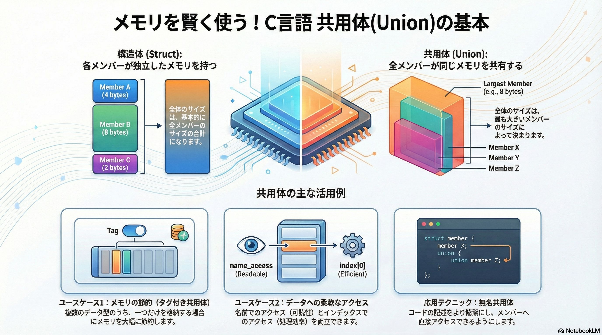
1. はじめに：共用体（Union）とは何か、なぜ重要なのか
ここでは、C言語における「共用体（Union）」という、一見単純ながらもメモリ管理とデータ表現において非常に強力なツールについて学びます。共用体をマスターすることは、メモリを効率的に利用し、柔軟なデータ構造を設計する上で不可欠なスキルです。
C言語の共用体（Union）とは、基本的に構造体（Struct）と似ていますが、決定的な違いが一つあります。それは、共用体は 複数の名前を同じ変数（メモリ領域）に割り当てる という点です。
皆さんが既に慣れ親しんでいるであろう構造体と比較してみましょう。
- 構造体（Struct）: 内部の各メンバー変数が、それぞれ自身の独立したメモリ領域を持ちます。全体のサイズは、基本的に全メンバーのサイズの合計になります。
- 共用体（Union） : 全てのメンバーが、単一のメモリ領域を共有します。そのため、一度に有効な値を保持できるメンバーは一つだけです。
この「メモリを共有する」という特性が、共用体のすべての機能と利点の源泉となります。次のセクションでは、このメモリ共有の具体的な仕組みについて、さらに詳しく掘り下げていきましょう。
2. 共用体の基本原則：メモリ共有の仕組み
共用体のメモリ管理を理解することは、C言語プログラミングにおける効率性を追求する上で重要な鍵となります。このセクションでは、共用体がどのようにしてメモリを共有し、そのサイズがどのように決定されるのかを解き明かしていきます。
2.1. 構造体（Struct）との決定的な違い
前述の通り、構造体と共用体の最も根本的な違いはメモリの割り当て方にあります。
- 構造体は、宣言された全てのメンバーを同時に格納するため、各メンバーのサイズを合計した分（※）のメモリ領域を確保します。
- 対照的に、共用体は、どのメンバーも格納できる単一の共有メモリ領域のみを確保します。これにより、複数のデータ型の中から一つだけを保持する、という状況でメモリを大幅に節約することが可能になります。
※）実際には、コンパイラがこれに余分なパディング（詰め物）を加える可能性もあります。これは、CPUがメモリに効率的にアクセスできるよう、データの開始アドレスを特定のバイト境界に揃える「アライメント」という最適化のためです。C言語初心者はこれを無視しても問題ありません。
2.2. 共用体のサイズ決定ルール
では、その共有メモリ領域のサイズはどのように決まるのでしょうか。ルールは非常にシンプルです。
共用体全体のサイズは、**「最もサイズの大きいメンバーのサイズになる」**と定められています（※）。
※）こちらも構造体と同様、「アライメント」がプラスされることもありますが、初心者の理解を妨げるだけなので、以降、ないものとして説明します。
例えば、char型（1バイト）、int型（4バイト）、double型（8バイト）のメンバーを持つ共用体があった場合、その共用体のサイズは最も大きいdouble型のサイズである8バイトとなります。このルールこそが、共用体がメモリ効率化を実現する仕組みの核心です。
これらの基本原則を念頭に置くことで、次のセクションで紹介する具体的なユースケースへの理解がより深まるはずです。
3. 共用体の実践的ユースケース
理論を理解したところで、次はその知識を実践に結びつけることが重要です。このセクションでは、共用体を「いつ」「どのように」使うべきかという問いに答える、3つの具体的なユースケースを見ていきましょう。
3.1. ユースケース1：メモリ効率の最適化（タグ付き共用体）
大量のデータを扱うプログラムでは、わずかなメモリ使用量の削減が全体のパフォーマンスに大きな影響を与えることがあります。共用体は、このような状況でメモリ効率を最適化するために役立ちます。
ここで紹介するのが「タグ付き共用体」というデザインパターンです。これは、どのデータ型が現在共用体に格納されているかを示す「タグ」となるメンバーを、構造体内に共用体と一緒に保持する手法です。
メモリ効率の悪い例（共用体を使わない場合）
struct operator_inefficient {
int type;
int intNum;
float floatNum;
double doubleNum;
};
この構造体は、intNum, floatNum, doubleNum のうち一つしか使わない場合でも、常に全メンバー分のメモリを確保してしまいます。
タグ付き共用体を使った改善例
struct operator {
int type; // どの型が有効かを示すタグ (例: 0=int, 1=float, 2=double)
// int, probably better as an enum or macro constant
union {
int intNum;
float floatNum;
double doubleNum;
} types;
};
この改善された構造体 operator のサイズは、「int 型の type メンバー」と「共用体内の最大型である double」のサイズの合計になります。これにより、使われないメンバーのためのメモリを確保する必要がなくなり、プログラム全体で大幅なメモリ節約が期待できます。なお、typeメンバーには、可読性と安全性を高めるために、enumやマクロ定数を使用することが推奨されます。
3.2. ユースケース2：データへの多様なアクセス方法の提供
一つのデータセットに対し、意味の分かりやすい「名前」によるアクセスと、ループなどで処理しやすい「インデックス」によるアクセスの両方を提供したい場合があります。共用体は、これをエレガントに実現します。
以下の Coins 共用体の例を見てみましょう。
union Coins {
struct { // 無名構造体
int quarter;
int dime;
int nickel;
int penny;
};
int coins[4];
};
この例では、無名構造体と配列が同じメモリ領域を共有しています。これにより、以下のような2通りのアクセスが可能になります。
- 名前によるアクセス: change.quarter や change.dime のように、可読性の高い名前で各データにアクセスできます。
- インデックスによるアクセス: for ループ内で change.coins[i] のように、インデックスを用いてデータに反復アクセスできます。
どちらの方法でアクセスしても、操作しているのは同じ共有メモリです。これにより、コードの可読性と処理の効率性を両立させることができます。
実際に両方のアクセス方法が機能することを示す例を見てみましょう。
// 例：インデックスによるアクセスで値を設定
union Coins change;
int values[] = {10, 5, 20, 50}; // quarters, dimes, nickels, pennies
for(int i = 0; i < 4; ++i) {
change.coins[i] = values[i];
}
// 名前によるアクセスで値を表示
printf("Quarters: %d, Dimes: %d\n", change.quarter, change.dime);
// 出力 -> Quarters: 10, Dimes: 5
これらのユースケースで登場した「無名」という概念は非常に便利です。次のセクションで、この応用テクニックについて詳しく見ていきましょう。
4. 応用テクニック：無名共用体
これまでの例で見てきたように、共用体や構造体に名前を付けない「無名」の定義は、コードをより簡潔にするための応用テクニックです。
「タグ付き共用体」の例をもう一度見てみましょう。共用体に types という名前を付けていました。
// 名前付き共用体の場合
struct operator {
int type;
union {
int intNum;
float floatNum;
double doubleNum;
} types; // "types" という名前
};
struct operator op;
op.type = 0;
op.types.intNum = 352; // "types" を経由してアクセス
ここで、共用体から名前を取り除くと、そのメンバーに直接アクセスできるようになります。
// 無名共用体の場合
struct operator {
int type;
union { // 名前がない！
int intNum;
float floatNum;
double doubleNum;
};
};
struct operator op;
op.type = 0;
op.intNum = 352; // 直接アクセスできる！
op.types.intNum という記述が op.intNum となり、より直接的でシンプルなコードになりました。これにより、コードの冗長性が減り、より直感的な記述が可能になります。
先ほどの Coins の例で見たように、このテクニックは無名構造体にも同様に適用でき、非常に柔軟なデータ構造の設計を可能にします。
それでは、ここで学んだ知識を定着させるために、演習問題に挑戦してみましょう。
5. 理解度チェック：演習問題
学習内容を確実に身につけるため、以下の演習問題に取り組んでください。理論を実際のコードに落とし込む良い練習になります。
課題: 21文字の char 配列と6つの int 配列を格納する共用体を作成してください。この共用体の int 配列メンバーに、指定された6つの整数値を初期化リストで設定します。その後、同じメモリ領域を char 配列として解釈し、その内容を「文字の連続」として、また「文字列」として出力してください。
以下のスターターコードを完成させてください。
#include <stdio.h>
/* ここに共用体を定義する */
union IntOrChar {
int ints[6];
char chars[21];
};
int main() {
// このような初期化リストは、共用体/構造体の最初のメンバー（この場合はints）に代入される！
union IntOrChar intCharacters = {{1853169737, 1936876900, 1684955508, 1768838432, 561213039, 0}};
/* テストコード */
printf("[");
// 終端のヌル文字(chars[20])は出力しない。ループは19までとし、最後の文字(chars[19])はループ後に表示する。
for(int i = 0; i < 19; ++i) {
printf("%c, ", intCharacters.chars[i]);
}
printf("%c]\n", intCharacters.chars[19]);
printf("%s\n", intCharacters.chars);
return 0;
}
期待される出力
[), B, i, n, d, n, g, s, $, a, n, d, P, , f, i, , n, s, !]
)Bindngs$and P fi ns!
6. まとめ：共用体をマスターするためのキーポイント
本研修を通じて、C言語の共用体についてその基本原則から実践的な応用までを学びました。最後に、共用体を効果的に活用するための重要なポイントを要約します。
- メモリの共有
- 共用体の最も基本的な性質であり、構造体との最大の違いです。全てのメンバーが単一のメモリ領域を共有します。
- サイズのルール
- 共用体のサイズは、最も大きいサイズのメンバーによって決まります。
- 主な用途
- タイプパニング: データの内部表現を、異なる型として解釈するために使用します。整数のバイト単位での操作などが典型例です。
- メモリ節約: 複数のデータ型のうち、いずれか一つだけを格納する状況で「タグ付き共用体」として用いることで、メモリ使用量を大幅に削減します。
- 柔軟なアクセス: 無名構造体/共用体と配列を組み合わせることで、名前による可読性の高いアクセスと、インデックスによる効率的な反復処理を両立させます。
共用体は日常的に使用するツールではないかもしれませんが、その仕組みを理解することは、C言語のメモリモデルに対する深い洞察を与えてくれます。ここで学んだ知識を武器に、メモリ効率が求められる挑戦的な課題にも自信を持って取り組んでください。
列挙型
1. はじめに：なぜ「分かりやすいコード」が重要なのか？
プロのソフトウェア開発の世界では、単に動作するコードを書くだけでなく、将来の自分や他の開発者が容易に理解し、修正できる「保守性の高いコード」を書くことが極めて重要です。優れたコードは、その場限りの成果物ではなく、長期的に価値を生み出し続ける資産となります。C言語のenum（列挙型）は、この目的を達成するための、基本的かつ非常に強力なツールの一つです。
enumの核心的な目的は、「関連する複数の整数値に、意味のある名前を付けるための機能」です。
これにより、コードの意図が明確になり、誰が読んでも理解しやすいプログラムを作成できます。
enumの真の価値を理解するためには、まずenumがない場合にどのような問題が発生するのかを知ることが重要です。次のセクションで、その具体的な問題点を見ていきましょう。
2. enumが登場する前の世界：「マジックナンバー」が引き起こす問題
コード内に直接書かれた、意味の分からない数値のことを、私たちは通称「マジックナンバー」と呼びます。これはバグの温床となり、コードの解読を著しく困難にする「技術的負債」の典型例です。
例えば、プログラムの中で信号機の色を扱っているとします。enumを使わない場合、赤を0、緑を1、青を2のように、開発者間の見えないルールだけで運用することになるかもしれません。このルールに依存した結果、開発者は次のようなコードを書かざるを得なくなります。
if (current_color == 1) {
// 緑色の時の処理
}
このコードを見ただけでは、1が何を意味するのか直感的に理解できません。 これがマジックナンバーが引き起こす問題の核心です。
この問題は、具体的に以下のようなリスクを引き起こします。
- 可読性の低下: コードの意図が不明確になります。1が「緑色」を意味することを知らない開発者は、その意味を調べるために余計な時間と労力を費やすことになります。
- バグの誘発:
current_color = 1;と書くべきところを、うっかりcurrent_color = 2;と打ち間違えてしまうかもしれません。このような単純なミスが、予期せぬ動作を引き起こす致命的なバグに繋がる可能性があります。 - 保守性の悪化: 将来、仕様変更で色の値を変える必要が出たとします（例：緑を10に変更する）。その場合、コード内に散らばるすべての1の中から、信号機の色を表すものだけを探し出して修正しなければなりません。これは非常に困難で、修正漏れのリスクが高い作業です。
では、enumはこれらの問題をいかにしてエレガントに解決するのでしょうか。次のセクションで具体的に見ていきましょう。
3. enumの基本的な使い方：マジックナンバーからの脱却
ここでは、前述したマジックナンバー問題を直接解決するenumの具体的な使用方法を学びます。enumを使うことで、コードは劇的に分かりやすくなります。
3.1. 列挙型の定義
まず、関連する定数の集まりに名前を付けた、新しいデータ型（列挙型）を定義します。enumキーワードを使い、以下のように記述します。
enum Color {
RED,
GREEN,
BLUE
};
これにより、Colorという名前の新しい型が作成されました。この型はRED, GREEN, BLUEという3つの定数を持つ集合です。
3.2. 変数の宣言と利用
次に、定義したColor型の変数を宣言し、値を使ってみましょう。
// 'Color'型の変数を宣言
enum Color current_color;
// 変数に値を代入
current_color = GREEN;
// 値を比較
if (current_color == GREEN) {
// 緑色の時の処理
}
セクション2の例 current_color == 1 と比較してみてください。このたった一つの変更が、先ほど挙げた問題をまとめて解決します。GREENという名前は自己説明的であり、可読性の低下という問題を解消します。もしGREEEENのようにタイプミスをしてもコンパイラがエラーとして検出してくれるため、1を2と打ち間違えるようなバグの誘発を防ぎます。そして、値の定義が一箇所に集約されることで、保守性の悪化も劇的に改善されるのです。
私たちがGREENという名前を使う裏側で、コンピュータはこれを整数値として扱っています。この仕組みを理解することが、enumを使いこなすための次のステップです。
4. enumの値のルール：名前と数値の対応を理解する
enumがもたらす可読性の裏には、名前（メンバー）と整数値の明確な対応ルールが存在します。この仕組みを理解することで、enumをより効果的に、そして意図通りに使いこなせるようになります。
4.1. 自動で割り当てられる値
開発者が各メンバーに値を指定しない場合、コンパイラが自動的に値を割り当てます。ルールは非常にシンプルです。
- 最初のメンバーには 0 が割り当てられます。
- 以降のメンバーには、直前のメンバーの値に1を加えた値が自動的に割り当てられます。
先ほどのColor型の例では、各メンバーは内部的に以下の整数値を持っています。
| メンバー | 値（自動割り当て） |
|---|---|
| RED | 0 |
| GREEN | 1 |
| BLUE | 2 |
4.2. 意図的に値を指定する場合
特定のメンバーに、意図した整数値を明示的に割り当てることも可能です。その場合、ルールは以下のようになります。
- 指定された値から、以降のメンバーは自動的に 1 ずつ 増えていきます。
例えば、エラーコードを定義する際に、特定の値から始めたい場合に便利です。これは、enumの値を外部システムの仕様、ハードウェアの規格、あるいはネットワークプロトコルで定められた特定のコードに対応させる必要がある場合に特に役立ちます。
enum ErrorCode {
NO_ERROR = 0,
FILE_NOT_FOUND = 101, // 101を明示的に指定
ACCESS_DENIED, // 自動的に 102 になる
UNKNOWN_ERROR // 自動的に 103 になる
};
これでenumの基本的な仕組みを理解できました。次に、よりコードを簡潔にするための実用的なテクニックを紹介します。
5. 実用的なテクニック：typedefとの組み合わせ
enumの宣言をより簡潔にし、コードの見た目をすっきりとさせるためのC言語の標準的なテクニックとして、typedefとの組み合わせがあります。これは、よりプロフェッショナルな書き方へのステップとして覚えておくと非常に便利です。
typedefを使うことで、既存の型に新しい名前（別名）を付けることができます。enumと組み合わせることで、変数を宣言するたびにenumキーワードを書く手間を省けます。
以下のコードは、typedefを使用する前後で変数宣言の記述がどのように変わるかを示しています。
// typedefを使ったenumの定義
typedef enum {
RED,
GREEN,
BLUE
} Color; // 'enum {...}' という型に 'Color' という別名を付ける
// --- 変数宣言の比較 ---
// typedefなしの場合
enum Color my_color_1;
// typedefありの場合
Color my_color_2;
typedefを使うことでenumキーワードを省略でき、まるでC言語に元から組み込まれている型（intやcharなど）と同じように、より直感的に型名を使えるようになります。新しい型名であるColorが、閉じ括弧の後の、文の最後に置かれている点に注目してください。これがtypedefをenumやstructと共に使う際の標準的なパターンです。
6. まとめ：優れたコードは未来への投資である
今回の研修では、C言語のenumについて学びました。enumのような基本的な機能を正しく、そして効果的に使うことは、単なるコーディングテクニックではありません。それは、将来の自分やチームメイトの生産性を高めるための「未来への投資」です。
enumを使用する核心的なメリットを、最後にもう一度確認しましょう。
- 可読性の向上: enumは1や2といった無機質な整数値にGREENやBLUEといった意味のある名前を与えます。これにより、コードの意図が誰にとっても明確になります。
- 保守性の向上: 値の定義が一箇所にまとまっているため、仕様変更時もenumの定義箇所を修正するだけで対応が完了します。コード全体に散らばった数値を一つひとつ探す必要がなくなり、修正漏れのリスクを劇的に低減します。
- 安全性の向上: 意味のない数値は（1を2と）打ち間違えても警告は出ません。対照的に、enumの名前（例：GREENをGREEEEN）をタイプミスすれば、コンパイラが即座にエラーを検出し、単純なミスがバグになるのを防ぎます。
初心者の皆さん、enumのような小さな工夫を一つひとつ積み重ねることが、信頼性が高く、プロフェッショナルなコードを書くための確かな第一歩です。これからも、分かりやすいコードを常に意識して開発に取り組んでください。
再帰
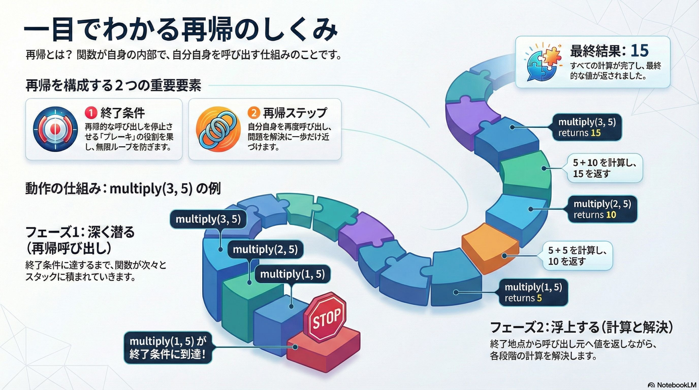
1. はじめに：再帰的思考への第一歩
本章は、プログラム初心者の皆さんに、重要なプログラミング概念である「再帰（Recursion）」の基礎を解説することを目的としています。再帰は単なるテクニックではなく、複雑な問題をより小さな、自己相似的な問題に分割して考える一種の「思考法」です。
再帰の理解が不可欠なのは、それが多くの高度な課題に対するエレガントな解決策を提供するからです。例えば、連結リストや二分木といったデータ構造の探索、あるいはチェスのようなゲームで無数のシナリオを探索する際など、再帰は反復処理では複雑になりがちなロジックを、驚くほどシンプルかつ直感的に記述することを可能にします。このガイドを通じて、再帰の基本原理から具体的なコード実装までを段階的に学び、その強力な問題解決能力を身につけていきましょう。
2. 再帰（Recursion）の基本概念
このセクションでは、再帰の理論的な基盤を固めます。再帰とは何か、どのような利点と注意点があり、どのような場面で活用されるのかを明確に理解することが、効果的な実装への第一歩となります。
2.1. 再帰とは何か？
プログラム言語における再帰とは、関数が自身の内部で自分自身を呼び出すことを指します。これにより、同じロジックを異なるデータに対して繰り返し適用することが可能になります。
「再帰」のイメージをつかむための、参考として、同じロジックを図形に繰り返し適用する例を、Wikipediaのページを参考にして、見てみましょう。
下の図は、「シェルピンスキーのギャスケット」と呼ばれている図形を作る過程です（実際には無限回の繰り返しが必要なため、近似的な作画です）。

(Twisp - 投稿者自身による著作物, パブリック・ドメイン, https://commons.wikimedia.org/w/index.php?curid=3402690による)
- 正三角形から始めます
- それを大きさも形も同じ4つの正三角形に分割し、中央の三角形を取り除きます
- その結果出来た小さな三角形すべてに対して、手順2を無限に繰り返します
引用元:
- https://en.wikipedia.org/wiki/Fractal_dimension
- https://en.wikipedia.org/wiki/Sierpi%C5%84ski_triangle
このように ロジックをある対象に適用し、その結果に対して、さらに同じロジックを適用する の繰り返しが、 再帰です。
ただし、上のような自己相似的な図形（フラクタル図形と呼ばれます）と、C言語の再帰関数には、決定的な違いがあります。それは、フラクタル図形を形成するための繰り返しが理論上は無限に行われるのに対し、再帰関数には必ず終了条件があること です。フラクタル図形が片道切符だとしたら、再帰関数は目的地までの往復切符なのです。
2.2. 再帰の利点と注意点
次に、利点と注意点をまとめましょう。再帰は強力なツールですが、その特性を理解して適切に使う必要があります。その二面性を以下の表にまとめます。
| 利点 (Advantage) | 注意点 (Caution) |
|---|---|
| 非常にすっきりと洗練された、直感的に理解しやすいコードを記述できる場合があります。 | 再帰が深くなりすぎた場合に、非常に大量のメモリが使用される可能性があります。 |
| 解説： 問題の構造とコードの構造が一致するため、ロジックが明確になり、可読性が向上します。 | 解説： 関数呼び出しごとにメモリ（スタック領域）が消費されるため、終了条件が不適切だとメモリを使い果たし、プログラムがクラッシュする原因となります。 |
2.3. 主な使用例
再帰は特に以下のようなシナリオでその真価を発揮します。
1. 連結リストや二分木などの再帰的なデータ構造の探索
連結リストや二分木といったデータ構造（これらについては、次章と次次章で学びます）は、部分が全体と同じ構造を持つ「自己相似的」な性質を持っています。そのため、構造を辿る処理を再帰で記述すると非常に自然で簡潔になります。
2. チェスのようなゲームにおける可能性のあるシナリオの探索
ある局面から次の一手を考え、その手によって生じる新たな局面でまた次の一手を考える、というプロセスは本質的に再帰的です。これにより、膨大な可能性のツリーを効率的に探索できます。
再帰が「何であるか」を理解したところで、次にそれが「どのように機能するのか」という仕組みを詳しく見ていきましょう。
3. 再帰を構成する2つの重要要素
全ての再帰関数は、安全かつ正しく機能するために不可欠な2つの構成要素から成り立っています。それが
- 再帰ステップ: 再帰的に関数（自分自身）を呼び出す。
- 終了条件: これ以上、自分自身を呼び出すことなく、値を返す（折り返し地点）
です。これらの要素を理解することが、再帰をマスターする鍵となります。
3.1. 再帰ステップ（Recursive Step）
再帰ステップは、関数が自分自身を再度呼び出す部分です。ここでの最も重要な原則は、再帰呼び出しを行うたびに、必ず問題が終了条件に一歩近づくように状態を変化させなければならないという点です。例えば、処理対象の数値を減らしたり、データ構造の次の要素に進んだりすることで、最終的に終了条件に到達するように設計します。
3.2. 終了条件（Terminating Case）
終了条件は、再帰がいつ終了するかを定義する条件です。この条件が満たされたとき、関数は自分自身をそれ以上呼び出すことなく、値を返して呼び出し元に戻ります。これは、無限に関数を呼び出し続けてメモリを枯渇させてしまう「無限再帰」を防ぐための、極めて重要な安全装置として機能します。
これら2つの要素が連携することで、複雑な問題を段階的に単純化し、最終的に解にたどり着くという、安全で効果的な再帰処理が実現されるのです。
4. コードで学ぶ再帰：乗算関数の徹底解説
これまでに学んだ理論的知識を、具体的なC言語のコードに適用してみましょう。ここでは、その動作を徹底的に分析するために、再帰的な加算を用いて乗算を実現するmultiply関数を取り上げます。この関数は、例えば $5 \times 3$ をあたかも $5 + 5 + 5$ のように計算します。
#include <stdio.h>
unsigned int multiply(unsigned int x, unsigned int y) {
/* 終了条件 */
if (x == 1) {
return y;
/* 再帰ステップ */
} else if (x > 1) {
return y + multiply(x-1, y);
}
}
int main() {
printf("3 times 5 is %d", multiply(3, 5));
return 0;
}
このコードで multiply(3, 5) が呼び出された際の処理の流れを、呼び出しスタックの動きに注目して見ていきましょう。
【フェーズ1：再帰呼び出し（スタックに積まれる処理）】
- multiply(3, 5)が呼び出し: x は 3。x > 1 の条件が真となり、5 + multiply(2, 5) の結果を返すために待機します。multiply(2, 5) の計算が終わるまで、この処理は中断されます。
- multiply(2, 5)が呼び出し: x は 2。x > 1 の条件が真となり、5 + multiply(1, 5) の結果を返すために待機します。
- multiply(1, 5)が呼び出し: x は 1。ここで遂に x == 1 の 終了条件 が真となります。この関数はこれ以上自分自身を呼び出さず、値 5 を即座に返します。
【フェーズ2：スタックの巻き戻しと計算（解決）】
- multiply(1, 5) が返した 5 は、ステップ2で待機していた multiply(2, 5) の計算 5 + multiply(1, 5) に渡されます。計算は 5 + 5 となり、結果の 10 が返されます。
- multiply(2, 5) が返した 10 は、ステップ1で待機していた multiply(3, 5) の計算 5 + multiply(2, 5) に渡されます。計算は 5 + 10 となり、最終結果の 15 が main 関数に返されます。
このように、再帰はまず終了条件に達するまで深く潜り（フェーズ1）、そこから各階層の計算を解決しながら浮上してくる（フェーズ2）イメージです。if (x == 1) がこの深い潜水を止める 終了条件 であり、return y + multiply(x-1, y); がより深く潜るための 再帰ステップ となっています。また、xが0の場合のシナリオも考慮されており、堅牢な関数となっています。
5. 演習：階乗（Factorial）関数の実装
これまでに学んだ知識を応用して、ご自身の力で再帰関数を実装してみましょう。この演習は、理解を確実なものにするための実践的なステップです。
要件： 再帰的な乗算によって階乗を計算する factorial() という名前の新しい関数を定義してください。
階乗の計算には、以下の重要なルールがあります。
- 階乗の計算例： 5! = 5 x 4 x 3 x 2 x 1
- 規約による終了条件： 0! = 1
作成した関数をテストするために、以下のmain関数を使用してください。
#include <stdio.h>
/*
* factorial()関数の定義をここに記述します。
* もしmain()より後に関数を定義する場合、コンパイラがfactorial()を知らないため、
* main()の前に関数プロトタイプ宣言 'int factorial(int);' が必要になることを忘れないでください。
*/
int main() {
/* testing code */
printf("0! = %i\n", factorial(0));
printf("1! = %i\n", factorial(1));
printf("3! = %i\n", factorial(3));
printf("5! = %i\n", factorial(5));
}
この演習を通して、再帰が「終了条件」と「再帰ステップ」という2つの単純な要素から構成される、いかに強力な問題解決手法であるかを再確認できるでしょう。
連結リスト
イントロダクション
コンピュータサイエンスの世界において、連結リストはポインタを駆使する最も基本的かつ重要な動的データ構造の一つです。データを効率的に管理する方法を学ぶことは、優れたソフトウェアエンジニアになるための第一歩です。この資料を通じて、連結リストの概念を深く理解し、C言語での実装スキルを習得することで、皆さんが将来より複雑な課題に取り組むための強固な基盤を築くことを目的としています。
1. 連結リストとは何か？
概念定義
連結リストとは、動的に確保されたノード（node）と呼ばれる要素の集合体です。各ノードは「データ」と「次のノードを指すポインタ」を保持しており、このポインタを介してノード同士が鎖のように連結されることで、一つのリスト構造を形成します。この構造により、プログラムの実行中にリストのサイズを柔軟に変更することが可能です。
配列との比較分析
連結リストは、しばしば配列と比較されます。どちらもデータを連続的に格納する構造ですが、その内部的な仕組みと特性には大きな違いがあります。
| 比較項目 | 連結リスト | 配列 |
|---|---|---|
| サイズ | 動的にサイズを変更可能。初期サイズを定義する必要がない。 | 固定サイズ。最初にサイズを定義する必要がある。 |
| 要素の追加/削除 | リストの途中での追加・削除が効率的。 | 途中の要素を追加・削除するには、後続の要素を全てシフトさせる必要があり、コストが高い。 |
| 要素へのアクセス | 先頭から順に辿る必要がある（シーケンシャルアクセス）。n番目の要素へのアクセスは非効率。 | インデックスを指定して直接アクセスできる（ランダムアクセス）。 |
| メモリオーバーヘッド | 各ノードがデータに加えて次へのポインタを保持するため、オーバーヘッドが大きい。 | データのみを格納するため、メモリ効率が良い。 |
| 実装の複雑さ | ポインタと動的メモリ確保が必要なため、実装が複雑になり、メモリリーク等のリスクがある。 | 実装が比較的容易。 |
前提知識
この章の説明を完全に理解するためには、以下のC言語の概念に精通している必要があります。もし不安な点があれば、先に復習しておくことを強く推奨します。
- ポインタ: メモリアドレスを扱うための基本的な概念と操作。
- 動的メモリ確保: malloc や free を用いた、プログラム実行中のメモリ確保・解放。
- 構造体: 関連する複数のデータを一つのまとまりとして扱うための仕組み。
連結リストの基本的な概念と、配列との違いを理解したところで、次のセクションではその具体的な構造についてさらに詳しく見ていきましょう。
2. 連結リストの構造
このセクションでは、連結リストを構成する基本的な要素である「ノード」と、リスト全体を管理する「ヘッドポインタ」について、C言語での実装を交えながら理解を深めていきます。
ノード (Node)
連結リストの最小構成単位がノードです。各ノードは、大きく分けて2つの部分から構成されます。
- データ (val): ノードが保持する値そのものです。整数、文字、あるいはより複雑な構造体など、様々な型のデータを格納できます。
- 次へのポインタ (next): リスト内の次のノードを指し示すポインタです。このポインタによってノード同士が連結されます。リストの最後のノードの場合、このポインタは NULL を指します。
テキストで図示すると、以下のようなイメージになります。
ノード1 ノード2
------------------------ ------------------------
| データ | next |---->| データ | next |----> (次のノードへ)
------------------------ ------------------------
nextはノード2のポインタ nextは次のノードのポインタ
(ノード2の先頭アドレス) (次のノードの先頭アドレス)
C言語でのノード定義
C言語では、構造体を用いてノードを定義します。特筆すべきは、構造体自身の型へのポインタをメンバとして持つ「自己参照構造体」として定義できる点です。
typedef struct node {
int val;
struct node * next;
} node_t;
この定義により、node_t という型で連結リストのノードを扱うことができるようになります。
ヘッドポインタ (Head Pointer)
ヘッドポインタ（head）は、連結リストの最初のノードを指す特別なポインタです。このポインタがリスト全体への唯一のエントリーポイントとなるため、極めて重要です。リストを辿ったり、新しいノードを追加したりする操作は、すべてこの head ポインタから始まります。
テキストで図示すると、以下のようなイメージになります。
ヘッドポインタ ノード1
-------------- ---------------------------
| head |-------->| データ | next |-----> (ノード2へ)
-------------- ---------------------------
headはノード1のポインタ nextはノード2のポインタ
(ノード1の先頭アドレス) (ノード2の先頭アドレス)
もし head ポインタが NULL を指している場合、それはリストにノードが一つも存在しない、つまり「空のリスト」であることを意味します。
最初のノードの作成
実際にコードを見て、最初のノードを作成するプロセスを確認しましょう。
node_t * head = NULL;
head = (node_t *) malloc(sizeof(node_t));
// mallocが成功したか必ずチェックする
if (head == NULL) {
// メモリ確保失敗時のエラー処理
return 1;
}
head->val = 1;
head->next = NULL;
各行が何をしているのか、順を追って解説します。
- node_t * head = NULL;
- head ポインタを宣言し、リストが空であることを示す NULL で初期化します。
- head = (node_t *) malloc(sizeof(node_t));
- malloc 関数を呼び出し、node_t 構造体1つ分のメモリ領域を動的に確保します。確保されたメモリの先頭アドレスが head ポインタに代入されます。
- if (head == NULL)
- malloc はメモリ確保に失敗すると NULL を返すため、必ずこのチェックを行います。これを怠ると、確保されていないメモリにアクセスしようとしてプログラムがクラッシュする原因となります。
- head->val = 1;
- 確保したメモリ領域にアクセスし、val メンバに値 1 を設定します。
headはnode1へのポインタなので、head->valはnode1のデータを指します。
- head->next = NULL;
- このノードがリストの唯一のノード（つまり末尾のノード）であるため、next ポインタに NULL を設定します。
これで、連結リストの静的な構造と最初のノードを作成する方法を理解できました。次章では、このリストを動的に操作するための具体的なアルゴリズムとコードについて学んでいきます。
3. 連結リストの基本操作
このセクションでは、連結リストを実用的に利用するために不可欠な、データの探索、追加、削除、そしてメモリ管理といった基本的な操作方法を、具体的なC言語のコード例と共に学んでいきます。堅牢なコードを書くためには、様々な「エッジケース」（例：空のリストに対する操作）を正しく処理することが重要です。
3.1 リストの探索（イテレーション）
リストに格納された全てのデータを順に処理するためには、リストを先頭から末尾まで辿る（イテレーションする）必要があります。
アルゴリズム
- 作業用のポインタ変数（currentなど）を用意し、head ポインタで初期化します。
- current ポインタが NULL でない間、以下の処理を繰り返します。 a. current が指すノードに対して処理（値の表示など）を行います。 b. current ポインタを、current->next が指す次のノードへ進めます。
- current ポインタが NULL になったら、リストの末尾に到達したことを意味し、ループを終了します。
コード例
以下は、リストの全てのノードの値を表示する print_list 関数です。
void print_list(node_t * head) {
node_t * current = head;
while (current != NULL) {
printf("%d -> ", current->val);
current = current->next;
}
printf("NULL\n");
}
この関数は、current ポインタを使ってリストの先頭から一つずつノードを辿り、val を出力し、next ポインタで次のノードへ移動する、という処理を current が NULL になるまで繰り返します。
エッジケースの考察: もしこの関数に NULL の head ポインタ（空のリスト）が渡された場合、while ループの条件 (current != NULL) が最初から偽となり、ループは一度も実行されません。結果として安全に “NULL” とだけ表示して終了するため、このコードは空のリストを正しく扱えています。
3.2 要素の追加（挿入）
3.2.1 リストの末尾への追加
リストの最後に新しい要素を追加する操作です。
アルゴリズム
- 新しいノードのためのメモリを malloc で確保し、値と next ポインタ (NULL) を設定します。
- エッジケース: リストが空（head が NULL）の場合、新しいノードをリストの先頭にします。
- リストが空でない場合、作業用の current ポインタでリストの最後のノードまで移動します。
- 最後のノードの next ポインタが、新しいノードを指すように設定します。
コード例
この操作は、リストが空の場合に head ポインタ自体を変更する必要があるため、要素を追加する関数には、headポインタを 参照渡し しなければなりません。そのため引数にはダブルポインタ (node_t **head) を取ります。
void append_node(node_t **head, int val) {
node_t *new_node = malloc(sizeof(node_t));
if (new_node == NULL) {
// メモリ確保失敗
return;
}
new_node->val = val;
new_node->next = NULL;
// リストが空の場合、新しいノードをheadにする
if (*head == NULL) {
*head = new_node;
return;
}
node_t *current = *head;
// 最後のノードまで移動
while (current->next != NULL) {
current = current->next;
}
// 最後のノードの次に新しいノードを連結
current->next = new_node;
}
【重要】ポインタへのポインタ (ダブルポインタ) の役割
append_node 関数の引数が node_t ** head となっている点に、あらためて注目してみましょう。これは「node_t 型へのポインタ」へのポインタ、つまりダブルポインタです。
なぜダブルポインタが必要なのでしょうか？ 第2部の第3章『引数の参照渡し』で学んだことを思い出してください。C言語では、関数に渡された引数はコピー（値渡し）されます。もし引数が node_t * head であった場合、関数内で head の値を変更しても、その変更は関数内でのみ有効となり、呼び出し元の head ポインタは変わりません。 しかし、push 操作ではリストの先頭が新しいノードに変わるため、呼び出し元の head ポインタそのものを書き換える必要があります。これを実現するために、head ポインタのアドレスを関数に渡し、関数内から間接的に呼び出し元の head ポインタの値を変更するのです。
3.2.2 リストの先頭への追加 (Push)
リストの先頭に新しい要素を追加する操作です。スタック構造における push 操作に相当します。
アルゴリズム
- 新しいノードを作成し、値を設定します。
- 新しいノードの next ポインタが、現在のリストの先頭 (head) を指すようにします。
- head ポインタ自体を、新しく作成したノードを指すように更新します。
コード例
void push(node_t ** head, int val) {
node_t * new_node;
new_node = (node_t *) malloc(sizeof(node_t));
// mallocの失敗をチェック
if (new_node == NULL) {
return;
}
new_node->val = val;
new_node->next = *head;
*head = new_node;
}
3.3 要素の削除
3.3.1 リストの先頭から削除 (Pop)
リストの先頭要素を削除する操作です。スタック構造における pop 操作に相当します。
アルゴリズム
- エッジケース: リストが空の場合は何もせず、エラーを示す値を返します。
- head が指す次のノード（2番目のノード）のアドレスを一時的なポインタに保存します。
- 現在の head が指す先頭ノードのメモリを free() で解放します。
- head ポインタを、ステップ2で保存しておいた2番目のノードを指すように更新します。
コード例
int pop(node_t ** head) {
int retval = -1;
node_t * next_node = NULL;
// エッジケース: 空のリスト
if (*head == NULL) {
return -1;
}
next_node = (*head)->next;
retval = (*head)->val;
free(*head);
*head = next_node;
return retval;
}
このコードは、*head == NULL をチェックすることで、空のリストに対して安全に動作します。これは防御的プログラミングの良い実践例です。
3.3.2 リストの末尾から削除
アルゴリズム
リストの末尾を削除するには、末尾から2番目のノードを見つける必要があります。なぜなら、最後のノードを削除した後、その一つ手前のノードの next ポインタを NULL に更新する必要があるからです。
コード例
この操作も、リストに要素が1つしかない場合に head ポインタ自体を NULL に変更する必要があるため、ダブルポインタを引数に取ります。
int remove_last(node_t ** head) {
int retval = -1;
// エッジケース: リストが空
if (*head == NULL) {
return -1;
}
// エッジケース: リストに要素が1つだけ
if ((*head)->next == NULL) {
retval = (*head)->val;
free(*head);
*head = NULL; // 呼び出し元のheadをNULLに更新
return retval;
}
// 末尾から2番目のノードまで移動
node_t * current = *head;
while (current->next->next != NULL) {
current = current->next;
}
// current は末尾から2番目のノードを指している
retval = current->next->val;
free(current->next);
current->next = NULL;
return retval;
}
以前の実装では、要素が1つのリストを削除すると、呼び出し元の head は解放済みのメモリを指し示す「ダングリングポインタ」となり、非常に危険でした。ダブルポインタを使うことで、*head = NULL; と安全にリストを空にすることができます。
3.3.3 指定したインデックスの要素を削除
アルゴリズム
- 削除したいノードの一つ手前のノードまでイテレーションで移動します。
- 削除対象のノード（手前のノードの next が指すノード）を一時的なポインタに保存します。
- 手前のノードの next ポインタを、削除対象ノードの next ポインタが指していたノードに繋ぎ変えます。これにより、リストから削除対象ノードがバイパスされます。
- ステップ2で保存した一時ポインタを使い、削除対象ノードのメモリを free() で解放します。
コード例
int remove_by_index(node_t ** head, int n) {
// エッジケース: 先頭(インデックス0)を削除する場合
if (n == 0) {
return pop(head);
}
node_t * current = *head;
node_t * temp_node = NULL;
int i = 0;
int retval = -1;
// 削除対象の「一つ手前」のノードまで移動
for (i = 0; i < n - 1; i++) {
if (current->next == NULL) {
return -1; // インデックスが範囲外
}
current = current->next;
}
// 削除対象のノードが存在しない場合 (n-1番目はあるがn番目はない)
if (current->next == NULL) {
return -1;
}
temp_node = current->next;
retval = temp_node->val;
current->next = temp_node->next; // リンクの繋ぎ変え
free(temp_node); // メモリ解放
return retval;
}
for ループが n-1 回実行される点に注目してください。これは、n 番目のノードを削除するために、その一つ手前 (n-1 番目) のノードの next ポインタを書き換える必要があるためです。アルゴリズムの目的は、n 番目のノードではなく、その親となるノードを見つけることなのです。
3.4 リスト全体の解放 (メモリ管理)
動的に確保したメモリは、使い終わったら必ず解放しなければなりません。これを怠るとメモリリークが発生し、プログラムの安定性を損ないます。連結リスト全体を解放する関数を作成しましょう。
アルゴリズム
- 作業用の current ポインタを head に設定します。
- リストの末尾に達するまでループします。
- ループ内で、現在のノードを free する前に、次のノードへのポインタを一時変数に保存します。
- 一時変数を使って、次のノードへ移動します。
- これを繰り返すことで、安全に全てのノードを解放できます。
コード例
void free_list(node_t *head) {
node_t *current = head;
node_t *next_node;
while (current != NULL) {
next_node = current->next; // 次のノードを保存
free(current); // 現在のノードを解放
current = next_node; // 次のノードへ移動
}
}
連結リストの主要な操作とメモリ管理を学びました。次章では、これらの知識を応用する実践的な演習に取り組み、理解を確実なものにしましょう。
4. 実践演習
理論を学ぶだけでなく、実際に手を動かしてコードを書くことは、スキルを定着させる上で非常に重要です。この演習では、これまで学んだ知識を総動員して、連結リストの操作関数を一つ実装していただきます。
課題
リストの中から、指定された値 (val) を持つ最初のノードを削除する remove_by_value 関数を実装してください。
テンプレートコード
以下のテンプレートコードは、これまで作成した堅牢な関数 (push, print_list, pop) を使ってテストリストを構築します。/* TODO: … */ の部分を完成させてください。
#include <stdio.h>
#include <stdlib.h>
typedef struct node {
int val;
struct node * next;
} node_t;
void print_list(node_t * head) {
node_t * current = head;
while (current != NULL) {
printf("%d -> ", current->val);
current = current->next;
}
printf("NULL\n");
}
void push(node_t ** head, int val) {
node_t * new_node = (node_t *) malloc(sizeof(node_t));
if (new_node == NULL) return;
new_node->val = val;
new_node->next = *head;
*head = new_node;
}
int pop(node_t ** head) {
int retval = -1;
node_t * next_node = NULL;
if (*head == NULL) return -1;
next_node = (*head)->next;
retval = (*head)->val;
free(*head);
*head = next_node;
return retval;
}
void free_list(node_t *head) {
node_t *current = head;
node_t *next_node;
while (current != NULL) {
next_node = current->next;
free(current);
current = next_node;
}
}
int remove_by_value(node_t ** head, int val) {
/* TODO: ここにコードを実装してください */
/* ヒント: 削除対象のノードとその一つ前のノードを追跡する必要があります */
/* ヒント: 削除対象が先頭のノードである場合の処理を忘れないように */
return -1; // 適切な戻り値を返すように修正してください
}
int main() {
node_t * test_list = NULL;
// テストリストを作成: 4 -> 3 -> 2 -> 1 -> NULL
push(&test_list, 1);
push(&test_list, 2);
push(&test_list, 3);
push(&test_list, 4);
printf("Original list:\n");
print_list(test_list);
// 値が3のノードを削除
remove_by_value(&test_list, 3);
printf("\nList after removing 3:\n");
print_list(test_list);
// メモリを解放
free_list(test_list);
return 0;
}
ヒント
- remove_by_index の実装が大変参考になります。同様に、削除対象の一つ手前のノードを見つける必要があります。
- ループを回してノードを辿る際の終了条件は、インデックスのカウントではなく、ノードが持つ値 (val) の比較になります。
- 削除対象がリストの先頭にある場合の処理を忘れないようにしましょう。pop 関数が利用できるかもしれません。
- リスト内に指定された値が存在しなかった場合の処理も考慮してください。
5. まとめと次のステップ
このトレーニングを通じて、C言語における連結リストの基本を学んできました。最後に、本日の学習内容を振り返り、今後のスキルアップに向けた道筋を示します。
重要点の要約
- 連結リストの概念: 連結リストは、ノードがポインタによって連結された動的なデータ構造であり、配列と比較して要素の挿入・削除に強いという利点があります。
- 基本構造: リストは「データ (val)」と「次へのポインタ (next)」を持つノードから構成され、ヘッドポインタ (head) がリスト全体への入り口となります。
- 基本操作: 以下の基本的な操作のアルゴリズムと、エッジケースを考慮した堅牢なC言語による実装方法を学びました。
- 探索: リストの先頭から末尾までノードを順に辿る。
- 追加: リストの先頭または末尾に新しいノードを挿入する。
- 削除: リストの先頭、末尾、または指定した条件（インデックスや値）に合致するノードを削除する。
- メモリ管理: 使用後のリスト全体のメモリを正しく解放する。
応用例
連結リストは、より高度なデータ構造を実装するための基礎となります。特に、以下のようなデータ構造は連結リストの応用例として最適です。
- スタック (Stack): 後入れ先出し (LIFO) のデータ構造。リストの先頭への追加 (push) と先頭からの削除 (pop) のみを行うことで効率的に実装できます。
- キュー (Queue): 先入れ先出し (FIFO) のデータ構造。リストの末尾への追加と、先頭からの削除を組み合わせることで実装できます。
締め括り
本日学んだ連結リストの知識は、皆さんのエンジニアとしてのキャリアにおける重要な礎となります。データがメモリ上でどのように表現され、操作されるのかを深く理解することは、パフォーマンスの高い、安定したソフトウェアを開発する上で不可欠です。
この基礎を土台として、今後は二分木 (Binary Tree) のような、さらに高度なデータ構造の学習へと進んでいくことを期待しています。挑戦を続け、学び続けることで、皆さんが一流のエンジニアへと成長していくことを心から応援しています。トレーニングお疲れ様でした。
二分木の基礎
1. はじめに：なぜ二分木を学ぶのか
この章では、コンピュータサイエンスの分野で極めて重要なデータ構造である「二分木」について学びます。二分木は、効率的なデータの検索、ソート、階層構造の表現といった、私たちが日々直面する基本的な課題を解決するための強力なツールです。一見すると複雑に思えるかもしれませんが、その基本的な原理を理解することで、より高度なアルゴリズムやデータ構造への扉が開かれます。
この章を通じて、以下の主要な概念を習得します。
- 二分木の定義: 二分木とは何か、その基本的な構成要素と特性を学びます。
- 探索アルゴリズム: 木構造に格納されたデータにアクセスするための主要な手法である「深さ優先探索」と「幅優先探索」を理解します。
- C言語による実装: 概念的な知識を、C言語のコードを通して具体的な形にする方法を分析します。
それではまず、二分木を構成する基本的な要素と用語の理解から始めましょう。
2. 二分木の基本概念
このセクションでは、二分木を理解する上で不可欠な基本的な用語とその特性について解説します。これらの概念は、木構造に対する挿入、削除、探索といった、より高度な操作を学ぶ上での確固たる基盤となります。
以下に、主要な用語を解説します。
-
二分木 (Binary Tree) 各ノードが最大で2つの子（左の子と右の子）しか持たない木構造のデータ構造です。このシンプルな制約が、効率的なアルゴリズムの設計を可能にします。
g s 9 / \ / \ / \ b m f u 5 13 / \ / \ / \ c d t y 11 15二分木は、二分探索木やバイナリヒープといった、より特殊化されたデータ構造を実装するための基礎となります。これらは、データの効率的な検索やソート処理に広く利用されています。
-
平衡木 (Balanced Tree) 木のすべてのノードにおいて、そのノードを根とする左の部分木と右の部分木の深さ（高さ）の差が1以下である木を指します。
平均木 平均木ではない g s / \ / \ b m f u / \ / \ c d t y / \ x r -
深さ/高さ (Depth/Height) 木の根（ルート）から特定のノードまたは葉（リーフ）までの距離を示す指標です。根の深さを0とし、階層が下がるごとに1ずつ増加します。木のノード数を n とした場合、平衡木の深さは log2(n) の整数部分で近似でき、これが探索効率に大きく関わってきます。
深さ/高さ --- g 0 / \ --- b m 1 / \ --- c d 2 ---
平衡木の重要性
平衡木が特に重要視されるのは、その深さ（高さ）が予測可能になるためです。データが偏って挿入されると、木は線形リストのような不均衡な形状になり、探索効率が大幅に低下します。一方、平衡木は深さが log2(n) 程度に保たれるため、探索、挿入、削除といった操作の計算量を効率的に維持することができます。
基本的な概念を理解したところで、次はこれらの木構造に格納されたデータをどのように辿っていくか、すなわち探索アルゴリズムについて掘り下げていきましょう。
3. 木の探索（トラバーサル）アルゴリズム
木構造に格納されたデータにアクセスするためには、すべてのノードを体系的に訪問する手順が必要です。この手順を「探索（トラバーサル）」と呼びます。トラバーサルは、単にデータを見つけるだけでなく、特定の順序で処理を行うためにも不可欠な戦略です。
探索には主に2つの戦略があります。
| 戦略名 | 説明 |
|---|---|
| 深さ優先探索 (DFS) | 根から始まり、各分岐を可能な限り深く探索してから、次の分岐に移る（バックトラックする）アルゴリズム。 |
| 幅優先探索 (BFS) | あるレベル（階層）の全ノードを訪れてから、次のより低いレベルへ進むアルゴリズム（レベル順探索）。 |
特に深さ優先探索（DFS）は、実装の容易さから広く使われており、ノードを訪問するタイミングによって3つの主要な種類に分類されます。
- 行きがけ順 (Pre-order) ノードを最初に 訪問 (visit) し、次に左の子、最後に右の子を辿ります。 (訪問 -> 左 -> 右)
- 通りがけ順 (In-order) 最初に左の子を辿り、次にノードを 訪問 (visit) し、最後に右の子を辿ります。 (左 -> 訪問 -> 右)
- 帰りがけ順 (Post-order) 最初に左の子、次に右の子を辿り、最後にノードを 訪問 (visit) します。 (左 -> 右 -> 訪問)
どの探索方法を選択するかによって、ノードが処理される順序は全く異なります。それでは次のセクションで、これらのアルゴリズムがC言語でどのように実装されるのか、具体的なコードを見ていきましょう。
4. C言語による実装の分析
ここからは、これまでに学んだ理論的な概念が、実際のC言語のコードでどのように表現され、機能するのかを分析します。コードを読み解くことで、抽象的なデータ構造が具体的なロジックに落ちていく過程を理解することができます。
4.1. ノードのデータ構造 (struct node)
二分木を構成する基本単位である「ノード」は、C言語の構造体 (struct) を用いて表現するのが一般的です。各ノードは、自身の値、そして左と右の子ノードへのポインタを保持します。
typedef struct node {
int val;
struct node * left;
struct node * right;
} node_t;
この node_t 構造体は、val という整数型の値を格納するメンバーと、自身と同じ node_t 型へのポインタである left と right を持ちます。これにより、各ノードが他の2つのノードを指し示す、連鎖的な構造が実現されます。
4.2. 挿入ロジック (insert関数)
次に、木に新しいデータを追加する insert 関数のロジックを見てみましょう。この関数は、再帰を用いて適切な挿入位置を探します。
この実装は、大小関係に基づいてノードを配置する順序木を生成します。ただし、挿入されるデータの順序によっては木が不均衡になる可能性があり、必ずしも平衡木になるわけではない点に注意してください。
void insert(node_t * tree, int val) {
if (tree->val == 0) {
/* insert on current (empty) position */
tree->val = val;
} else {
if (val < tree->val) {
/* insert left */
if (tree->left != NULL) {
insert(tree->left, val);
} else {
tree->left = (node_t *) malloc(sizeof(node_t));
tree->left->val = val;
tree->left->left = NULL;
tree->left->right = NULL;
}
} else {
if (val >= tree->val) {
/* insert right */
if (tree->right != NULL) {
insert(tree->right,val);
} else {
tree->right = (node_t *) malloc(sizeof(node_t));
tree->right->val = val;
tree->right->left = NULL;
tree->right->right = NULL;
}
}
}
}
}
この関数のロジックは以下のステップで実行されます。
- まず、tree->val == 0 かどうかをチェックします。これは、この演習における「ノードが空である」という特殊な状態を示しており、主に最初の値（根）を挿入するために使われます。
- ノードが空でない場合、挿入したい値 val と現在のノードの値 tree->val を比較します。
- val が小さければ左へ、大きければ右へ進みます。
- 進んだ先に子ノードがまだ存在しない場合（tree->left == NULL または tree->right == NULL）、それが挿入のベースケースとなります。ここで malloc を使って新しいノードのメモリを確保し、値を設定して木に連結します。
- 進んだ先に子ノードが既に存在する場合、その子ノードを新たな起点として insert 関数自身を呼び出します。これが再帰ステップであり、適切な空き場所が見つかるまで木を深く辿っていきます。
ここで、シニアエンジニアの視点から重要な注意点を共有します。このコードの tree->val == 0 というチェックは、あくまでこの演習のための簡略化された実装です。実際のアプリケーションでは、0 という値も木に挿入したい正当なデータかもしれません。このように特定の値に特別な意味を持たせる実装は堅牢性に欠けるため、通常はツリーやノード自体が NULL であるかどうかで空の状態を判断する方が良い設計です。
4.3. 探索の実装 (printDFS関数)
最後に、木の内容を出力するための深さ優先探索（DFS）の実装を見てみましょう。提供されている元のコードは以下の通りです。
/* depth-first search */
void printDFS(node_t * current) {
if (current == NULL) return; /* security measure */
if (current->left != NULL) printDFS(current->left);
if (current != NULL) printf("%d ", current->val);
if (current->right != NULL) printDFS(current->right);
}
この関数の処理の順序を注意深く見てください。
- 左の子に対して printDFS を再帰的に呼び出す (左)
- 現在のノードの値 (current->val) を出力する (訪問)
- 右の子に対して printDFS を再帰的に呼び出す (右)
この 左 -> 訪問 -> 右 という順序は、前セクションで学んだ通りがけ順 (In-order) 探索に他なりません。この実装が順序木に対して適用されると、結果としてノードの値が昇順（小さい順）で出力されるという重要な特徴があります。これは、通りがけ順の非常に強力な応用例です。
これまでの分析を踏まえ、次のセクションではこの printDFS 関数を課題に従って変更する演習に取り組んでみましょう。
5. 演習：探索順序の変更
このセクションでは、これまでに学んだ知識を実践に移すための演習を行います。理論を理解するだけでなく、それを応用して実際のコードを仕様通りに変更するスキルは、エンジニアにとって非常に重要です。
課題:
現在の printDFS 関数（通りがけ順）を、行きがけ順 (Pre-order) の深さ優先探索に変更してください。
解答と解説
行きがけ順（Pre-order）の定義は 訪問 -> 左 -> 右 でした。この順序を実現するには、関数の処理の順番を入れ替えるだけです。
変更後のコード 以下が、行きがけ順に修正した printDFS 関数です。
/* depth-first search - pre-order */
void printDFS(node_t * current) {
if (current == NULL) return; /* security measure */
/* Visit the current node first */
printf("%d ", current->val);
/* Then recur on left subtree */
if (current->left != NULL) {
printDFS(current->left);
}
/* Finally recur on right subtree */
if (current->right != NULL) {
printDFS(current->right);
}
}
変更点の解説 変更点は、printf("%d ", current->val); の行を、左右の子への再帰呼び出しよりも前に移動させたことだけです。これにより、関数が呼び出された際に、まず現在のノードの値を「訪問（出力）」し、その後に左の部分木、右の部分木の順で探索を進めるという「行きがけ順」のロジックが実現されます。
このように、再帰的な処理の順序を少し変えるだけで、探索の振る舞いを大きく変えられることが、木構造のアルゴリズムの興味深い点です。
6. まとめ
本研修では、二分木の基本的な概念からC言語による具体的な実装、そして簡単なアルゴリズムの改修までを学びました。最後に、本研修の最も重要なポイントを振り返りましょう。
- 二分木の構造 各ノードが最大2つの子を持つというシンプルなルールが、階層的なデータを効率的に管理するための強力な基盤となることを学びました。
- 探索アルゴリズムの重要性 深さ優先探索（DFS）や幅優先探索（BFS）は、木構造に格納されたデータに体系的にアクセスするための不可欠なツールです。特にDFSにおける「行きがけ順」「通りがけ順」「帰りがけ順」は、目的応じてデータの処理順序を制御する上で重要です。
- 理論から実践へ C言語の構造体と再帰関数を用いることで、二分木のような抽象的なデータ構造を具体的にコードとして実装できることを確認しました。理論的な知識を実際のコードに落とし込む能力は、エンジニアとしての成長に欠かせません。
皆さんにとって、これらの基本的なデータ構造の知識は、将来的に複雑なアルゴリズムや大規模なシステムを開発する上での強固な土台となります。今回の学びを活かし、これからも探求を続けていってください。以上で研修を終了します。
ビット演算
イントロダクション
この章では、C言語プログラミングにおける強力な武器、「ビット演算」について解説します。これは、単なる計算テクニックではありません。プログラムのパフォーマンスを極限まで引き上げ、メモリを劇的に削減するための、いわば『プロの領域』に踏み込むための必須スキルです。特に我々が主戦場とする組み込みの世界では、この知識が製品の品質を左右します。
特に、ハードウェアに近いレベルでの制御が求められる分野では、ビット演算の知識が成功の鍵を握ります。具体的には、以下のような領域で頻繁に活用されています。
- 組み込みシステム: 限られたメモリとCPUリソースの中で、デバイスのレジスタを直接操作し、効率的な制御を実現します。
- 画像処理: ピクセルデータをビットレベルで操作し、高速なフィルタリングや色変換を行います。
- 通信プロトコル: ネットワークパケット内のヘッダ情報を効率的に構築・解析します。
- フラグ管理: 複数の状態（ON/OFFなど）を1つの整数変数内にコンパクトに格納し、管理します。
この章を読み終える頃には、皆さんはビット演算の基本原則を理解し、実務で頻出するテクニックを自信を持って使いこなせるようになっているでしょう。
それでは、コンピュータの最も基本的な言語である「ビット」の世界へ、一緒に踏み込んでいきましょう。
1. ビット演算の基本原則：コンピュータの言語を理解する
このセクションでは、ビット演算の根幹をなす概念を学びます。ビット演算とは、コンピュータがデータを扱う最小単位である「ビット（bit）」、すなわち0と1の並びを直接操作する技術です。これにより、私たちはソフトウェアからハードウェアに近いレベルでの精密なデータ制御を行うことが可能になります。
C言語には、このビット操作を実現するために6つの主要な演算子が用意されています。まずはその一覧を見て、それぞれの役割の概要を掴みましょう。
| 演算子 | 名前 | 説明 | 記述例 |
|---|---|---|---|
| & | AND (論理積) | 両方のビットが1なら1 | a & b |
| | | OR (論理和) | どちらかのビットが1なら1 | a | b |
| ^ | XOR (排他的論理和) | ビットが異なれば1、同じなら0 | a ^ b |
| ~ | NOT (否定/反転) | 0と1をすべて反転する | ~a |
| << | 左シフト | ビット列を左にずらす | a << 1 |
| >> | 右シフト | ビット列を右にずらす | a >> 1 |
これらの演算の根底にあるのは、「ブール論理」です。これは「真（1）」と「偽（0）」を操作する考え方であり、ビット演算はまさにこの論理をコンピュータのデータに直接適用するものなのです。つまり、ビットの1を「真」、0を「偽」と見なすことで、複数のフラグや状態を整数内の各ビットに割り当て、論理的に操作することが可能になります。
次のセクションでは、これらの演算子が具体的にどのように動作するのか、一つひとつ詳しく見ていきましょう。
2. 主要な演算子の詳細な分析
各演算子が持つ固有の特性を深く理解することは、特定のプログラミング課題をエレガントかつ効率的に解決するための鍵となります。ここでは、主要な4つの論理演算子について、その動作と典型的な用途を分析します。
説明を分かりやすくするため、以降ではa = 5（2進数で0101）、b = 3（2進数で0011）という2つの4ビット変数を例として使用します。
2.1. AND (&): 特定ビットの抽出（マスキング）
AND演算は、2つのビットを比較し、両方が1の場合にのみ結果が1になるというルールで動作します。
0101 (a = 5)
& 0011 (b = 3)
------
0001 (結果 = 1)
この特性の最も重要な用途は「マスキング」です。特定のビット位置だけが1の数値（マスク）とAND演算を行うことで、対象の変数のそのビットが1になっているかどうかを安全に確認できます。不要なビットはすべて0になり、目的のビットだけが抽出されるのです。
2.2. OR (|): 特定ビットの強制ON（フラグ設定）
OR演算は、2つのビットを比較し、どちらか一方でも1であれば結果が1になるというルールで動作します。
0101 (a = 5)
| 0011 (b = 3)
------
0111 (結果 = 7)
この演算子の主な用途は、特定のビットを強制的にON（1に設定）することです。これは「フラグを立てる」とも呼ばれ、機器の状態や設定オプションのON/OFFを管理する際に極めて有効なテクニックです。
2.3. XOR (^): ビットの反転と比較
XOR（排他的論理和）演算は、2つのビットが異なる場合に1、同じ場合には0になるというユニークな特性を持ちます。
0101 (a = 5)
^ 0011 (b = 3)
------
0110 (結果 = 6)
この特性から、XORには2つの主要な用途が生まれます。
- 特定のビットだけを反転させる（トグル、つまりONならOFFに、OFFならONにする）: 特定のビット位置が1のマスクとXOR演算を行うと、その位置のビットだけが反転します。
- 違いの検出: 2つの値が完全に同じであればXORの結果は0になります。これを利用して、データの変更を検出したり、簡単な暗号化に応用されたりします。
2.4. NOT (~): 全ビットの反転
NOT演算子は、単一の変数に対して働き、そのすべてのビットを反転させます（0は1に、1は0に）。
~ 0101 (a = 5)
------
1010 (結果 = 10)
⚠️ 重要注意点 符号付き整数 (intなど) に対してNOT演算を行うと、予期せぬ負の値になることがあります。これは、コンピュータが負の数を「2の補数」という形式で表現しているためです。この表現方法では、最上位ビットが符号（1が負）を示し、全ビットを反転すると符号を含めて逆転するため、全く異なる値に見えるのです。このような意図しない挙動を避けるため、ビットの反転操作を行う際は、通常はunsigned型の変数で扱うことが強く推奨されます。
これらの論理演算をマスターすれば、次はデータをダイナミックに動かすシフト演算の理解へと進む準備が整います。
3. シフト演算 (<<, >>): 高速な乗算・除算テクニック
シフト演算は、ビット列全体を左または右にずらすだけの非常にシンプルな操作ですが、その効果は絶大です。CPUは単純な乗算や除算の命令を実行するよりも、シフト演算をはるかに高速に処理できます。これは、パフォーマンスが重要な場面での強力な最適化テクニックとなります。
3.1. 左シフト (<<)
左シフト (<<) は、ビット列全体を指定されたビット数だけ左に移動させます。このとき、空いた右端のビットには自動的に 0 が挿入されます。
数学的には、「1ビット左へシフトすると値が2倍になる」という効果があります。
- 例: 3 (0011) << 1 → 6 (0110)
0011 (元の値: 3)
<< 1 (1ビット左へ)
------
0110 (結果: 6)
3.2. 右シフト (>>)
右シフト (>>) は、ビット列全体を右に移動させます。
数学的には、「1ビット右へシフトすると値が1/2（整数除算なので端数切り捨て）になる」という効果があります。
- 例: 6 (0110) >> 1 → 3 (0011)
0110 (元の値: 6)
>> 1 (1ビット右へ)
------
0011 (結果: 3)
ここで、右シフトには非常に重要な注意点があります。変数の型によって、左端に挿入されるビットが異なるのです。
- 論理シフト: 空いた左端のビットに常に0が挿入されます。これは主にunsigned型（符号なし整数）で発生します。
- 算術シフト: 空いた左端のビットに元の符号ビット（正なら0、負なら1）がコピーされます。これは主にsigned型（符号付き整数）で発生します。これにより、負の数を右シフトしても符号が維持され、正しく「-10 ÷ 2 = -5」のような演算が実現できます。もし論理シフトで0が挿入されると、負の数が正の数に化けてしまい、バグの原因となります。
この挙動の違いは、特に負の数を扱った際に発見しにくいバグの原因となります。このリスクを避けるための最も重要な定石は以下の通りです。
⚠️ 鉄則 シフト演算は、バグを避けるため、原則としてunsigned型に対して行ってください。
これらの基本操作を組み合わせることで、いよいよ実用的なプログラミングテクニックへと応用していくことができます。
4. 実践テクニック：ビットマスクによるフラグ管理
ここまでの理論的な知識を統合し、実務で最も頻繁に使われる応用例の一つである「ビットマスク」をマスターしましょう。ビットマスクとは、1つの整数変数の中に複数のON/OFF状態（フラグ）を効率的に格納し、操作するテクニックです。これにより、ブール型の変数を何個も並べるよりも、はるかにメモリ効率の良いコードを書くことができます。
基本的な操作は、これまで学んだ演算子と 1 << n （nビット目だけが1のマスクを作成する）という表現を組み合わせることで実現します。
特定のビットをセットする (Set bit n)
指定した n 番目のビットを 1 (ON) にします。
- コード例: storage |= 1 << n;
- 原理: OR (|) 演算を使い、他のビットの状態に影響を与えずに、指定したビット位置だけを強制的に 1 にします。
特定のビットをクリアする (Clear bit n)
指定した n 番目のビットを 0 (OFF) にします。
- コード例: storage &= ~(1 << n);
- 原理: まず 1 << n で n ビット目だけが 1 のマスクを作り、~ でそれを反転させます（n ビット目だけが 0 で、他は全て 1 のマスクになる）。このマスクと AND (&) 演算を行うことで、目的のビットだけが 0 にクリアされます。
特定のビットを反転させる (Flip bit n)
指定した n 番目のビットの状態を反転させます（0なら1に、1なら0に）。
- コード例: storage ^= 1 << n;
- 原理: XOR (^) 演算の「ビットが異なれば1になる」特性を利用します。対象ビットが 0 なら 0 ^ 1 で 1 になり、1 なら 1 ^ 1 で 0 になります。他のビットは 0 とXORされるため変化しません。
特定のビットをチェックする (Check bit n)
指定した n 番目のビットが 1 (ON) か 0 (OFF) かを判定します。
- コード例: bit = storage & (1 << n);
- 原理: AND (&) 演算で n 番目のビットだけを抽出します。もし n 番目のビットが 1 であれば、結果は 0 以外の値（具体的には 1 << n）になります。もし 0 であれば、結果は 0 になります。この結果を if 文で評価します。C言語では0以外の値は「真」と評価されるため、if (storage & (1 << n)) と書くだけで「もしnビット目がONなら」という条件分岐を簡潔に記述できます。
これらのテクニックは、複数の状態をわずか数バイトで管理できるため、特にメモリが制約される組み込みシステム開発では必須のスキルです。しかし、この強力なツールを安全に使いこなすためには、いくつかの注意点を理解しておく必要があります。
5. 初心者が陥りやすい3つの罠と対策
ビット演算は強力な反面、いくつかの典型的な間違いが原因で、発見しにくいバグを生み出す可能性があります。ここでは、皆さんが安全で信頼性の高いコードを書くためのチェックリストとして、初心者が陥りやすい3つの罠とその対策を解説します。
- 論理演算子 (&&, ||) との混同
- 問題点: ビットごとの演算を行う & や | と、条件分岐で使われる論理演算子の && や || は、見た目が似ていますが、全く異なる動作をします。最悪なことに、これらの演算子を書き間違えてもコンパイルエラーにならず、意図しない挙動を引き起こすことがあり、バグの発見を非常に困難にします。
- 正しい対策: & はビット単位の積、&& は条件全体の真偽を評価するもの、と明確に区別して使いましょう。コードレビュー時には特に注意深く確認する癖をつけてください。
- 演算子の優先順位
- 問題点: ビット演算子 (&, |, ^) は、比較演算子 (==, !=) よりも演算の優先順位が低いことがよくあります。これにより、予期せぬ評価順序で式が計算されてしまいます。
- 例（間違い）: if (x & 0x01 == 0)
- このコードは、0x01 == 0 が先に評価されます。その結果は偽、つまり0になります。次に x & 0 が計算されますが、これは常に0となり、プログラマの意図した「xの最下位ビットが0かどうかのチェック」とは全く異なる動作になります。
- 正しい対策: ビット演算を含む比較式では、必ずカッコで囲んで演算の順序を明示する習慣をつけましょう。
- 例（正解）: if ((x & 0x01) == 0)
- printfでの2進数表示
- 問題点: デバッグ中に変数のビットパターンを確認したくても、標準のC言語ライブラリには、printf 関数で値を2進数で直接表示するためのフォーマット指定子（例：%b）が用意されていません。
- 正しい対策: ビット演算のデバッグや動作確認を行う際には、代わりに16進数 (%x) を使うのが一般的です。16進数は1桁がちょうど4ビットに対応するため、ビットパターンを把握しやすいという利点があります。デバッグを効率化するために、整数値を2進数文字列に変換する自作のヘルパー関数を用意しておくことは、多くのプロジェクトで採用されている良い習慣です。
これらの注意点を常に心に留めておくことで、ビット演算に起因する多くのバグを未然に防ぐことができます。
6. まとめと次のステップ
この研修資料を通じて、C言語におけるビット演算が、単なる計算テクニックではなく、パフォーマンスとメモリ効率を追求する上でいかに重要であるかを学んできました。ビットというコンピュータの最小単位を直接操作することで、私たちはより洗練され、最適化されたコードを書く力を手に入れることができます。
もし覚えることが多すぎると感じたら、まずは実務で最も頻繁に登場する、以下の2つの基本原則から確実にマスターしてください。
「特定のビットをONにするにはOR」、「特定のビットを調べるにはAND」
この2つを使いこなせるだけでも、多くのフラグ管理の問題に対応できるようになります。
知識を定着させるための最良の方法は、実際に手を動かしてみることです。次のステップとして、このガイドで学んだテクニックを使い、簡単な関数（例えば「与えられた数値の特定のビットを反転させる関数」など）を自分で作成してみてください。実践を通じて、ビット演算は皆さんの強力なツールキットの一部となるでしょう。
この地道なスキルが、いずれハードウェアを意のままに操る大きな力になります。皆さんのこれからの活躍を期待しています。
標準ライブラリ関数
1. はじめに：標準ライブラリの重要性
本章の目的は、皆さんがC言語プログラミングの世界で確かな一歩を踏み出すために不可欠な「標準ライブラリ関数」の知識と実践的な使い方を習得することです。C言語における標準ライブラリは、複雑な処理を簡潔に記述するための強力なツールキットであり、いわば熟練した職人が用意してくれた高精度な道具箱のようなものです。これらの道具を正しく使いこなすことは、効率的で信頼性の高いソフトウェアを開発するための鍵であり、特にC言語特有の落とし穴を予測し回避する**「ディフェンシブ・プログラミング」**を実践するための第一歩となります。
本章では、C言語プログラミングで最も頻繁に使用される以下の3つの主要なヘッダファイルに焦点を当てて解説します。
- <string.h>: 文字列のコピー、比較、結合といった基本的な文字列操作を担当します。
- <math.h>: 累乗や平方根、丸め処理など、科学技術計算に不可欠な数値計算機能を提供します。
- <stdio.h>: コンソールやファイルとのデータのやり取り、すなわち入出力処理の基盤を担います。
これらのライブラリを理解することは、C言語プログラミングの基礎を固める上で避けては通れない道です。それではまず、以前の章で学んだことと重複しますが、改めてプログラムの根幹をなすデータの一つである「文字列」を安全かつ効率的に扱うための技術から見ていきましょう。
2. 文字列操作の基本: <string.h> ライブラリ
C言語には、他の多くのプログラミング言語にあるようなネイティブな「文字列型」は存在しません。その代わりに、文字の配列（char型配列）の終端に特別な文字であるナル文字（\0）を置くことで文字列を表現します。この仕様のため、文字列操作には細心の注意が必要となります。<string.h>ライブラリは、こうした文字配列を安全かつ効率的に操作するための一連の標準関数を提供し、C言語における文字列処理の基盤を形成しています。これらの関数を正しく理解し、使いこなすことは、バグの少ない堅牢なコードを書くための第一歩です。
2.1 文字列のコピー (strcpy, strncpy)
文字列のコピーは最も基本的な操作の一つですが、同時に最も危険を伴う操作でもあります。strcpyとstrncpyの違いを正確に理解することが重要です。
| 関数名 | 目的 | 説明 | 注意点 |
|---|---|---|---|
| strcpy(s1, s2) | 文字列をコピーする | 文字列 s2 の内容を、文字列 s1 へと完全にコピーします。 | s1 は、s2 の文字列全体と終端のナル文字 (\0) を格納できるだけの十分な大きさの配列である必要があります。さもないと、バッファオーバーフロー（メモリの破壊）を引き起こす致命的な危険性があります。 |
| strncpy(s1, s2, n) | 指定した長さだけ文字列をコピーする | 文字列 s2 の内容から、最大で n 文字だけを s1 へコピーします。 | s2 の長さが n 文字以上の場合、s1 には終端のナル文字 (‘\0’) が自動的に付加されないため、手動で追加する必要があります。逆に s2 の長さが n 文字未満の場合、s1 の残りの部分はナル文字で埋められます。 |
strcpyはシンプルですが、コピー先のバッファサイズを一切考慮しないため、非常に危険です。例えば、10バイトの配列に20バイトの文字列をコピーしようとすると、配列の境界を越えてメモリが破壊され、プログラムのクラッシュや予測不能な脆弱性の原因となります。
一方、strncpyはコピーする最大文字数を指定できるため、一見すると安全な代替策に見えます。しかし、コピー元の文字列長が指定文字数n以上の場合、コピー先の文字列がナル終端されないという重大な注意点があります。安全にstrncpyを使用するためには、常に手動でナル文字を書き込む習慣をつけるべきです。
2.2 文字列の比較 (strcmp, strncmp)
文字列が等しいかどうか、あるいは辞書順でどちらが先に来るかを判定するために比較関数を使用します。
| 関数名 | 目的 | 説明 | 戻り値 |
|---|---|---|---|
| strcmp(s1, s2) | 2つの文字列を比較する | 文字列 s1 と s2 を、先頭から終端のナル文字まで完全に比較します。 | 等しい (s1 と s2 が同じ文字列) なら 0。 s1 の方が大きい (辞書順で後) なら 正の数。 s1 の方が小さい (辞書順で前) なら 負の数。 |
| strncmp(s1, s2, n) | 指定した長さだけ2つの文字列を比較する | 文字列 s1 と s2 の、先頭から最大で n 文字だけを比較します。 | 等しい (最初の n 文字が同じ) なら 0。 s1 の方が大きい なら 正の数。 s1 の方が小さい なら 負の数。 |
strcmpの戻り値は、単に true/false ではなく、2つの文字列の辞書順での大小関係を示します。s1がs2より辞書順で後にある場合（例: strcmp(“banana”, “apple”)）は正の数を、その逆の場合は負の数を返します。この特性は、文字列のソート処理などで非常に役立ちます。
2.3 文字列の結合 (strcat, strncat)
既存の文字列の末尾に別の文字列を追加（結合）する操作です。コピーと同様にバッファオーバーフローのリスクが伴います。
| 関数名 | 目的 | 説明 | 注意点 |
|---|---|---|---|
| strcat(s1, s2) | 文字列を結合する | 文字列 s2 を、文字列 s1 の末尾に結合します。結果は s1 に格納されます。 | s1 は、結合後の s1 と s2 の両方の文字列全体と終端のナル文字を格納できるだけの十分な大きさの配列である必要があります。バッファオーバーフローのリスクが非常に高いです。 |
| strncat(s1, s2, n) | 指定した長さだけ文字列を結合する | 文字列 s2 の内容から、最大で n 文字だけを s1 の末尾に結合します。 | 常に結合後の文字列の末尾に終端のナル文字 (\0) が付加されます。この点で strncpy よりも安全ですが、s1 の配列サイズが結合後の文字列長を格納するのに十分であることの確認は依然として必要です。 |
strcatはstrcpyと同様に、結合先のバッファサイズを考慮しないため、深刻なバッファオーバーフローを引き起こす可能性があります。安全性を考慮するなら、結合する最大文字数を指定でき、かつ常にナル終端を保証してくれるstrncatの使用が推奨されます。
2.4 文字列の長さ (strlen)
文字列の長さを取得する、非常に基本的ながら重要な関数です。
| 関数名 | 目的 | 説明 | 戻り値 |
|---|---|---|---|
| strlen(s) | 文字列の長さを取得する | 文字列 s に含まれる文字の数を数えます。 | 終端のナル文字 (\0) を除く、文字の総数を返します。 |
初心者が最も間違いやすいポイントは、strlenが返す値に終端のナル文字(\0)は含まれないという点です。例えば、“Hello” という文字列の長さは5です。しかし、この文字列を格納するために必要な配列のサイズは、ナル文字を含めた6バイト（char buffer[6];）であることに注意してください。この1バイトの違いを意識することが、バッファオーバーフローを防ぐ上で極めて重要です。
文字列操作の基本をマスターしたところで、次はプログラムに計算能力を与える数学関数の世界を探求していきましょう。
3. 数値計算と数学関数: <math.h> ライブラリ
<math.h>ライブラリは、C言語におけるあらゆる数値処理の根幹をなす関数群を提供します。単純な四則演算を超えた、科学技術計算、グラフィックス、データ分析など、高度なアプリケーション開発には欠かせない存在です。これらの関数の多くは、計算精度を確保するためにdouble型の浮動小数点数を引数とし、double型を戻り値として返します。これらの関数を利用するには、プログラムの先頭で #include <math.h> を記述する必要があります。
3.1 累乗・平方根関数
べき乗や平方根など、基本的な代数計算を行うための関数です。
| 関数名 | 宣言 | 説明 | 例（概念） |
|---|---|---|---|
| pow(base, exp) | double pow(double, double) | base の exp 乗、つまり base^{exp} を計算します。 | pow(2.0, 3.0) は 2^3=8.0 を返します。 |
| sqrt(x) | double sqrt(double) | x の正の平方根（二乗根）を計算します。\sqrt{x} と等価です。 | sqrt(9.0) は \sqrt{9}=3.0 を返します。 |
| cbrt(x) | double cbrt(double) | x の立方根（三乗根）を計算します。\sqrt[3]{x} と等価です。 | cbrt(27.0) は \sqrt[3]{27}=3.0 を返します。 |
| hypot(x, y) | double hypot(double, double) | x と y を直交する2辺とする直角三角形の斜辺の長さを計算します。\sqrt{x^2 + y^2} と等価です。 | hypot(3.0, 4.0) は \sqrt{3^2+4^2}=5.0 を返します。 |
特に重要な注意点
- pow(base, exp):
- baseが負の数で、expが整数でない場合（例: pow(-2.0, 0.5)）、数学的に結果は複素数となるため、C言語ではドメインエラーとなり、NaN（Not a Number）などが返されます。
- baseが 0 で、expが負の数の場合（例: pow(0.0, -1.0)）、ゼロ除算が発生するため、結果は無限大（Inf）となります。
- sqrt(x):
- xに負数を渡した場合、実数の範囲では解が存在しないため、ドメインエラーとなります。
3.2 丸め関数
浮動小数点数を、指定されたルールに従って整数値に丸めるための関数です。戻り値は整数ではなくdouble型である点に注意してください。
| 関数名 | 宣言 | 説明 | 例（概念） |
|---|---|---|---|
| ceil(x) | double ceil(double) | x を切り上げて、x 以上の最小の整数値を返します（天井関数）。 | ceil(4.1) は 5.0 ceil(-4.9) は -4.0 |
| floor(x) | double floor(double) | x を切り捨てて、x 以下の最大の整数値を返します（床関数）。 | floor(4.9) は 4.0 floor(-4.1) は -5.0 |
| round(x) | double round(double) | x を最も近い整数に丸めます。端数 .5 の場合は、**絶対値が大きい方（0から遠い方）**に丸めます。 | round(4.5) は 5.0 round(-4.5) は -5.0 |
| trunc(x) | double trunc(double) | x の小数部分を切り捨てて、0 に最も近い整数値を返します。 | trunc(4.9) は 4.0 trunc(-4.9) は -4.0 |
これらの関数の違いは、特に負の数を扱う場合に顕著になります。例えば-4.1という値に対して、floorは-5.0を返すのに対し、truncは-4.0を返します。目的応じて適切な丸め関数を選択することが重要です。
3.3 絶対値関数
数値の符号を取り除き、0からの距離を求める関数です。対象となるデータの型によって使用する関数が異なります。
| 関数名 | 宣言 | 説明 | データ型 |
|---|---|---|---|
| abs(x) | int abs(int) | 整数 x の絶対値を計算します。 | int |
| labs(x) | long labs(long) | 長整数 x の絶対値を計算します。 | long |
| llabs(x) | long long llabs(long long) | 非常に大きな整数 x の絶対値を計算します。 | long long |
| fabs(x) | double fabs(double) | 浮動小数点数 x の絶対値を計算します。 | double |
特に重要な違いと注意点
- ヘッダファイルの違い: 整数型の絶対値関数（abs, labs, llabs）は <stdlib.h> に定義されています。一方、浮動小数点数用のfabsは <math.h> に定義されています。両方を使用する場合は、両方のヘッダファイルをインクルードする必要があります。
- オーバーフローのリスク: 整数型のabs関数には注意が必要です。例えば、32ビットのint型で表現可能な最小の負の数（-2147483648）をabsに渡した場合、その絶対値はint型で表現可能な最大の正の数を超えてしまいます。C言語の規格上、この結果は未定義の動作となりますが、多くの環境では元の負の値がそのまま返されるという危険な挙動を示します。これは発見が困難なバグの原因となり得ます。
数学関数によってプログラムに高度な計算能力を組み込めるようになりました。次は、これらの計算結果をユーザーに表示したり、ユーザーからの入力を受け取ったりするための入出力処理について学びます。
4. 基本的なデータの入出力: <stdio.h> ライブラリ
<stdio.h>（Standard Input/Output Header）ライブラリは、プログラムが外部の世界と対話するための最も基本的かつ強力なツールセットです。キーボードからの入力、画面への出力、そしてディスク上のファイルへの読み書きなど、あらゆる入出力操作の基盤となります。このライブラリが提供する機能を使いこなすことで、プログラムは単なる計算機から、ユーザーと対話し、データを永続化できるインタラクティブなアプリケーションへと進化します。このライブラリの機能を利用するには、 #include <stdio.h> が必要です。
4.1 コンソール入出力
ユーザーとの直接的な対話の窓口となる、キーボード入力と画面出力を行うための主要な関数です。
| 関数名 | 機能 | 使用例 | 説明 |
|---|---|---|---|
| printf | 書式付き標準出力 | printf(“Hello, %d”, num); | 画面に指定した書式（%d、%sなど）でデータを出力します。 |
| scanf | 書式付き標準入力 | scanf(“%d”, &num); | キーボードから入力されたデータを、指定した書式で読み込み、変数に格納します。 |
| puts | 文字列出力 | puts(“Result”); | 文字列を出力し、自動的に末尾に改行を追加します。 |
| fgets | 文字列入力 | fgets(buf, size, stdin); | 指定されたストリームから、最大文字数までの文字列を安全に読み込みます。 |
scanfを使用する際には、第2引数以降に変数のアドレス（&演算子で取得）を渡す必要があります。これは、scanf関数に、読み取った値を**格納すべき変数のメモリアドレス（＝場所）**を直接教えるためです。
また、文字列入力においてscanfはバッファオーバーフローの脆弱性を生みやすいのに対し、fgetsは読み込む最大サイズを指定できるため、より安全な選択肢となります。
4.2 ファイル操作
プログラムの実行が終了してもデータを保持するために、ファイルへの読み書きは不可欠です。
| 関数名 | 機能 | 使用例 | 説明 |
|---|---|---|---|
| fopen | ファイルを開く | FILE* fp = fopen(“data.txt”, “w”); | 指定されたファイルを開き、操作の基点となるファイルポインタ (FILE*) を返します。失敗した場合は NULL を返します。 |
| fclose | ファイルを閉じる | fclose(fp); | 開いたファイルを閉じ、関連するリソースを解放します。 |
| fprintf | ファイルへの書式付き出力 | fprintf(fp, “Name: %s”, name); | 指定されたファイルポインタに対し、printf と同様に書式付きでデータを出力します。 |
| fscanf | ファイルからの書式付き入力 | fscanf(fp, “%d”, &age); | 指定されたファイルポインタから、scanf と同様に書式付きでデータを読み込みます。 |
| fgetc | 1文字の読み込み | char c = fgetc(fp); | ファイルから次の1文字を読み込みます。 |
| fputc | 1文字の書き込み | fputc(‘A’, fp); | 指定されたファイルに1文字を書き込みます。 |
ファイル操作の基本的なライフサイクルは、fopenでファイルを開いてファイルポインタFILE*を取得し、そのポインタを使って読み書きを行い、最後に必ずfcloseでファイルを閉じる、という流れになります。fopenが成功した場合は、どのような処理経路を辿っても、最終的に必ず対応するfcloseが呼び出されるように設計することが、リソースリークを防ぐための鉄則です。
fopenの主なモード
モード 説明 “r” 読み込み (Read) モード。ファイルが存在しない場合はエラー。 “w” 書き込み (Write) モード。ファイルが存在する場合、内容がすべて破棄されます。 “a” 追記 (Append) モード。データはファイルの末尾に追加されます。 “r+” 読み書きモード。ファイルが存在しない場合はエラー。 “w+” 読み書きモード。ファイルが存在する場合、内容は破棄されます。
特に “w” モードは破壊的な操作であることに注意が必要です。誤って重要なファイルを開くと、その内容は即座に失われます。
4.3 標準ストリームの理解
C言語のプログラムは、起動時に自動的に3つの「標準ストリーム」に接続されます。これらはファイルポインタと同様に扱うことができ、コンソール入出力の基盤となっています。
| 定数名 | 機能 | 接続先（標準） | 通常の用途 |
|---|---|---|---|
| stdin | 標準入力 | キーボード | scanf や fgets の入力元。 |
| stdout | 標準出力 | 画面（コンソール） | printf や puts の出力先。 |
| stderr | 標準エラー出力 | 画面（コンソール） | エラーメッセージや警告を出力するストリーム。 |
stdoutとstderrは、どちらも標準では画面に出力されるため同じように見えますが、戦略的に重要な違いがあります。
通常の出力（stdout）は、リダイレクト（例: my_program > output.txt）によってファイルに保存されることがよくあります。しかし、エラーメッセージまでファイルにリダイレクトされてしまうと、ユーザーはプログラムがエラーで停止したことに気づかないかもしれません。
そこで、エラーメッセージはstderrに出力します（例: fprintf(stderr, “エラー: ファイルが開けません\n”);）。stderrは通常リダイレクトの影響を受けないため、たとえstdoutがファイルに向けられていても、エラーメッセージはユーザーの画面に確実に表示されます。この使い分けは、ユーザーフレンドリーで堅牢なコマンドラインツールを作成する上で非常に重要なテクニックです。
5. まとめ
本資料では、C言語プログラミングの根幹をなす3つの主要な標準ライブラリ、<string.h>、<math.h>、そして<stdio.h>について、その役割と実践的な使い方を解説しました。
- <string.h> は、C言語特有の文字配列を安全に扱うための必須ツールです。バッファオーバーフローの危険性を常に意識し、strncpyやstrncatといったサイズ指定可能な関数を正しく利用することが、堅牢なコードへの第一歩です。
- <math.h> は、プログラムに高度な計算能力を与えます。ドメインエラーやオーバーフローといったエッジケースを理解することで、信頼性の高い数値処理を実装できます。
- <stdio.h> は、プログラムと外部世界をつなぐインターフェースです。コンソール、ファイル、そして標準ストリームの概念を理解することで、インタラクティブで実用的なアプリケーションを構築することが可能になります。
ここで学んだ関数群は、C言語で開発を行う上での基本的な語彙です。これらの基本を確実にマスターすることが、将来、より複雑で高度なアプリケーションを自信を持って開発するための揺ぎない土台となります。標準ライブラリという強力な味方と共に、これからも学習を続け、優れたエンジニアを目指してください。
プログラムのビルド工程
イントロダクション
C言語で書かれたソースコードは、それだけではコンピュータは理解できません。私たちが書いた設計図であるコードを、実際にコンピュータが実行できる「プログラム」という完成品に変換する工程、それが「ビルド工程」です。この工程の全体像を理解することは、開発者を目指す皆さんにとって、単なる知識以上の意味を持ちます。なぜなら、これから皆さんが直面するであろう不可解なエラーの原因を突き止め、解決に導くための羅針盤となるからです。さらに、将来的に大規模なプロジェクトに参加する際、複数のファイルがどのように連携して一つのプログラムを構成するのかを把握するための、不可欠な基礎知識となります。この資料を通じて、ビルド工程という強力な武器を手にしましょう。
1. C言語プログラムのビルド工程：全体像の理解
まず、ビルド工程を身近なものに例えてみましょう。それは、ソースコードという「設計図」から、実行ファイルという「完成品」を作り上げる製造ラインのようなものです。この製造ラインがどのようなステップで動いているのかを理解することは、プログラムの内部で何が起きているのかを正確に把握するための、最も重要な第一歩と言えます。
この製造ラインは、大きく分けて「下準備（プリプロセス）」、「部品の加工（コンパイル）」、「最終組み立て（リンク）」という3つのステーションで構成されています。
- プリプロセス (Pre-process)
- コンパイルの前にソースコードを整える「下準備」の段階です。コンパイラが作業しやすいように、コードの部品を結合したり、特定の記述を置き換えたりします。
- コンパイル (Compile)
- 人間が書いたC言語のコードを、コンピュータが直接理解できる「機械語」に翻訳する、ビルド工程の中核をなす段階です。
- リンク (Link)
- コンパイルによって翻訳された個々の機械語の部品（オブジェクトファイル）を一つに結合し、ライブラリなどの外部機能と結びつけて、最終的な実行可能プログラムを完成させる段階です。
ビルド工程に関わるファイルの役割分析
この製造ラインでは、様々な役割を持つファイルが生成・利用されます。それぞれの役割を理解することで、全体の流れがより明確になります。
| ファイルの種類 | 拡張子（例） | 役割の比喩 | 詳細な説明 |
|---|---|---|---|
| ヘッダファイル | .h | 部品の「仕様書」 | 関数の宣言、構造体の定義、定数などを記述します。複数のソースファイルで共有される部品の設計図として機能し、どのような部品があるか（名前、引数、戻り値など）を定義します。重要なのは、ここには処理の「本体」は書かず、あくまで仕様だけを記述する点です。この役割分担により、実装の詳細（.cファイル）を隠蔽し、仕様（.hファイル）だけを公開できます。これにより、他の開発者は関数の使い方だけを知ればよく、コードの再利用性と保守性が劇的に向上します。 |
| ソースファイル | .c | 部品の「本体」 | ヘッダファイルという仕様書に基づき、具体的な処理内容（アルゴリズム）を記述するファイルです。プログラムの動作ロジックはここに実装されます。 |
| オブジェクトファイル | .o / .obj | 機械語に翻訳された「部品」 | 各ソースファイルが個別にコンパイルされて生成される中間ファイルです。機械語で書かれていますが、他の部品との結合が未完了のため、まだ単体では実行できません。機械語で書かれているだけでなく、「このファイルはprintfという外部関数を使います」といった、他の部品への参照情報リストも含まれています。 |
| 実行ファイル | .exe / （なし） | すべてが組み合わさった「完成品」 | すべてのオブジェクトファイルと、printfなどの機能を提供するライブラリがリンクされて完成した、ユーザーが直接実行できる最終的なファイルです。 |
ビルドの全体フロー
では、ソースコードの作成から実行ファイルの完成まで、ファイルがどのように変換されていくのかを時系列で見ていきましょう。
- ソースコード作成
- 開発者は、機能ごとに**ソースファイル（.c）と、その仕様を定義したヘッダファイル（.h）**を作成します。
- プリプロセス
- コンパイラはまずプリプロセッサを起動します。#include ディレクティブ（指令）に基づき、**ヘッダファイル（.h）の内容が対応するソースファイル（.c）**にコピー＆ペーストのように展開されます。
- コンパイル（個別）
- プリプロセス済みの各**ソースファイル（.c）は、コンパイラによって個別に機械語へ翻訳され、それぞれに対応する中間ファイルであるオブジェクトファイル（.o）**が生成されます。
- リンク（結合）
- リンカというプログラムが、すべてのオブジェクトファイル（.o）実行ファイルが完成します。
ここまでで、ソースコードが実行ファイルになるまでの大まかな流れを掴んでいただけたかと思います。次に、この工程の最初のステップである「プリプロセス」で、具体的にどのような処理が行われているのかを詳しく見ていきましょう。
2. プリプロセッサの機能：コンパイル前の事前処理
プリプロセスは、コンパイラが本格的にコードを解釈する前の「事前準備」フェーズです。この段階で行われる処理は、一見地味に見えるかもしれませんが、コードの可読性を高め、保守性を向上させ、時にはパフォーマンスにも影響を与える、非常に強力な機能を提供します。
マクロ機能の分析
プリプロセッサが提供する最も代表的な機能が「マクロ」です。マクロの本質は非常にシンプルで、それは**「特定の文字列を、定義された別の文字列に置き換える」というテキスト置換機能**です。この単純な機能が、使い方次第で大きな効果を発揮します。
引数なしマクロ
定数や短いキーワードに名前を付けるための、最も基本的なマクロです。
- 目的の分析
- 可読性の向上: 3.14159 のような数字がコード内に直接書かれていると、その数字が何を表すのか一見して分かりません。これを「マジックナンバー」と呼びます。#define PI 3.14159 のようにマクロを定義することで、PI という意味のある名前を与え、コードの意図を明確にできます。
- コードの簡潔化: 長い記述や特定のキーワードを短いマクロ名で定義することで、コードを簡潔に保つことができます。
- 使用例 #define を使ってマクロを定義すると、プリプロセッサはその定義に従ってソースコード内の文字列を機械的に置き換えます。
引数付きマクロ
関数のように引数を取り、処理を記述できるマクロです。
- 目的の分析
- 二つの数の最大値を求めるような非常に短い処理を実装する場合、関数として呼び出すと、呼び出し処理そのものに僅かながらオーバーヘッド（実行時間コスト）が発生します。引数付きマクロを使うと、処理内容が呼び出し元に直接展開されるため、このオーバーヘッドをなくし、パフォーマンスを向上させることができます。これは「インライン関数」と同様の考え方です。
- 重要な注意点の強調 マクロはあくまでテキスト置換であるため、使い方を誤ると予期せぬバグの原因となります。安全に利用するためには、以下のルールを徹底してください。
- なぜカッコが必要なのでしょうか。以下の例で考えてみましょう。
- マクロの危険性は、予期せぬ文脈で使われた際に現れます。例えば、result = 100 / MAX(x, y) のように使った場合を考えてみてください。カッコなしの定義では 100 / x > y ? x : y と展開されてしまいます。これはC言語の演算子の優先順位により (100 / x) > y ? x : y と解釈され、100をxで割った結果とyを比較するという、全く意図しない計算になってしまいます。
- 個々の引数とマクロ全体を () で囲んで ((a) > (b) ? (a) : (b)) と定義することで、100 / ((x) > (y) ? (x) : (y)) と正しく展開され、このような計算順序のバグを確実に防ぐことができます。
実践的テクニック：多重インクルード防止
大規模なプログラムでは、複数のソースファイルから同じヘッダファイルが参照されることが頻繁にあります。この時、同じヘッダファイルが何度も読み込まれてしまう「多重インクルード」という問題が発生します。これにより、同じ構造体や関数が複数回定義されていると見なされ、コンパイルエラーを引き起こします。
この問題を解決するための標準的な手法が「インクルードガード」です。
- 解決策：インクルードガード
- プリプロセッサの条件付きコンパイル機能（#ifndef, #define, #endif）を利用して、ヘッダファイルの内容がプログラム全体で一度しか読み込まれないように保証します。
- 仕組みの解説 以下は、my_header.h というファイルにインクルードガードを適用した例です。
- この仕組みは、以下のシナリオで機能します。
- 最初の読み込み時
- プログラムのどこかで初めて my_header.h がインクルードされると、MY_HEADER_H というマクロはまだ定義されていません。
- そのため、#ifndef の条件が真となり、#define MY_HEADER_H が実行され、MY_HEADER_H が定義されます。
- 続けて、ヘッダファイル本体の内容が読み込まれます。
- 二回目以降の読み込み時
- プログラムの別の場所で再び my_header.h がインクルードされると、今度は MY_HEADER_H が既に定義済みです。
- そのため、#ifndef の条件は偽となり、#ifndef から #endif までのブロック全体がプリプロセッサによって完全に無視（スキップ）されます。
- 最初の読み込み時
この単純かつ強力なテクニックにより、ヘッダファイルの内容が重複して読み込まれることを確実に防ぐことができます。
プリプロセッサは、コードの事前処理において非常に強力な役割を果たします。特にここで紹介したマクロやインクルードガードは、可読性が高く、安全で、再利用可能なコードを書く上で、大規模な開発になればなるほど必須となるテクニックです。
3. まとめ：ビルド工程の知識を武器にする
本資料では、C言語のソースコードが実行可能なプログラムに変換されるまでのビルド工程（プリプロセス、コンパイル、リンク）の各段階の役割と、その最初のステップであるプリプロセッサの具体的な機能（マクロ、多重インクルード防止）について解説しました。これらの知識は、単なる雑学ではありません。安定的で保守性の高いコードを書くために不可欠な、プロの道具箱の一部です。
これから皆さんは、様々なコンパイルエラーやリンクエラーに遭遇するでしょう。その時、このビルド工程の知識は、エラーメッセージが「製造ラインのどの段階で」「なぜ」発生したのかを特定し、根本的な原因を解決するための強力な「武器」となります。例えば、「undefined reference to function_x」というエラーが出た時、それはコンパイルは通ったが、最後のリンク段階で部品が見つからなかったことを意味します。このように、エラーメッセージがビルド工程のどの段階からの悲鳴なのかを理解できるようになるのです。この知識を土台として、自信を持ってコーディングに取り組み、優れた開発者へと成長していくことを期待しています。